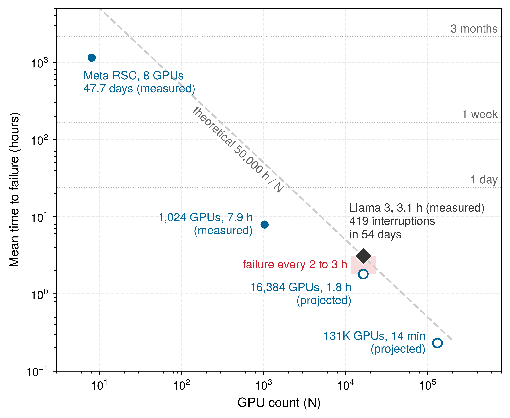
Содержание главы
Содержание
- 7 Отказоустойчивость
- 7.1 Анализ отказов в масштабе
- 7.2 Математика неизбежных отказов
- 7.3 Таксономия отказов
- 7.4 Аппаратные отказы в масштабе парка
- 7.5 Проверки и верификация против незаметного повреждения данных
- 7.6 Программные отказы
- 7.7 Цена отказа
- 7.8 Контрольные точки и сохранение прогресса
- 7.9 Обнаружение отказов и восстановление
- 7.10 Упругое восстановление
- 7.11 Отказоустойчивость обслуживания
- 7.12 Корректная деградация
- 7.13 Распределённая отладка и наблюдаемость
- 7.14 Инструменты и фреймворки для внесения отказов
- 7.15 Кейсы
- 7.16 Заблуждения и подводные камни
- 7.17 Итоги
7 Отказоустойчивость
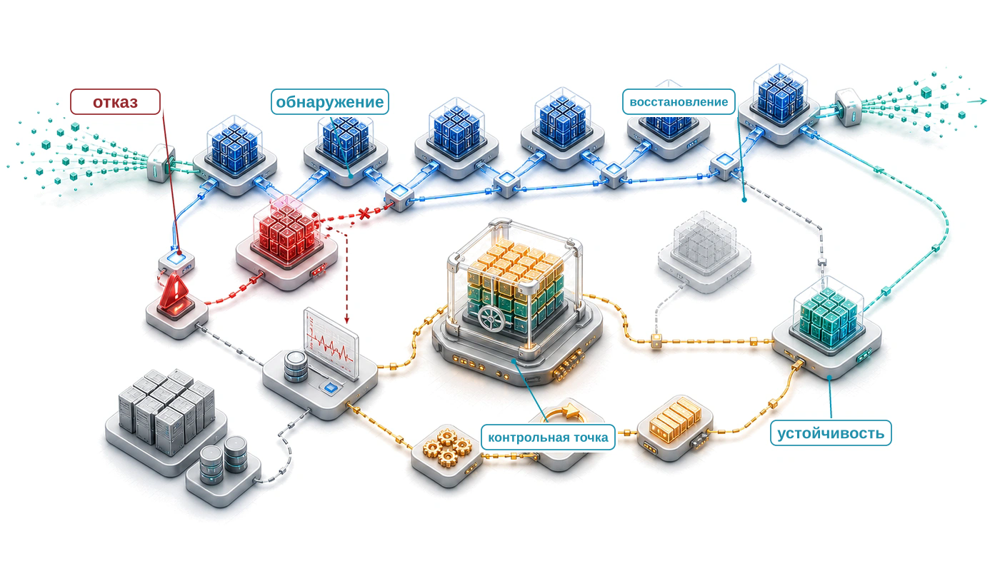
Назначение
Почему масштаб превращает отказ оборудования из редкого исключения в рутинное условие, которое системы вынуждены непрерывно поглощать?
Один ускоритель может работать годами без аппаратных отказов. Тысяча ускорителей превращает тот же риск отдельного компонента в отказы раз в несколько дней, десять тысяч — в отказы каждые несколько часов, а общие сбои питания и сети способны вывести из строя сразу многих воркеров. Чтобы парк столкнулся с отказами на регулярной основе, отдельным устройствам необязательно становиться менее надёжными. Программа на одной машине при отказе компонента часто может просто остановиться и перезапуститься; распределённому обучающему заданию сверх этого нужно восстановить согласие оставшихся воркеров о том, какой прогресс остаётся действительным. Быстрый перезапуск малоценен, если восстановленное состояние незаметно изменило вычисление. Сохранение большего объёма состояния уменьшает находящийся под угрозой объём работы, но расходует пропускную способность хранилища и память, пока задание исправно работает. Увеличение интервалов между сохранениями снижает эти накладные расходы, одновременно наращивая объём прогресса, который способен стереть отказ. Обслуживание порождает иные последствия: пользователи могут отказаться от запроса до завершения восстановления, а замена воркера может сделать контекст запроса недоступным. Ответ, пришедший вовремя, всё равно может оказаться неприемлемым, если восстановление утратило сведения, необходимые для его формирования. Поэтому инженеры обязаны ограничивать потерянную работу и время восстановления, сохраняя действительность обучения и полезность сервиса. Цель — продолжение полезного исполнения вопреки повторяющимся отказам, с явным учётом издержек и ограничений восстановления. В терминах C³ отказоустойчивость тратит вычисления и коммуникацию на координацию, чтобы отказы компонентов не превращались регулярно в отказ всей рабочей нагрузки.
Цели обучения
- Вычислить среднее время между отказами парка по интенсивностям отказов компонентов и оценить частоту прерываний для крупных обучающих кластеров
- Классифицировать аппаратные, программные, тихие повреждения данных (silent data corruption) и «медленно живые» отказы по обнаружимости, радиусу поражения и пути восстановления
- Выбирать интервалы контрольных точек, балансирующие накладные расходы на запись с допустимым объёмом потерянной работы и задержкой восстановления
- Проектировать распределённое сохранение контрольных точек и эластичные планы восстановления для состояния модели размером в несколько терабайт на парках ускорителей
- Проектировать резервирование при обслуживании, переключение на резерв и политики восстановления состояния в рамках бюджетов задержки и при частичных отказах
- Выбирать стратегии плавной деградации, сохраняющие полезный сервис при отказах моделей, признаков, регионов или ёмкости
- Оценивать таймауты обнаружения, стратегии перезапуска и свидетельства инъекции отказов относительно бюджета времени восстановления на один отказ
7.1 Анализ отказов в масштабе
Представьте кластер на 10,000 GPU посреди трёхмесячного обучающего запуска новой фундаментальной модели. План параллельного обучения и лежащий под ним коммуникационный слой выполнили свою работу, и тысячи устройств обмениваются градиентами через AllReduce, AllGather и AllToAll так, будто это одна машина. Но затем арифметика масштаба догоняет нас. GPU отказывает каждые несколько часов, и если система не способна поглотить это обычное физическое событие, синхронизированное обучение останавливается, а вычисления стоимостью около $0.5M в день простаивают. Отказоустойчивость — это свойство системы, позволяющее распределённому исполнению продолжать двигаться вперёд полезно, когда компоненты отказывают, деградируют или исчезают. В стеке парка из Рисунок 4 отказоустойчивость занимает строку Reliability & Control в диапазоне Distribution, где она защищает прогресс, производимый параллелизмом и коммуникацией.
Эта хрупкость — прямое следствие успешной синхронизации. Каждый коллективный вызов в Коллективная коммуникация предполагал, что все ранги его группы процессов прибылись, и каждый зависимый потребитель ждёт всех вкладов. Поэтому одно зависшее устройство может остановить прогресс своей синхронной обучающей группы, даже пока несвязанные задания продолжают работу в других частях парка. Отказоустойчивые МЛ-системы сохраняют прогресс, обнаруживая отказ, сохраняя восстанавливаемое состояние в контрольных точках, перезапуская или эластично перестраивая задания и относясь к смене оборудования как к нормальному исполнению, а не как к исключительному пути. Этот конверт надёжности охватывает обе половины работы парка. Обучение требует восстановления, сохраняющего недели накопленного прогресса, тогда как обслуживание требует резервирования, переключения на резерв и плавной деградации, сохраняющих контракт по задержке, — и оба черпают резервную ёмкость из общего пула парка.
↪ Как планировщик держит резервную ёмкость для отказавших заданий и предварительно размещает узлы на замену, пока пропущенное heartbeat-сообщение подтверждается, описано в Отказ как вход планирования.
Не каждый отказ объявляет о себе. Компонент может остановиться полностью, замедлиться, продолжая отвечать на проверки живости, или продолжать работать, вычисляя неверные значения. Тихие случаи сочетают низкую обнаруживаемость с большим радиусом поражения, потому что система продолжает работать на состоянии, которому уже нельзя доверять. Цель восстановления здесь, следовательно, — доверенное исполнение: сохранение действительного обучающего прогресса и восстановление сервиса после отказа его инфраструктуры или программного обеспечения. Восстановленная модель всё равно может давать плохие предсказания на изменившихся входах, даже когда каждый компонент исполняется корректно. Оценка такой поведенческой устойчивости требует отдельного контракта о качестве модели при сдвигах распределения и состязательных входах, описанного в Надёжный ИИ. Это разграничение позволяет использовать сигналы качества модели для диагностики отказа, не считая всякую регрессию качества свидетельством неисправного оборудования.
Поскольку отказы в этом масштабе невозможно исключить, отказоустойчивые системы проверяют завершение, а не предполагают его, относят к отказу как к обычному пути исполнения, непрерывно тренируют восстановление и учитывают частичные отказы, при которых одни компоненты отказывают, а другие продолжают работать, — случай, который наивная обработка ошибок может не предвидеть. Эти техники опираются на десятилетия исследований распределённых систем, но МЛ-нагрузки меняют их экономику. Контрольные точки обучения велики, но их размер можно вычислить из состояния модели и оптимизатора. Некоторые алгоритмы оптимизации также допускают ограниченные числовые возмущения без побитового воспроизведения. Такая устойчивость должна быть установлена для конкретного метода обучения; стохастичность не делает произвольное повреждение или несогласованное восстановление безопасными. Дизайн восстановления может эксплуатировать приближённое исполнение, лишь сохраняя заявленные требования к сходимости и качеству. Превращение отказа в рутинную часть эксплуатации начинается с того, как часто приходят отказы, и приводимая далее математика делает переход от редкого исключения к рутинному событию точным.
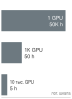
Среднее время между отказами (MTBF) парка схлопывается с 50,000 h до 5 h по мере умножения числа GPU.
7.2 Математика неизбежных отказов
Один GPU в дата-центре может работать годами без аппаратной неисправности, но синхронное задание на десяти тысячах таких же GPU прерывается каждые несколько часов. Инженерия надёжности систем объясняет, почему долговечность отдельного устройства так быстро обесценивается, когда тысячи компонентов должны оставаться исправными одновременно (Birolini 2017 г.). У каждого компонента есть интенсивность отказов
↪ Результаты о независимости, экспоненциальных временах жизни и процессе Пуассона, на которых держится эта арифметика отказов, развиты в Вероятностные инструменты анализа отказов.
Ожидаемое время до отказа этого компонента равно
Когда несколько независимых компонентов работают в системе, где любой одиночный отказ вызывает отказ системы, Уравнение 2 формализует, как надёжность системы становится произведением надёжностей отдельных компонентов:
Для
Системная интенсивность отказов становится
Следствием является разрыв между частотой отказов и длиной задания. При 10,000 GPUs вычисление только по GPU даёт ожидаемый интервал 5 hours, поэтому обучающий запуск длиной в недели накапливает десятки ожидаемых отказов, а длиной в месяцы — сотни. Это плановые средние, а не расписание инцидентов; более короткое задание может завершиться без отказов, даже когда его ожидаемое число отказов больше единицы. Как только ожидаемое время между отказами падает ниже длины задания, отказоустойчивость становится частью бюджета исполнения для долговременно работающей нагрузки парка. Применённая к знаковым обучающим запускам из Момент масштаба, чьё число ускорителей выросло примерно на четыре порядка с 2012 по 2024 год, та же плановая по-устройственная интенсивность ставит самый крупный из них, с более чем десятью тысячами GPU, ниже системного MTBF в 10 часов. Восстановление, следовательно, становится активным ограничением планирования, а не свойством надёжности.
7.2.1 Составление надёжности компонентов
Расчёт только по GPU из Уравнение 4 даёт интуицию о масштабе; реальная обучающая система затем собирает GPU, HBM, линии связи, блоки питания, пути хранения данных и резервирование в единый бюджет отказов. Интенсивности отказов компонентов обычно указываются в единицах FIT, введённых вместе с интенсивностью отказов, так что GPU с 50,000-hour вносит 20,000 FIT в ту систему, в которую он входит. Новый вопрос — как интенсивности разных компонентов складываются, а правило композиции зависит от структуры резервирования и предположений о независимости. Для последовательных систем (например, узла, где все 8 GPU должны работать) отказ любого компонента означает отказ всей системы. При независимых отказах с постоянной интенсивностью надёжности перемножаются, как в Уравнение 2, поэтому интенсивности складываются даже для разных компонентов:
Тот же закон произведения управляет мгновенной доступностью — величиной, отличной от функции выживания
Системный взгляд 7.1: Масштаб преобразует отказ
Кластер из 10,000 GPU превращает MTTF одного GPU 50,000 hours в MTBF системы 5 hours. Для восстанавливаемой системы установившаяся доступность равна
Ускорение восстановления — один из ответов на эту арифметику; резервирование — другой. Для параллельных систем, дающих резервирование, предположим, что любой уцелевший компонент может предоставить требуемый сервис. При независимых отказах и отсутствии ремонта в интервале наблюдения система выживает, пока не откажут все компоненты:
Последовательная композиция — проблема обучающего задания, поскольку синхронный шаг требует участия всех. Параллельная композиция — рычаг обслуживающего парка, и она возвращается, когда взаимозаменяемые реплики защищают контракт по задержке. Однако оба правила описывают всё, что модель называет компонентом, а интенсивность отказов, приписанная этому компоненту, зависит от того, какие механизмы защиты находятся внутри него.
Опорный пример 7.1: Архетип A (GPT-4/Llama-3): масштаб мягких ошибок в памяти
Композиция делает принципиальным различие между «сырыми» отказами и прерываниями задания. Интенсивности мягких ошибок памяти указываются на мегабит хранилища, а не на устройство, поэтому экспозиция растёт с объёмом памяти. В качестве иллюстративного бюджета «сырых» битовых ошибок предположим 250 FIT на мегабит на 1,024 GPU с 80 GB каждый — это размер эталонного кластера Архетипа A. Получившийся интервал между «сырыми» ошибками памяти составляет примерно 20 seconds. Это не измеренный интервал отказов задания. Защита кодами коррекции ошибок (ECC) может исправлять покрываемые шаблоны ошибок до того, как они затронут вычисления, тогда как обнаруженные неисправимые ошибки и прошедшая незамеченной порча требуют других путей восстановления. При такой «сырой» интенсивности незащищённая память в эталонном кластере портила бы состояние обучения много раз в час, поэтому ECC — предусловие крупномасштабного обучения, а не опция. Бюджет надёжности парка, следовательно, нуждается в остаточных интенсивностях прерывающих задание отказов и незаметной порчи данных при его фактической схеме защиты; одни лишь «сырые» интенсивности битовых ошибок не позволяют установить, доминирует ли память, логика или соединения.
Эти «сырые» интенсивности битовых ошибок оправдывают ECC, но это не те интенсивности прерываний, которые задают частоту контрольных точек; разбираемый далее каскад использует значения MTTF устройств, уже включающие эффект такой защиты. Каскад также трактует вклады GPU, PCIe, питания и сети как отдельные категории, поэтому измеренная интегральная интенсивность всего узла, уже включающая эти пути, не может быть добавлена к ним повторно.
7.2.2 Расчёт MTBF кластера
Рассмотрим обучающий кластер, предназначенный для разработки больших языковых моделей, примерно в десять раз больший эталонного кластера Архетипа A из 1,024 GPU, со следующими характеристиками:
- 10,000 GPU NVIDIA H100
- MTTF отдельного GPU: 50,000 hours
- Каждый GPU подключён к хосту через PCIe (MTTF: 200,000 hours)
- Каждый узел содержит 8 GPU, питаемых от 6 блоков питания (MTTF: 100,000 hours каждый) в резервировании 4+2, так что узел сохраняет полную производительность при отказе любых 2 из них
- Сетевая инфраструктура на узел (NIC, кабели): MTTF 150,000 hours
Каждый GPU работает внутри домена отказа, который включает сам GPU, его соединение PCIe и пропорциональную долю общей сетевой инфраструктуры и питания узла. Деление интенсивности подсистемы всего узла на 8 GPU узла пропорционально распределяет один общий источник отказов между этими GPU, так что умножение суммарной интенсивности на GPU на все 10,000 GPU на последнем шаге учитывает общее оборудование каждого узла один раз на узел, а не восемь раз. Питание входит в сумму только через блоки, отказ каждого из которых останавливает узел, учитываемые как
Поскольку подсистемы стоят последовательно, их интенсивности складываются в суммарную интенсивность на GPU:
Умножение этой суммарной интенсивности на размер кластера даёт интенсивность отказов системы, обратная величина которой — MTBF кластера:
Согласно модели, кластер испытывает отказ в среднем каждые 3.9 hours. Ожидаемая частота отказов — 6.2 failures/day; обучающий запуск длительностью одна неделя имеет ожидаемое количество 43 failures. Фактические моменты инцидентов варьируются, но ожидаемые потери достаточно велики, чтобы восстановление было частью нормального планирования выполнения.
↪ Пошаговое составление интенсивностей отказов компонентов в MTBF системы всего парка, применимое к любому дизайну узла и размеру кластера, развито в Каскад MTBF.
Масштабирование MTBF кластера в Таблица 1 выделяет базовый вариант только по GPU для разных размеров кластера. Полнсистемный расчёт ниже, как только включены домены отказов PCIe и сети. Поэтому один и тот же кластер из 10 000 GPU несёт в этой главе три значения MTBF. Каждый последующий расчёт называет используемое им значение: «только GPU» 5 hours из этой таблицы, полносистемное 3.9 hours из каскада выше и частота отказов в два-три часа, которую сообщают несколько более крупные производственные запуски ниже. Полнсистемный MTBF — вход по умолчанию; расчёт, использующий значение только по GPU, об этом сообщает, обычно потому что сравнивает размеры кластеров на общей основе Таблица 1, и его количество отказов тогда является нижней границей.
Два сквозных сценария сопровождают остальную часть главы. Эталонный кластер Архетипа A из 1,024 GPU задаёт масштабы состояния на узел, пути восстановления, а также примеры упругости и отстающих, тогда как кластер каскада из 10,000 GPU задаёт частоту отказов и интервалы контрольных точек.
| Размер кластера (GPU) | MTTF отдельного GPU | MTBF кластера | Ожидаемое число сбоев в день |
|---|---|---|---|
| 8 | 50,000 hours | 6,250 hours (260 days) | 0.004 |
| 64 | 50,000 hours | 781 hours (33 days) | 0.03 |
| 512 | 50,000 hours | 98 hours (4 days) | 0.25 |
| 1,000 | 50,000 hours | 50 hours (2 days) | 0.48 |
| 4,000 | 50,000 hours | 12 hours | 1.9 |
| 10,000 | 50,000 hours | 5 hours | 4.8 |
| 25,000 | 50,000 hours | 2 hours | 12 |
Производственные измерения подтверждают зависимость
Вместе измеренный прогон Llama и проекция Kokolis помещают обучение на 16,384 GPU в режим отказов с частотой примерно раз в два-три часа, ограниченным проекцией 1.8-hour и измерением 3.1-hour. Эти данные превращают идеализированное соотношение
7.3 Таксономия отказов
Сетевой раздел, который исчезает через несколько секунд, и необратимый отказ GPU прерывают шаг обучения, но повтор первой попытки завершается успехом, а повтор второй лишь расходует время кластера на мёртвый кремний. Тихое повреждение памяти, порождающее неверные градиенты, требует совсем иной защиты, чем падение узла, который перестаёт отвечать вовсе. Если вычисления MTBF оценить, как часто приходят прерывания — это задаёт интервалы контрольных точек и размеры резервного пула, — то выбор правильного действия по восстановлению требует различать, какого рода произошёл отказ. В стандартной терминологии надёжности: fault (дефект) — это исходный дефект или возмущение, error (ошибка) — порождаемое им повреждённое внутреннее состояние, а failure (отказ) — внешне наблюдаемое некорректное поведение, с которым должна справляться система обучения или обслуживания (Avizienis и др. 2004 г.).
Ни одна метка не охватывает все эти различия. Решения по надёжности требуют трёх ортогональных осей (Constantinescu 2008 г.; Lamport и др. 1982 г.): устойчивость во времени (транзиентный, перемежающийся или постоянный), проявление (fail-stop, деградация или порча значений) и охват отказа (одно устройство, один узел, стойка или домен питания либо вся задача). Два вида проявления нужно назвать отдельно, потому что проверки живости их не видят. Серый отказ (gray failure) — это компонент, который остаётся жив, но работает медленно или нестабильно, поэтому продолжает отвечать на проверки живости, которые зафиксировали бы падение, в то время как каждый ожидающий его узел замедляется. Тихое повреждение данных (SDC) идёт дальше: оно порождает неверные значения вообще без каких-либо ошибок.
Поскольку три оси независимы, один дефект располагается на всех трёх одновременно. Транзиентное возмущение может проявиться и как обнаруженное падение, и как тихое повреждение, тогда как постоянный отказ коммутатора может остаться в пределах одной стойки или разрезать на части целую задачу. Каждая ось определяет отдельное эксплуатационное решение. Устойчивость во времени определяет, устранится ли дефект сам или потребует карантина и замены оборудования (Глава 7.4.1). Проявление отделяет упавшие ранги от медленных «отстающих» (Глава 7.9.5) и от византийской порчи значений, а охват определяет, когда единичная общая угроза способна победить наивную избыточность. В следующих подразделах берётся по одному случаю с каждой оси: транзиентные отказы для устойчивости во времени, отказы fail-stop и византийские — для проявления, коррелированные отказы — для охвата.
Производственные журналы показывают, с какими из этих отказов крупный прогон сталкивается на самом деле. За 54-дневный период предобучения Llama 3 405B на 16,384 GPU H100 компания Meta каждому из 419 непредвиденных прерываний сопоставила компонент первопричины (Dubey и др. 2024 г.). Согласно группировке по причинам в Рисунок 2, на компоненты GPU приходится 268 из них, то есть около 64 percent; лидируют 148 неисправных GPU и 72 отказов памяти HBM. Программное обеспечение вызвало 56 прерываний, из которых 54 были ошибками, а 2 — отказами зависимостей. Сетевые коммутаторы и кабели вызвали 35, незапланированное обслуживание хостов — 32, а оставшееся хостовое оборудование, от сетевых карт до блоков питания, — 21. Последние 7 — это тайм-ауты сторожевого таймера NCCL, первопричину которых так и не нашли. Лишь 6 прерываний отнесены к тихому повреждению данных, и это число включает только обнаруженные повреждения. Поэтому основная часть усилий по отказоустойчивости направлена на частые, обнаруживаемые отказы ускорителей, тогда как редкие тихие требуют защиты иного рода.
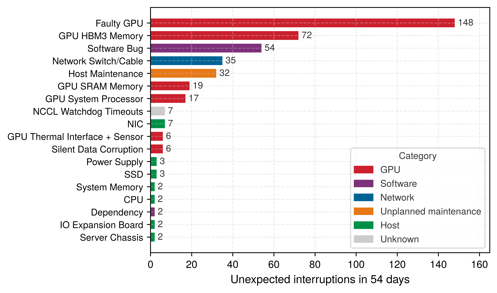
7.3.1 Преходящие отказы
Преходящая неисправность устраняется без физического ремонта, однако состояние, которое она повредила, может сохраниться после окончания возмущения, вынуждая восстановление повторить или проверить затронутую работу, прежде чем полагаться на это состояние. В крупномасштабных системах обучения временные нарушения варьируются от потери сетевых пакетов, где утраченные пакеты восстанавливаются повторной передачей транспортного уровня, до переключений битов в памяти, вызванных одиночными событиями (single-event upsets) под действием космических лучей.4 Нарушения синхронизации могут быть столь же разрушительными, не повреждая биты напрямую. При скачках температуры троттлинг из-за нагрева снижает вычислительную пропускную способность, не останавливая исполнение. Программные тайм-ауты срабатывают, когда временная конкуренция за ресурсы задерживает коллективную операцию сверх отведённого окна.
Преходящие неисправности особенно трудно диагностировать в обучении МЛ, когда они не оставляют явного сигнала об ошибке. Если аппаратная защита и само вычисление не маскируют переключение бита памяти при вычислении градиента, повреждённое значение распространяется в последующие обновления, пока обучение продолжается. Масштабные исследования тихой порчи данных (SDC) документируют такую ускользнувшую порчу в серийных процессорах, а полевые исследования DRAM подтверждают, что ошибки памяти случаются достаточно часто, чтобы требовать мониторинга на уровне парка (Dixit и др. 2021 г.; Sridharan и др. 2015 г.; Schroeder и др. 2009 г.). В обучении МЛ эта необнаруженная порча проявляется как деградировавшие градиенты, аномальные кривые функции потерь или контрольные точки, требующие отката, а не как явный сбой.
Реакция системы на преходящий отказ зависит от того, объявляет ли неисправность о себе. Ошибки, порождающие явные исключения, можно обрабатывать ограниченной логикой повторных попыток, тогда как тихая порча требует сквозной валидации. Контрольные суммы выявляют изменённые байты в хранилище или при передаче; перекрёстные дайджесты рангов, сравнивающие короткий хэш копии каждого ранга, выявляют расхождение в якобы идентичном редуцированном буфере; статистические и реплей-проверки проверяют, остаётся ли само вычисление правдоподобным. Поскольку ранг, вычисливший неверный локальный градиент и затем посчитавший контрольную сумму этих неверных байтов, пройдёт обычную транспортную проверку, ошибку может выявить только независимое перевычисление, инварианты или свидетельства на уровне модели.
7.3.2 Fail-stop отказы
В синхронном распределённом обучении один замолчавший участник блокирует следующее обновление всей группы. Обычный AllReduce не может завершиться, пока каждый ранг не предоставит свой вход, поэтому один погибший GPU в задаче на 10 000 GPU оставляет остальные 9 999 ускорителей ожидать у барьера до начала восстановления. Меньшие коммуникационные группы ограничивают непосредственную зависимость, хотя конвейерные или слои параллелизма по данным вскоре распространяют остановку на остальную часть задачи. Такие fail-stop отказы происходят, когда компонент полностью прекращает работу и перестаёт отвечать на запросы. Аппаратный отказ GPU делает отдельный ускоритель неотзывчивым, а падение хост-узла завершает все обучающие процессы на машине. Сетевой раздел разрывает связь между исправным узлом и кластером, а отказ хранилища блокирует чтение или запись шардов контрольных точек.
Остановившийся компонент даёт более ясный симптом, чем тот, что продолжает возвращать правдоподобные, но неверные значения. Однако остановившийся ранг объявляет о себе лишь тишиной, так что обнаружение опирается на тайм-ауты, которые должны отличать полный сбой от медленного или изолированного хоста — например, GPU, всё ещё записывающего крупную контрольную точку, пока коллективная операция ждёт. Когда тайм-аут помечает отсутствующего участника, система восстановления заменяет или перезапускает его и восстанавливает последнюю валидную контрольную точку; Глава 7.9.1 задаёт порог этого тайм-аута, когда виден полный бюджет времени восстановления.
7.3.3 Византийские отказы
Там, где fail-stop компонент перестаёт участвовать, компонент, портящий значения, может продолжать работать, возвращая неверные результаты. GPU может возвращать неверные градиенты без ошибки, канал может доставить повреждённый пакет, чей шаблон ошибки не покрыт его циклической проверкой избыточности (CRC), а рабочий узел может вычислять разные результаты для одинаковых входов и состояния. Византийские отказы допускают произвольное поведение, включая несогласованные сообщения разным участникам (Lamport и др. 1982 г.). Системы МЛ могут столкнуться с этой более широкой моделью отказа через тихую порчу данных или злонамеренную порчу. Численная неустойчивость и нарушения детерминизма тоже требуют валидации, когда они нарушают контракт исполнения, но обычные различия округления или намеренно стохастические выходы сами по себе не являются свидетельством неисправного рабочего узла. Проблема для восстановления — участник, чей принятый вклад может испортить общее состояние без видимого сбоя.
Эти две модели оставляют разные свидетельства (Рисунок 3). Fail-stop рабочий узел, такой как W2, замолкает, и его пропавшие heartbeat-сообщения — периодические сообщения о живости, которые каждый рабочий узел отправляет, — делают его подозрительным. Византийский рабочий узел, такой как W6, продолжает отправлять сообщения по расписанию, поэтому он проходит любую проверку живости, хотя отправляемые им значения неверны.
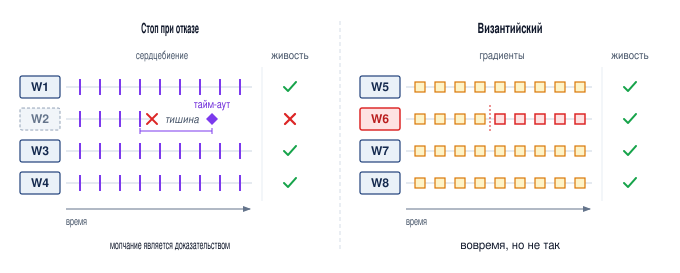
В парке МЛ самый частый источник порчи значений — не злоумышленник, а аппаратура, изменяющая значение без ошибки, — та самая тихая порча данных, уже встречавшаяся среди преходящих отказов. Её физические причины, обучающие сигналы, которые её выявляют, и защиты — верификация и горячий резерв, — которые её сдерживают, рассматриваются совместно в Глава 7.5, после аппаратных отказов, её порождающих. Каков бы ни был источник, византийский вклад нарушает контракт, который проверки живости никогда не проверяют. Обычные рабочие узлы параллелизма по данным обрабатывают разные батчи и не обязаны выдавать идентичные локальные градиенты; требуемый контракт — чтобы каждый вклад корректно представлял назначенное ему вычисление. Один византийский рабочий узел может нарушить этот контракт и испортить усреднённый градиент, потенциально вызывая расходимость обучения или сходимость к плохому решению. Целостность синхронизации градиентов рассматривает ту же слабость, когда портящий рабочий узел — намеренный атакующий.
Избыточное вычисление даёт одну форму свидетельства против византийских отказов. Рабочие узлы, повторяющие вычисление с одинаковыми входами, состоянием и потоками случайных чисел, могут сравнивать результаты при заданном численном допуске. Статистическое обнаружение выбросов и инварианты дают дополнительные свидетельства без полного повторения вычисления. У каждого метода есть предел покрытия. Согласие может пропустить общие неисправности, а статистическая аномалия может возникнуть из легитимной вариации данных. Поэтому накладные расходы на обнаружение нужно оценивать вместе с теми отказами, которые метод способен выявить.
Существуют устойчивые к византийским отказам алгоритмы распределённого обучения, но они налагают значительные накладные расходы. Krum (Blanchard и др. 2017 г.) сохраняет единственный градиент рабочего узла, чьи ближайшие соседи лежат ближе всего к нему, и отбрасывает остальные, а покоординатное усечённое среднее (Yin и др. 2018 г.) отбрасывает наибольшие и наименьшие значения в каждой координате перед усреднением оставшихся. Оба метода вычисляют агрегаты, устойчивые к ограниченному числу византийских рабочих узлов, но требуют больше коммуникации и вычислений, чем простое усреднение. Без такой защиты повреждённые градиенты могут толкать оптимизатор к ненадёжному состоянию модели, при этом обучающая задача выглядит здоровой. Следовательно, надёжность должна защищать семантическую корректность, а не только живость процесса.5
7.4 Аппаратные отказы в масштабе парка
Космическая частица, перевернувшая один бит в высокоскоростной памяти GPU, и паяный шов, треснувший от термоциклирования, — физические события, но система восстановления никогда не наблюдает их напрямую. Она наблюдает симптомы: скачок градиента без падения процесса, ранг, исчезнувший из коллективной операции, или узел, который отказывает только после нагрева под длительной нагрузкой. Таксономия отказов из Глава 7.3 уже классифицирует такие события по персистентности, проявлению и охвату. Для аппаратуры наибольшую эксплуатационную значимость несёт персистентность, потому что она решает, должен ли парк повторять попытку, изолировать или заменять компонент, тогда как проявление определяет, замечает ли парк отказ вообще.
Рабочие нагрузки ML повышают ставки каждого отказа. Один шаг обучения выполняет триллионы арифметических операций над состоянием, которое сохраняется в последующие шаги, поэтому неверное значение может пережить вычисление, его породившее. Ущерб зависит от затронутого значения и его последующего использования. В формате IEEE 754,6 переворот знакового бита инвертирует вес, а переворот бита экспоненты может сдвинуть малый градиент на много порядков. Исследования инъекции отказов показывают, что устойчивость сети зависит от модели, слоя и позиции бита, поэтому несколько отказов в уязвимых местах могут стоить непропорционально большой потери точности (Reagen и др. 2018 г.). Правдоподобное на вид повреждённое значение может попасть в обучаемое состояние, не вызвав отказа процесса, который в противном случае запустил бы восстановление.
↪ То, как переворот бита экспоненты FP16 пересчитывает значение на
Масштаб парка превращает эти редкие отказы устройств в рутинные условия эксплуатации. Меньшие технологические нормы и более низкие рабочие напряжения могут уменьшить заряд, необходимый для нарушения хранимого значения (Baumann 2005 г.). Исследования парков в Google и Meta обнаружили, что небольшая, но постоянная популяция процессоров — порядка нескольких единиц на несколько тысяч машин — вычисляет неверные результаты, не поднимая никакой ошибки (Hochschild и др. 2021 г.; Dixit и др. 2021 г.). Исследования парков ускорителей для обучения также заключают, что редкие аппаратные отказы случаются достаточно часто, чтобы обнаружение и восстановление на уровне ПО стали частью конструкции обучающей системы (He и др. 2023 г.). Поэтому архитекторам ML-систем следует относиться к аппаратуре как к ненадёжному субстрату и закладывать сквозные проверки целостности, повторное выполнение вычислений на критичных путях и периодические проверки согласованности как системные требования, а не как специальности высокопроизводительных вычислений.
7.4.1 Персистентность отказов и реакция парка
Каждый класс персистентности из таксономии отображается в своё действие парка: от повтора для отказа, который не оставляет ничего для починки, через изоляцию для отказа, возвращающегося под нагрузкой, до замены для отказа, повторяющегося при каждой попытке (Рисунок 5). Преходящий отказ, как установлено в Глава 7.3.1, не оставляет длительного дефекта от самого события, поэтому вопрос парка лишь в том, не вырвался ли его эффект наружу. Одиночное событие (single-event upset), просадка напряжения на нестабильной линии питания (Reddi и Gupta 2013 г.), нарушение тайминга или мягкая ошибка в комбинационной логике (Mukherjee и др. 2005 г.) могут повредить тензор, пакет или инструкцию. Обнаружение и коррекция могут предотвратить распространение; иначе затронутое состояние может потребовать отката. Во время обучения необнаруженная ошибка в весах или градиентах может поставить под угрозу сходимость и загрязнить последующие контрольные точки (He и др. 2023 г.). Во время stateless-инференса ошибка активации может остаться в пределах одного запроса (Mahmoud и др. 2020 г.). Если же эта активация попадает в сохраняемое состояние, например в KV-кэш, от неё могут зависеть и последующие выходы.
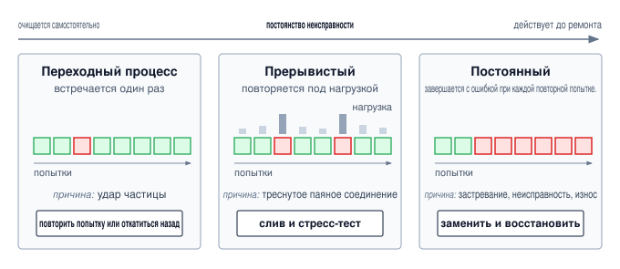
Постоянный отказ объявляет о себе через повторяемость. Тот же ускоритель, та же ячейка памяти или тот же линк отказывают снова после повтора, часто по тому же адресу или в той же фазе нагрузки. Дефекты производства и механизмы износа, такие как электромиграция7 и пробой диэлектрика, дают такую сигнатуру, а stuck-at отказ, при котором сигнал остаётся фиксированным на 0 или 1 независимо от входа, — её стандартная абстрактная модель (Seong и др. 2010 г.). Повторяемость помогает локализовать дефект, но не делает результат достоверным. Постоянный отказ тракта данных продолжает выдавать неверные градиенты, пока устройство не выведено из кластера (He и др. 2023 г.), а повторное выполнение вычисления на том же устройстве воспроизводит ошибку вместо того, чтобы её обнаружить. Парк должен перестать доверять компоненту, изолировать его и восстановиться с контрольной точки, предшествующей его первой неверной записи.
Перемежающиеся отказы создают наибольшую эксплуатационную неоднозначность, потому что предъявляют свидетельство, а затем исчезают. Узел может пройти тест после перезагрузки, вернуться в парк и отказать снова, лишь когда очередное задание загонит корпус в тот же тепловой, напряжённый или коммуникационный режим. Треснувшие паяные швы, старение корпусов и загрязнение контактов создают такие условия, зависящие от нагрузки (Constantinescu 2008 г.; Rashid и др. 2015 г.), а сниженные запасы по напряжению вызывают трудно воспроизводимые ошибки тайминга (Zhang и др. 2018 г.). Спорадические ошибки такого рода могут накапливаться по итерациям и ухудшать сходимость без какого-либо явного отказа (Rashid и др. 2015 г.). Поэтому перемежающийся узел должен оставаться под подозрением, пока свидетельства не очистят его. Парк выводит его из длительных заданий, сопоставляет его журналы ошибок и допускает обратно только после прохождения стресс-тестов под нагрузкой, обнажившей отказ. Иначе один пограничный компонент может сделать валидацию и восстановление недостоверными для каждого задания, которое на него попадёт. Для всех трёх классов персистентности свидетельства, обнажающие отказ, определяют и реакцию парка (Таблица 3).
| Персистентность | Сигнатура в парке | Свидетельства обнаружения | Реакция парка |
|---|---|---|---|
| Преходящий | Разовое неверное значение или потерянное сообщение; повтор успешен | Счётчики скорректированных ошибок, несовпадения контрольных сумм, скачки градиента | Исправить или повторить; откатиться, если было загрязнено долговременное состояние |
| Перемежающийся | Повторяющиеся ошибки под определённой нагрузкой, нагревом или напряжением | Сопоставленные журналы ошибок и повторяющиеся аномалии на одном узле | Вывести и изолировать; допускать обратно только после отбраковки под нагрузкой |
| Постоянный | Воспроизводимый отказ на том же устройстве, адресе или линке | Неудачный самотест или несовпадение при повторе на том же устройстве | Заменить компонент; восстановиться с контрольной точки до отказа |
7.4.2 Жизненный цикл аппаратуры и интенсивность отказов
Новая, только распакованная стойка ускорителей гораздо вероятнее откажет в первую неделю службы, чем в шестой месяц, а многолетняя стойка, пережившая тысячи термоциклов, снова становится хрупкой по мере усталости корпусов и паяных швов. Пока персистентность классифицирует отказ после того, как он случился, функция интенсивности отказов
Пережив детскую смертность, компоненты входят в фазу полезной жизни, где в стандартной модели надёжности частота отказов остаётся относительно постоянной (Birolini 2017 г.; Klutke и др. 2003 г.). Эта фаза занимает наибольшую часть жизни компонента и является режимом, в котором экспоненциальная модель надёжности из Уравнение 1 применима точнее всего. Для дата-центровых GPU окно полезной жизни — операционное планировочное понятие, формируемое циклами обновления, охлаждением, утилизацией и наблюдаемым здоровьем парка, а не фиксированная физическая длительность.
С возрастом компоненты входят в фазу износа, где частота отказов растёт из-за накопленного износа. Для GPU механизмы износа включают электромиграцию в схемах, термоциклические нагрузки на паяные швы и деградацию термоинтерфейсных материалов. Начало износа сильно зависит от условий эксплуатации; компоненты, работающие при высоких температурах или с частым термоциклированием, входят в износ раньше.
Практическое следствие для ML-систем в том, что частоты отказов по всему парку могут зависеть от возрастного распределения. В модели «ванны» новая когорта проходит через повышенный ранний риск, относительно стабильный период и, в конце концов, износ. Отбраковка, условия эксплуатации и политика замены определяют, насколько этот паттерн проявляется в полевых данных. Парки со смешанным возрастом сочетают когорты на разных стадиях, поэтому их агрегированная интенсивность отказов не обязана следовать кривой одной когорты.
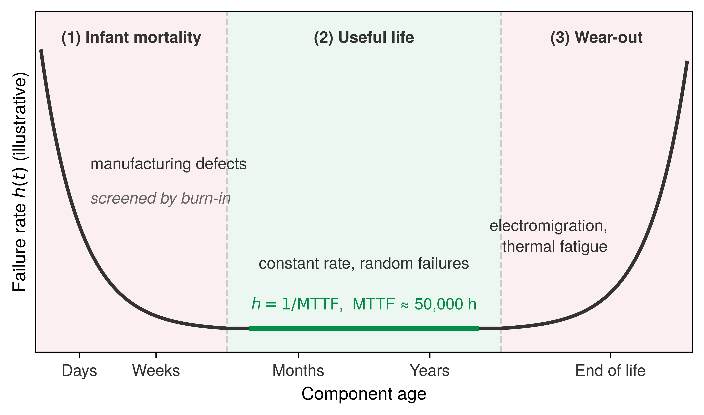
Эти три режима интенсивности отказов из Рисунок 6 напрямую переводятся в политики допуска и обслуживания. Прежде чем назначать новые или отремонтированные узлы на долгий обучающий запуск, операторы используют стресс-тесты умножения матриц, памяти и коммуникаций, чтобы выявить пограничные компоненты. Во время службы тренды температур, счётчики ошибок и деградация производительности помогают определять устройства для плановой замены. Отбраковка выносит отказы из дорогих производственных запусков. Отказ периода детской смертности, пойманный за несколько часов стресс-тестирования, стоит лишь простоя, тогда как тот же отказ через недели претренинга вынуждает откат к контрольной точке. Поэтому операторы часто направляют свежие или отремонтированные узлы сначала на короткие задания. Мониторинг затем проверяет, остаётся ли модель постоянной частоты уместной по мере старения парка.
7.4.3 Обнаружение и смягчение отказов в масштабе парка
Burn-in отбраковка и замена по жизненному циклу удерживают наиболее склонное к отказам оборудование вне долгих обучающих запусков, но даже здоровые устройства середины жизни всё ещё страдают случайными отказами, которые накапливаются по парку — так же, как это происходит с частотами прерываний из Глава 7.2. Полевые исследования DRAM в крупных дата-центрах показали, что ошибки памяти случаются достаточно часто, чтобы память с коррекцией ошибок, фоновая очистка (периодическое перечитывание памяти для исправления ошибок до их накопления) и мониторинг частоты ошибок стали стандартной практикой парка, а не опциональным укреплением (Schroeder и др. 2009 г.; Sridharan и др. 2015 г.). Защита потребляет часть ёмкости и пропускной способности на контрольные биты и очистку, но эта стоимость мала по сравнению с испорченным многонедельным запуском.
Обнаружение работает послойно, с разным покрытием и разной ценой. На аппаратном уровне коды с коррекцией ошибок9 (Hamming 1950 г.) исправляют и обнаруживают те шаблоны ошибок в памяти, которые покрывает реализованный код, а CRC на уровне каналов связи10 проверяет повреждения при передаче. Эти механизмы защиты действуют внутри включённых границ хранения и передачи данных; они не проверяют корректность неверного арифметического результата лишь потому, что его байты дошли без искажений. До развёртывания встроенное самотестирование (built-in self-test) и выгорание (burn-in) на этапе жизненного цикла аппаратуры выявляют производственные дефекты и постоянные отказы (Bushnell и Agrawal 2002 г.). Во время эксплуатации операторы периодически выводят узлы из производства и прогоняют на них стресс-тесты с известными ответами для арифметики, памяти и соединительной сети, потому что дефектные процессоры часто отказывают лишь на определённых комбинациях инструкций, шаблонах данных или рабочих точках (Hochschild и др. 2021 г.; Dixit и др. 2021 г.).
Программный слой извлекает самые дешёвые свидетельства из метрик, которые цикл обучения и так выдает. Статистические проверки функции потерь, норм градиентов и активаций отмечают незаметный дрейф (Chandola и др. 2009 г.), пропущенные сердцебиения (heartbeats) выявляют предполагаемые отказы (Kawazoe Aguilera и др. 1997 г.), а сторожевые таймеры (watchdog) ловят задачи, зависшие без падения (Pont и Ong 2002 г.). Узел, который остаётся живым, но работает медленно или нестабильно — «серый отказ» из таксономии отказов — может замедлять прогресс, продолжая укладываться в тайм-аут живости, поэтому Глава 7.9.5 рассматривает его через обнаружение отстающих (straggler detection). Избыточные вычисления добавляют более сильные свидетельства на выбранных путях — либо периодически, либо в ответ на аномалию — повторяя шаг на другом устройстве или сравнивая независимо вычисленные результаты. Частота таких проверок зависит от остаточного риска повреждений, ценности защищаемого состояния и стоимости позднего обнаружения ошибки.
Контрольная точка 7.2: Классификация аппаратной неисправности
Проверьте своё понимание категорий мгновенных, постоянных и перемежающихся отказов и цепочки «отказ — ошибка — сбой»:
7.5 Проверки и верификация против незаметного повреждения данных
Из только что классифицированных аппаратных отказов самыми дорогостоящими являются те, чьё проявление незаметно. Повреждённое значение, не вызывающее ошибки, проходит все проверки живости, которые выполняет парк, и обучение продолжает строиться на нём. Поэтому защита от незаметного повреждения данных (SDC) требует проверок, устанавливающих корректность результата, а не просто живость процесса; выбор таких проверок начинается с того, откуда приходит повреждение и как оно проявляется в обучении.
7.5.1 Физика незаметного повреждения
Ускоритель исполняет детерминированные логические вентили, однако кремний, несущий эти вентили, работает в узких физических пределах, где и случайные удары частиц, и зависящие от нагрузки дефекты могут переворачивать биты, не останавливая процессор. Одиночные сбои от воздействия частицы (SEU) — те самые удары частиц, о которых говорилось в связи с мгновенными отказами, — создают для парка экспозицию, растущую с числом устройств и временем работы, даже когда удельная частота для одного устройства низка. Производственные вариации могут, напротив, оставлять «пограничные» чипы, которые проходят первичный контроль качества, но отказывают на определённых входных данных или в определённых рабочих условиях. Важны запасы по напряжению и температуре, включая возмущения питания при резких изменениях тока (
Facebook (ныне Meta) описал массовый случай SDC, когда аппаратный отказ приводил к тому, что корректный файл при распаковке выдавался с «нулевым размером» (Dixit и др. 2021 г.); система «работала» без падений, но данные незаметно удалялись. В ML тот же отказ проявляется в виде градиентов, выглядящих корректными, но численно повреждённых. Трасса конвейера на Рисунок 7 прослеживает одиночный переворот бита в АЛУ или памяти: он искажает отдельный элемент тензора, заражает редукцию градиентов при обратном проходе, попадает в веса и в конце концов проявляется как падение качества на оценке. Сравнительные таймлайны ниже противопоставляют эту незаметную задержку стандартной обнаруженной ошибке. Аппаратная ловушка (trap) останавливает работу за миллисекунды, чтобы чисто перезапуститься с последней контрольной точки, тогда как незаметное повреждение часами или днями сохраняет заражённое состояние в контрольных точках, прежде чем предупреждение системы оценки вынудит к дорогому откату.
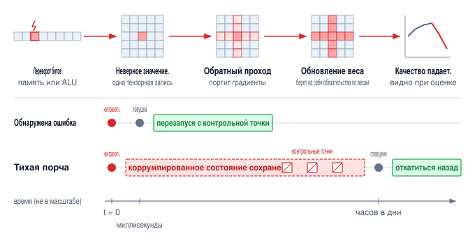
Телеметрия производственных парков обучения показывает, что такое повреждение — рутина, а не аномалия. При современных масштабах обучения перевороты битов происходят регулярно, и ошибочные вычисления одного неисправного ускорителя могут распространиться в глобальное состояние модели, как задокументировал Джефф Дин (Jeff Dean) в своём докладе на MLSys 2024 о незаметном повреждении данных (Dean 2024 г.) (Рисунок 8).
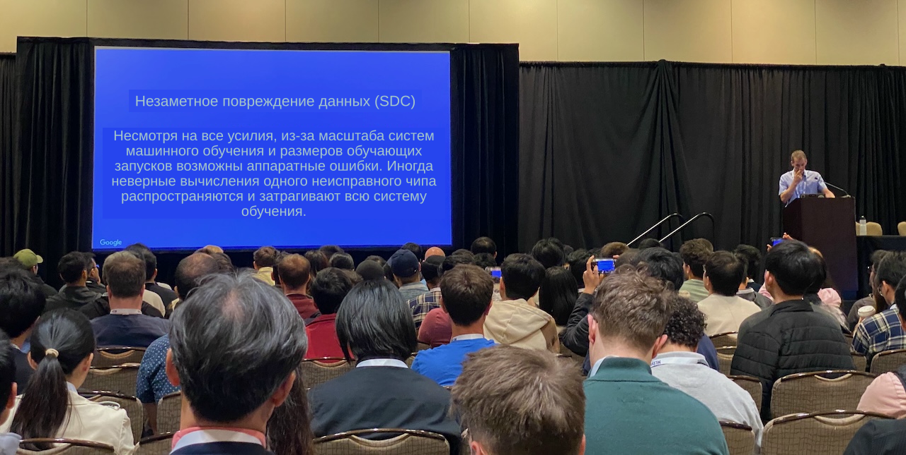
В телеметрии обучения Google, представленной в Dean (2024 г.), Рисунок 9 идентифицирует резкую аномалию нормы градиента как событие SDC. График показывает симптом, не указывая повреждённый бит или схему. Повреждение экспоненты числа с плавающей запятой — один из механизмов, способных сильно изменить значение тензора и последующие обновления. Отсечение градиентов (gradient clipping) может ограничить величину обновления, но не восстанавливает корректный градиент; детектор аномалий должен запустить валидацию или восстановление до того, как подозрительное состояние будет принято.
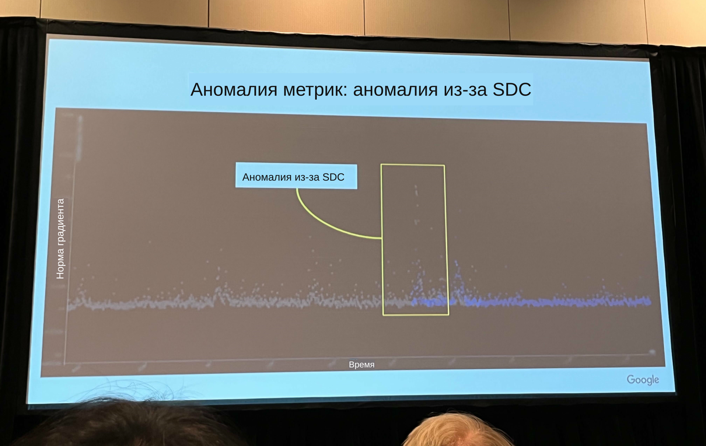
7.5.2 Верификация в масштабе парка
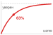
Кумулятивная вероятность SDC со временем приближается к достоверности на длинном прогоне.
Даже малая удельная частота SDC на один GPU накапливается в ходе повторяющихся коллективных операций, и накопление растёт с размером парка. Любой отдельный коллектив маловероятно содержит событие SDC. При иллюстративной удельной частоте, указанной в ноутбуке ниже, вероятность на один шаг остаётся малой, тогда как кумулятивная вероятность растёт на протяжении долгого прогона обучения, достигая
Стандартный AllReduce лишь суммирует переданные вклады; он не устанавливает, что живой рабочий узел вычислил корректный градиент. Поэтому парку нужна валидация, соответствующая его модели отказов, в дополнение к проверкам живости. Правила робастной агрегации из Глава 7.3.3 — Krum и усечённое среднее — допускают ограниченное число неверных градиентов за счёт дополнительных затрат на коммуникацию и вычисления. Методы «проверь и верифицируй» вместо этого ищут неверные значения, проверяя инварианты тракта данных, в пределах границы, проведённой для мгновенных отказов в Глава 7.3.1. Дайджесты проверяют байтовую целостность и совпадение в пределах своих возможностей обнаружения ошибок; они не могут установить корректность исходного вычисления. Независимое вычисление, алгоритмический инвариант или повтор (replay) проверяют это дополнительное утверждение в рамках заявленной модели отказов. Быстрая оценка показывает, какую экспозицию должны покрыть эти проверки.
Инженерный расчёт 7.1: Накопление риска незаметного повреждения данных (SDC)
Задача: при иллюстративном предположении о типовой частоте SDC вычислите вероятность того, что хотя бы один GPU в парке из 100,000 GPU испытает событие SDC в течение одного шага обучения длительностью 2 s.
- Размер парка: 100,000 ускорителей.
- Индивидуальный риск:
на GPU-час (иллюстративное предположение о типовой частоте SDC). - Экспозиция: в окне длительностью 2-second парк имеет
«GPU-часов» экспозиции. - Вероятность:
0.0056 percent.
Системный вывод: при этом иллюстративном предположении постоянной частоты парк из 100k тысяч GPU ожидает одно событие SDC каждые 18,000 steps (примерно каждые 10 hours), хотя вероятность на один шаг составляет всего 0.0056 percent. CRC или хэш может защитить каждый шард или редуцируемый буфер от повреждения при передаче или хранении, а избыточная редукция может независимо проверить арифметический тракт. Каждая проверка превращает робастность из задачи перезапуска в задачу верификации — но только для того механизма отказа, который она покрывает.
Полная репликация защищает более широкий путь вычислений при соответственно высоких затратах ресурсов. Двойное модульное резервирование выполняет каждое вычисление дважды и сравнивает результаты, а тройное модульное резервирование выполняет его трижды и берёт результат большинством голосов. Эти схемы платят 100 и 200 процентов накладных расходов аппаратуры соответственно, чтобы обнаружить или замаскировать отказ в пределах одного контрольного дедлайна (Sheaffer и др. 2007 г.; Arifeen и др. 2020 г.). Эти гарантии зависят от того, что реплики не имеют общего отказа. Цена оправдана в критически важных для безопасности встраиваемых системах управления, например бортовых компьютерах автомобиля, где один неверный выход может подвергнуть людей опасности, а дублируемая аппаратура — это небольшой компьютер. Для обучения в парке дублирование каждого шага прогона на 10,000 GPUs GPU удваивает вычисления, затраченные на эти шаги, ещё до затрат на сравнение и координацию. Когда повреждения редки, а откат может восстановить корректное состояние, выборочная избыточность может защищать полезный прогресс дешевле. Скрининг выводит подозрительные устройства из строя, статистические проверки работают непрерывно, резервные пулы поглощают выгруженные узлы, а периодическая или запускаемая по триггеру рекомпутация проверяет выбранные пути исполнения.
Реактивный протокол «горячего резерва» Google показывает, как эти элементы соединяются в три стадии (Рисунок 10). Когда мониторинг времени исполнения помечает аномальный градиент, а повтор (replay), заново исполняющий помеченное вычисление на другой аппаратуре и сравнивающий результаты, указывает на подозрительный ускоритель (G2), планировщик изолирует это устройство и продвигает горячий резерв (S) в активное кольцо. Затем он выделяет замещающий резерв (S’), пока подозрительный блок проходит аппаратную диагностику (Dean 2024 г.). Парк заранее платит за одно простаивающее устройство на пул, а не за дублирование каждого вычисления, и за это отказывается от части покрытия. Резерв заменяет только устройство, помеченное мониторингом и повтором, поэтому повреждения, которые эти проверки пропустили, остаются в состоянии обучения. Протокол переносит бремя корректности с неверифицируемой аппаратуры на системный аудит. И всё же эти аппаратные проверки снижают лишь риск ненадёжного физического субстрата; они не защищают от отказов, которые вносит сам программный стек, — ошибок, выглядящих как корректное вычисление, пока они повреждают ML-конвейер.
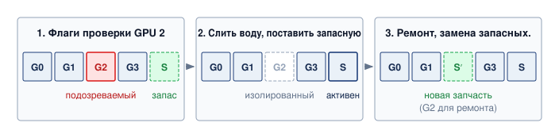
Контрольная точка 7.3: Обнаружение незаметного повреждения данных
Проверьте своё понимание византийских отказов и SDC:
7.6 Программные отказы
Команда тратит три месяца на тестирование большой языковой модели (LLM) на сложных сценариях отказов на уровне промптов и лишь затем осознаёт, что её скрипт предобработки сохранял только последние 512 токенов каждого входа, беззвучно отбрасывая системный промпт на длинных запросах. Этот пример демонстрирует заурядный источник отказов ML, который алгоритмическое тестирование может пропустить. Логическая ошибка в загрузчике данных или сборщике промптов может сохранять корректные формы тензоров, меняя смысл вычислений, что позволяет конвейеру продолжать работу без аварийного завершения.
Программные отказы требуют иного взгляда на восстановление, чем аппаратные сбои. Аппаратные отказы приходят со стороны кремния, электронов и физического износа; программные — через проектные решения, версии зависимостей и склейку конвейера. Задача отказоустойчивости смещается от замены отказавшего компонента к выявлению того, какое внешне корректное преобразование повредило данные, градиенты или предсказания. Каждая граница между фреймворком, библиотекой, средой исполнения и распределённой системой — это место, где такое преобразование может скрываться.
7.6.1 Свойства и распространение программных отказов
Одна утёкшая ссылка на тензор на каждой итерации обучения позволяет корректно рассчитанной задаче дрейфовать к пределу памяти устройства сотни шагов, а затем упасть с ошибкой нехватки памяти далеко от кода, который её породил. В ML-фреймворках программные отказы такого рода охватывают логические ошибки, утечки ресурсов, ошибки конкурентности и несоответствия интеграции, распространяющиеся через системные границы. Гонки в асинхронных обновлениях могут терять или перезаписывать обновления параметров, а взаимные блокировки11 оставляют воркеры в ожидании сообщений, которые никогда не придут. Поскольку многие из этих отказов проявляются только под высокой нагрузкой, на конкретном оборудовании или при определённом сочетании высокоуровневого фреймворка и низкоуровневой численной библиотеки вроде cuDNN, анализ первопричины должен рассматривать код модели, среду исполнения и её зависимости как один версионируемый артефакт.
7.6.2 Обнаружение и предотвращение программных отказов
Ошибка усечения промптов из вводного примера, а также ошибки работы с памятью и синхронизацией выше не должны в неприкосновенности доживать до многонедельных запусков. Поскольку многие программные отказы оставляют конвейер работающим, повреждая входы или градиенты, каждый этап верификации должен устанавливать, какой инвариант выполняется и какое действие по восстановлению безопасно при его нарушении. Юнит-тест ловит границу токенизатора до запуска, интеграционный повтор (replay) проверяет, что записанный батч воспроизводит ожидаемые формы и состояние на заведомо исправном оборудовании, а тест с инъекцией отказов проверяет, что повреждённый буфер или потерянный воркер вызывает откат до порчи закоммиченного состояния.
Несколько из этих этапов также проверяют сам механизм восстановления до того, как на него придётся положиться при инциденте. Тренировка восстановления проверяет манифест контрольной точки — запись, в которой перечислены все сохранённые шарды и общий для них шаг обучения (Глава 7.8.5.2). Тест с инъекцией отказа членства убивает или изолирует воркер и проверяет, что после его замены устаревший процесс больше не может записывать состояние, которому задача будет доверять. Правила эпохи, аренды и fencing из Глава 7.9.2 обеспечивают эту гарантию, проставляя в каждой записи текущий счётчик членства, поэтому хранилище отклоняет любую запись с более старым счётчиком. Каждая тренировка восстановления оценивается по двум границам, формализованным в Глава 7.8: сколько завершённой работы может потерять отказ и сколько времени может длиться восстановление до возобновления полезного исполнения. Во всех шести этапах каждый тест заслуживает своё место тем оперативным решением, которое он санкционирует (Таблица 4).
| Доказательство надёжности | Проверяемый инвариант | Обеспечиваемое решение |
|---|---|---|
| Пограничный юнит-тест | Лимиты токенизатора, формы тензоров, маски и метаданные шага остаются валидными | Отклонить изменение до распределённого исполнения |
| Детерминированный повтор | Записанный батч воспроизводит эквивалентное состояние на заведомо исправном железе | Отделить дефекты входа или ПО от подозрительного железа |
| Тренировка восстановления контрольной точки | Закоммиченный манифест восстанавливает каждый шард и возобновляется с названного шага | Принять поколение как удовлетворяющее контракту восстановления |
| Инъекция отказа членства | Убитый или изолированный воркер теряет владение и не может записывать после замены | Проверить передачу владения и пересборку коммуникатора |
| Инъекция повреждения | Изменённый шард, уменьшенный буфер или контрольная точка не проходит задуманную проверку | Заблокировать шаг оптимизатора или откатиться до распространения |
| Тест отката зависимостей | Версионируемые среда исполнения и набор артефактов могут вернуться к последней исправной комбинации | Санкционировать автоматический откат вместо ручного ремонта |
Эти меры защиты значимы лишь тогда, когда каждый этап нацелен на конкретный путь повреждения. Тест, который проверяет только то, что токенизатор запускается, слишком слаб: он должен утверждать, что системные промпты, метки, маски и метаданные длины последовательности проходят предобработку с ожидаемой семантикой. Интеграционный повтор затем проводит один записанный батч через загрузку, шардирование, коллацию и построение входа модели. Инъекция отказов проверяет, срабатывает ли детектор до защищаемого коммита и остаётся ли восстановление в названных границах потерь работы и времени восстановления для внедрённого отказа. Тренировки восстановления, отклонение устаревших писателей и отклонение повреждённых шардов дают, следовательно, те доказательства, которые не может дать общий успех сборки, а Глава 7.14 непосредственно проверяет эти утверждения, когда сами пути восстановления уже построены. Однако прежде чем строить эти пути, парк должен решить, сколько защиты стоит каждый тип рабочей нагрузки.
7.7 Цена отказа
Потеря суток без контрольной точки на запуске фундаментальной модели на 10 000 GPU сжигает сотни тысяч долларов машинного времени ускорителей, тогда как потеря часа на небольшом vision-задании стоит несколько сотен долларов, а неудачное обновление в онлайн-рекомендателе обходится потерей живой выручки, а не переделкой батчей. Аппаратные сбои, тихие повреждения и программные отказы в совокупности определяют, как часто отказывает парк, но объём работы, который уничтожает отказ, определяет цену каждого инцидента. Защиту стоит покупать лишь там, где она устраняет больше этого ожидаемого ущерба, чем добавляет постоянных накладных расходов.
7.7.1 Цена отказа по типам нагрузки
Три свойства рабочей нагрузки определяют цену прерывания обучения: скорость сгорания кластера, на котором выполняется задача, занимаемый объём памяти состояния, которое нужно сохранять и загружать, и то, насколько чувствительно качество модели к потерянным или переставленным обновлениям. Эти три фактора отделяют многотерабайтные фундаментальные модели и непрерывные рекомендатели от меньших задач vision, речи и научных вычислений (Таблица 5).
| Тип модели | Типичная длительность обучения | Размер контрольной точки | Чувствительность состояния | Цена отказа |
|---|---|---|---|---|
| Архетип A (GPT-4/Llama-3) | Недели—месяцы | 2.45 TB (175B) | Высокая (позиция в порядке данных) | $0.5M вычислений за потерянные 24 ч |
| Vision (ViT-Large) | 1–3 дня | 1.2 GB | Средняя (состояние аугментаций) | $10–50K в день потерь |
| Архетип B (DLRM в масштабе) | Непрерывно | 10 TB+ (эмбеддинги) | Очень высокая (свежесть эмбеддингов) | Влияние на выручку в час |
| Речь (масштаба Whisper) | 3–7 дней | 5–10 GB | Средняя | $50–200K в день потерь |
| Научные (AlphaFold) | Дни—недели | 10–50 GB | Высокая (состояние исследования) | Задержка исследований |
Обучение больших языковых моделей показывает, как дорогая конфигурация умножает каждый час потерянного прогресса. Кластер этой главы на 10,000 GPU по цене около $2/GPU-hour несёт расходы на вычисления в $0.5M в день. Задача, сохраняющая контрольные точки лишь раз в сутки, может потерять до полных суток прогресса из-за одного отказа, что стоит $0.5M потраченных впустую вычислений плюс задержка расписания. При интервале контрольных точек, выведенном в Глава 7.8.1, тот же отказ стоит минут переделки вместо суток. Соответственно велики и накладные расходы на контрольные точки. В возобновляемом формате по 14 байт на параметр, который использует анализ контрольных точек (веса BF16, главные веса FP32 и два момента FP32 Adaptive Moment Estimation (Adam)), наш рабочий пример на 175 млрд параметров пишет 2.45 TB при каждом сохранении.
7.7.2 Вложение в защиту
Каждый GPU-цикл, сетевой байт и накопитель, выделенные под контрольные точки, резервные узлы или верификацию, — это ресурс, который не обучает модель; однако экономия на защите оставляет многомиллионный запуск беззащитным перед суточными откатами. Рациональное вложение в отказоустойчивость, следовательно, взвешивает то, что уничтожает отказ, против стоимости эксплуатации защиты.
Когда случается отказ, его счёт выходит далеко за пределы GPU-часов, сгоревших на шагах, которые придётся повторить. Повторение потерянной работы задерживает выдачу обученной модели, занимает ускорители, которые могли бы выполнять другие задачи, и отрывает инженеров от исследований для диагностики отказов и ручного перезапуска. На другой стороне счёта издержек профилактика несёт постоянные накладные расходы даже на исправном кластере. Хранилище контрольных точек масштабируется с размером модели и частотой сохранений, а записи контрольных точек конкурируют за пропускную способность памяти и сети. Горячие резервы и автоматические контроллеры восстановления потребляют постоянную инфраструктуру, а отказоустойчивая координация добавляет сложность ПО, которую нужно поддерживать и отлаживать.
Оптимальное вложение балансирует эти две кривые против масштаба кластера. Для небольшой задачи на нескольких GPU, где аппаратные отказы случаются с разницей в недели, редкие контрольные точки и ручные перезапуски дешевле постоянной инфраструктуры восстановления. На тысячах GPU, где отказы приходят несколько раз в день, частые контрольные точки, автоматическое переключение на резерв и эластичное изменение размера многократно окупают свои накладные расходы. Интервал контрольных точек, выведенный в Глава 7.8.1, применяет именно этот маржинальный баланс к одной переменной решения, выбирая ритм, при котором стоимость ещё одного сохранения равна ожидаемой переделке, которую оно предотвращает.
Уравнение 5 представляет упрощённую экономическую модель ожидаемой стоимости одного обучающего запуска:
где
Уравнение 6 формализует, когда вложение в отказоустойчивость оправдано:
где
Одно вложение, прогнанное через критерий, показывает, что он решает. Пусть
Системный взгляд 7.2: Три правила отказов при масштабировании
- В масштабе отказы — норма, а не исключение. Кластер на 10,000 GPU испытывает отказ каждые 3.9 hours в среднем. Системы нужно проектировать, ожидая отказы как штатную работу.
- Интервалы контрольных точек имеют оптимум. Интервал Янга—Дейли (разобран в Глава 7.8.1) задаёт частоту сохранений по времени записи и MTBF системы при заявленных допущениях, и он сокращается лишь пропорционально корню из падающего MTBF.
- Обучение и обслуживание имеют принципиально разные требования к отказоустойчивости. Длительное обучение может закладывать минуты на восстановление, сохраняя накопленный прогресс; интерактивному запросу на обслуживание до дедлайна может остаться лишь несколько миллисекунд. Эти бюджеты мотивируют восстановление из контрольных точек для обучения и готовую резервную ёмкость для обслуживания.
Эти три правила организуют остальную часть главы. Правила 1 и 2 относятся к длительным задачам обучения, которые должны защищать накопленный прогресс, правило 3 — к паркам обслуживания с низкой задержкой, которые должны защищать живые запросы, а наблюдаемость и внедрение отказов проверяют, что оба пути восстановления работают под нагрузкой. Устойчивость обучения начинается с долговременного состояния, на которое опирается каждый перезапуск или изменение размера.
7.8 Контрольные точки и сохранение прогресса
Когда смерть коммутатора на верхней стойке происходит на второй неделе обучения модели со 175 миллиардами параметров, кластер мгновенно теряет 64 ускорителя. Поскольку крупный кластер испытывает такие прерывания регулярно (Глава 7.1), он не может перезапускать многонедельные задачи с нуля; отказоустойчивость обучения должна сохранять состояние, обнаруживать и классифицировать отказ, а также возобновлять или изменять размер группы исполнителей. Контрольные точки обеспечивают первую из этих трёх обязанностей, и каждый путь обнаружения, перезапуска и упругого изменения размера, рассматриваемый далее в главе, зависит от долговременного снимка, который они создают. Первый вопрос проектирования — что должен содержать этот снимок, чтобы перезапуск был корректным.
Определение 7.1: Сохранение контрольных точек
Контрольные точки (checkpointing) — это периодическая сериализация полного состояния обучения (параметров, состояния оптимизатора, позиции загрузчика данных и случайного состояния) в долговременное хранилище на зафиксированном шаге обучения.
- Значимость: Контрольные точки минимизируют потерянную работу после системного отказа, обменивая ввод-вывод контрольных точек на переделку. Слишком частая запись расходует время ускорителей на трафик к хранилищу; слишком редкая — рискует повторить множество уже выполненных шагов после отказа. Интервал Юнга—Дейли, выводимый в этом разделе, выбирает частоту, балансирующую стоимость записи с ожидаемой потерянной работой.
- Отличие: Возобновляемая контрольная точка захватывает согласованное состояние исполнения, включая состояние оптимизатора, состояние генератора случайных чисел, позицию в данных и расписания скорости обучения. Она может использовать полное или инкрементальное хранилище; побитное воспроизведение дополнительно требует совместимого детерминированного исполнения.
- Типичная ошибка: Частое заблуждение состоит в том, что контрольные точки — это «просто запись на диск». Для больших моделей это стресс-тест системы хранения, поскольку одновременная запись с тысяч ускорителей может вызвать шторм контрольных точек (определение 4.5), насыщающий общую пропускную способность сети и хранилища
.
Контрольная точка полезна только если она согласованно возобновляет зафиксированный шаг. В распределённом обучении каждый шард должен принадлежать одному и тому же восстанавливаемому состоянию; набор файлов из разных шагов не сохраняет прогресс. Для модели интервалов предположим, что запись контрольной точки завершается записью в долговременное хранилище до того, как она станет доступной для восстановления, и что отказ отбрасывает работу, выполненную с момента последней завершённой контрольной точки.
Две цели восстановления превращают требования корректного перезапуска в контракт. Цель точки восстановления (RPO) ограничивает допустимую потерянную работу, поэтому возраст контрольной точки и отставание репликации должны укладываться в неё. Цель времени восстановления (RTO) ограничивает задержку до возобновления полезной работы, что охватывает обнаружение, замену ресурсов, восстановление и прогрев. Интервал контрольных точек в 20 минут не может обещать RPO ниже 20 минут без более частого долговременного журнала или реплики, а асинхронная выгрузка может оставить последнее долговременное поколение ещё более старым. RTO в пять минут невозможно, если одна только перезагрузка контрольной точки занимает восемь минут. Эти цели применяются к заданной модели отказов. Повреждение, обнаруженное после нескольких сохранений, может потребовать отката за пределы новейшей долговременной контрольной точки. Интервал Юнга—Дейли, выводимый далее, минимизирует ожидаемые потери; RPO и RTO накладывают сервисные ограничения, которые оптимум по математическому ожиданию всё равно должен удовлетворять (Beyer и др. 2016 г.).
7.8.1 Интервал контрольных точек Юнга—Дейли
Когда отказы ожидаются во время выполнения задачи, ключевое инженерное решение — как часто записывать это состояние, поскольку каждое сохранение стоит времени ввода-вывода, а каждый несохранённый шаг — работа, которую отказ может стереть. Формула Юнга—Дейли12 (принцип «Формула Юнга—Дейли») даёт оценку первого порядка этого баланса через правило квадратного корня:
Размер контрольной точки определяется состоянием оптимизатора, а не весами.
Чтобы увидеть этот баланс, рассмотрим интервал между сохранениями. Удвоение интервала примерно вдвое сокращает количество записей контрольных точек на единицу обучения, но отказ тогда теряет вдвое больше работы в среднем. При приближении постоянной интенсивности и редких отказов отказ происходит приблизительно равномерно внутри интервала, поэтому средняя потерянная работа составляет половину интервала. Когда время записи мало по сравнению с интервалом, доля потерь от сохранения и повторения работы приблизительно равна сумме ниже. Время обнаружения, выделения ресурсов и восстановления требует отдельного бюджета восстановления.
Приравняв первую производную к нулю (
↩︎ Пропускные способности хранения по уровням, ограничивающие скорость записи контрольной точки, установлены в Иерархия хранилищ для машинного обучения.
7.8.2 Интервал контрольных точек из анализа отказов
Интервал Юнга—Дейли из Уравнение 7 требует двух входов: системного MTBF и времени записи
Инженерный расчёт 7.2: Оптимальный интервал Юнга—Дейли
Задача: Кластер на 10,000 ускорителей имеет MTBF 3.87 hours. Полная контрольная точка модели записывается за 24.5 s. Какова оптимальная частота контрольных точек?
Математика: Применяем интервал Юнга—Дейли из Уравнение 7 (принцип «Формула Юнга—Дейли»).
- Переводим в общие единицы:
3.87 hours 3600 s/hour = 13932 s. - Подставляем и решаем: При
24.5 s и 13932 s формула даёт 826.2 s, или около 13.8 min.
Системный вывод: При таком интервале накладные расходы контрольных точек (время на сохранение плюс время на перевычисление) минимизируются до приблизительно 5.9 percent. Контрольные точки каждый час вместо этого увеличили бы ожидаемую переделку после каждого отказа, растрачивая около 13.6 percent ёмкости кластера.
Результат связывает измеренные или оценённые частоты прерываний с политикой контрольных точек. При этом интервале сохранение и ожидаемое повторение вместе потребляют приблизительно 5.9 percent времени обучения в модели первого порядка — половину на записи и половину на повторение, поскольку в квадратном корне оптимума два слагаемых Уравнение 8 равны. Построение этих двух слагаемых для этого кластера показывает, насколько снисходителен оптимум (Рисунок 11). Накладные расходы на запись падают гиперболически, а ожидаемая переделка растёт линейно, поэтому их сумма имеет пологий минимум около 14 min. Интервал, немного отклонившийся от оптимума, стоит мало, тогда как в несколько раз более короткий или длинный стоит намного больше — почему грубая оценка MTBF всё же даёт пригодное расписание. Насколько самой оценке можно доверять, зависит от упрощающих предположений за ней.
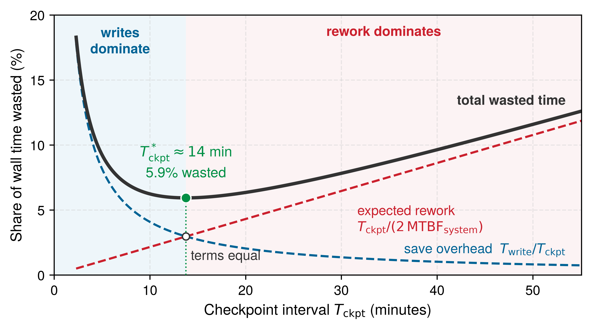
Системный взгляд 7.3: Допущения формулы Янга—Дейли
Формула Янга—Дейли первого порядка даёт полезную интуицию, но опирается на допущения, которые могут не выполняться, когда время записи становится заметным на фоне MTBF; модель обновления, выведенная в Интервалы контрольных точек за пределами приближения первого порядка, показывает, как конечное время контрольной точки меняет оптимум. Допущения таковы:
- Экспоненциальное распределение отказов: предполагается постоянная интенсивность отказов. Реальное оборудование следует кривой «ванны» — с более высокими интенсивностями на этапах приработки и старения.
- Детерминированное время контрольной точки: предполагается, что
постоянно. На практике время контрольной точки меняется от сохранения к сохранению из-за конкуренции за хранилище, перегрузки сети и нехватки памяти. - Стоимость восстановления не зависит от выбранного интервала: фиксированная стоимость восстановления на один отказ не меняет минимизирующий интервал первого порядка. Восстановление может занимать больше времени, чем запись контрольной точки, поскольку включает также задержки планирования задач, восстановление топологии и прогрев; тем не менее оно входит в бюджет общих потерь времени.
- Агрегированный процесс прерываний: независимые источники отказов с постоянной интенсивностью могут суммироваться в одну интенсивность прерываний задачи. Отказы общих питания, охлаждения или коммутаторов требуют модели частоты инцидентов и стоимости восстановления; простое суммирование интенсивностей по устройствам пропускает эти общие причины.
- Бесконечный горизонт: формула оптимизирует длительные обучающие запуски. Для коротких запусков, где общее время сравнимо с MTBF, нужен иной анализ.
При нарушении этих допущений оптимальный интервал может заметно сместиться. Время перезапуска добавляет в общие ожидаемые потери слагаемое на каждый отказ, а не стоимость, оплачиваемая при каждой контрольной точке; оно не заменяет
Вдоль шкалы исполнения обучающий запуск чередует продуктивные интервалы вычислений (
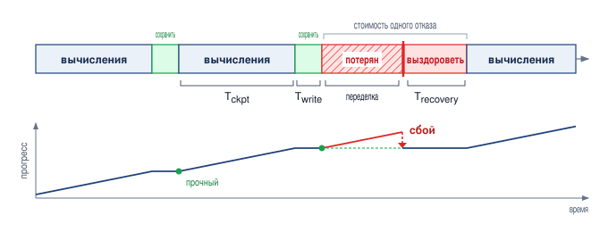
7.8.3 Анализ накладных расходов контрольных точек
Расчёт интервала определяет, когда система сохраняет состояние; путь записи определяет, во что обходится каждое сохранение, пока обучение ожидает. Уравнение Уравнение 9 обобщает слагаемое сохранения из Уравнение 8, включая любую паузу сверх самой записи:
Здесь
Синхронное и асинхронное контрольное точирование
Синхронное контрольное точирование возобновляет обучение только после того, как часть каждого работника достигнет долговременного хранилища. Асинхронное контрольное точирование вместо этого приостанавливает ускорители лишь на время, достаточное, чтобы скопировать тензоры весов и оптимизатора из памяти GPU в память хоста или локальную промежуточную область, а затем выгружает эту промежуточную копию в удалённое хранилище в фоне, пока обучение продолжается. Краткое копирование с устройства на хост необходимо, потому что следующий шаг оптимизатора обновляет живые тензоры GPU на месте, что иначе перезаписало бы состояние, ещё находящееся в сериализации. Синхронная и асинхронная запись контрольных точек развивает путь записи, лежащий в основе обоих подходов. Для восстановления одна лишь блокировка не обеспечивает согласованности, поэтому протокол должен гарантировать, что каждый шард принадлежит одному и тому же восстанавливаемому состоянию обучения. Восстановление может использовать асинхронную генерацию только после того, как все требуемые шарды достигнут уровня хранилища, переживающего моделируемый отказ, и координатор опубликует завершение. Если отказ случается, пока фоновая выгрузка ещё в полёте, восстановление вынуждено откатиться к предыдущей зафиксированной генерации.
Синхронное сохранение приостанавливает каждый ускоритель задачи на всё время удалённой записи, и Хранилище контрольных точек оценивает эту выставленную паузу на медленном общем уровне хранения. Асинхронный захват сокращает выставленную паузу до локальной промежуточной копии и уводит удалённую выгрузку с критического пути — именно поэтому производственные системы используют промежуточное хранение контрольных точек, а не блокируются на общем хранилище. Вычисленный ранее интервал Янга—Дейли для блокирующей записи — значит, консервативный случай; промежуточное сохранение с более короткой паузой сдвигает оптимум к более коротким интервалам и меньшим накладным расходам сохранения, при условии что каждая фоновая выгрузка завершается в пределах интервала. Время записи также сильно различается между типами моделей (Таблица 6). Большие модели требуют более долгих записей, но и зарабатывают более длинные оптимальные интервалы, поэтому накладные расходы сохранения растут лишь как квадратный корень из времени записи.
Строка «Архетип A» в Таблица 6 использует тот же возобновляемый чекпоинт по 14 байт на параметр (2.45 TB), что и вся глава. Её расчёт интервала использует MTBF кластера только по GPU, а не более короткий MTBF полной системы из сквозного каскадного примера, поэтому правило квадратного корня даёт более длинный интервал, чем ноутбук Янга—Дейли. Таблица сохраняет базу «только GPU», потому что её цель — сравнение между типами моделей. Перевод каждой строки на MTBF полной системы сократил бы каждый интервал и повысил бы каждые накладные расходы на один и тот же квадратнокорневой множитель, оставив ранжирование строк неизменным.
Строки ResNet-50 и BERT-Large учитывают только веса FP32, поэтому их времена записи и полученные интервалы — нижние границы для возобновляемого чекпоинта. Их интервалы в секундах описывают баланс для этого меньшего объёма данных; выбор ритма восстановления требует включения состояния оптимизатора, расписания и входного потока. Задачи с малым состоянием редко выполняются на столь крупном кластере, и их фактическая пропускная способность хранилища и полное состояние восстановления определяют, будут ли сохранения каждые несколько минут или каждую эпоху иметь пренебрежимые накладные расходы. Строки с большим состоянием показывают, почему выбор интервала становится существенным, когда каждое сохранение перемещает сотни гигабайт или терабайты.
| Тип модели | Размер чекпоинта | Время записи (100 GB/s) | Оптимальный интервал (5 h, MTBF только по GPU) | Накладные расходы сохранения |
|---|---|---|---|---|
| Архетип A (GPT-4/Llama-3) | 2.45 TB | 24.5 s | 15.7 min | 2.6% |
| Плотный трансформер класса 20B | 240 GB | 2.4 s | 4.9 min | 0.8% |
| BERT-Large | 1.4 GB | 0.014 s | 22 s | 0.06% |
| Рекомендательная система с тяжёлыми эмбеддингами | 4 TB | 40 s | 20 min | 3.3% |
| ResNet-50 | 102.2 MB | 0.001 s | 6 s | 0.02% |
| Класс визуальных трансформеров | 1.2 GB | 0.012 s | 21 s | 0.06% |
Эти удельные накладные расходы на модель предполагают, что путь записи не конкурирует с другими. Когда тысячи воркеров сохраняют состояние на одном и том же шаге, их совокупный всплеск становится штормом контрольных точек, который Хранилище контрольных точек определяет и оценивает по размеру; для восстановления этот всплеск важен потому, что задержавшаяся запись откладывает генерацию, на которую при отказе пришлось бы откатываться. Промежуточное размещение (staging) скрывает запись от обучения, но снимок, хранящийся только на локальном промежуточном узле, не переживёт потерю этого узла.
7.8.4 Хранение и восстановление контрольных точек
Запись контрольной точки на локальный NVMe-накопитель узла делает сохранение быстрым, но если сам узел отказывает, локальный снимок исчезает вместе с тем оборудованием, ради восстановления которого он создавался. Запись только в долговременную удалённую файловую систему или объектное хранилище переживает отказ узла, но вытягивание многотерабайтного состояния обратно по общим каналам хранения замедляет каждое восстановление. Поэтому механизмы восстановления объединяют уровни из иерархии хранения. Локальный NVMe обеспечивает быстрое промежуточное размещение и чтение выжившими узлами, распределённые файловые системы — долговечность при отказах узлов, а объектное хранилище — длительное удержание. Вместе эти уровни позволяют сохранённому состоянию и пережить отказ, и перезагрузиться в рамках бюджета восстановления.
↩︎ Многоуровневые схемы хранения контрольных точек и асинхронные конвейеры записи устоявшиеся; см. Хранилище контрольных точек.
Для отказоустойчивости размещение контрольной точки определяет, какие отказы переживёт сохранённое состояние, а путь восстановления — насколько быстро это пережившее отказ состояние станет полезным. На эталонном кластере Archetype A из 128 узлов каждый узел хранит около 19.1 GB из контрольной точки объёмом 2.45 TB для сквозного примера 175B. Чтение этой доли с локального NVMe при пропускной способности 5 GB/s занимает около 3.8 s, причём все узлы читают параллельно, тогда как вытягивание полной контрольной точки через общее хранилище при совокупной пропускной способности 100 GB/s занимает около 24.5 s. Локальный путь быстрее, поскольку он умножает пропускную способность накопителя на число узлов, но единственная копия на потерянном узле не может восстановить шард этого узла. Заменяющий узел должен прочитать свою долю из копии вне отказавшего домена — например, из распределённой файловой системы или объектного хранилища, — время восстановления которых определяется устойчивыми совокупными чтениями, ёмкостью сети и десериализацией. Поэтому разумное размещение хранит быструю локальную копию для выживших узлов и долговременную удалённую копию на случай того, что забрал отказ; при этом указанные скорости всё равно должны измеряться под собственной нагрузкой задания.
7.8.5 Шаблоны координации контрольных точек
Если воркеры в шардированном обучающем задании сохраняют свои локальные шарды на разных шагах без координации, то откат одного отказавшего воркера к его последнему сохранению обесценивает каждого узла-пира, уже потребившего градиенты или активации с его более поздних шагов. Откаты затем каскадно распространяются назад по всему запуску — классический «эффект домино» (Elnozahy и др. 2002 г.). Чтобы избежать этого каскада, нужно выбрать способ координации воркеров по двум ортогональным измерениям. Воркеры могут различаться тем, синхронизируются ли они для захвата согласованного среза — набора состояний отдельных воркеров, которые все могли существовать в один и тот же момент (координированная и некоординированная контрольные точки). Они также могут различаться тем, пропускают ли они состояние через одного пишущего узла или сохраняют шарды параллельно (централизованная и распределённая контрольные точки). Поскольку воркеры распределённого ML обмениваются состоянием на каждом шаге, производственное обучение опирается на координированные контрольные точки. В этой схеме воркеры синхронизируются на границах шагов или через явный двухфазный протокол фиксации, так что все сохранённые шарды принадлежат одной глобально согласованной линии восстановления — согласованному срезу, к которому все воркеры откатываются вместе. Когда координация гарантирует согласованность, остаётся единственное архитектурное решение: как эти шарды попадают в долговременное хранилище — через единого координатора или параллельной прямой записью своих разделов.
Централизованная контрольная точка
При централизованной контрольной точке воркеры отправляют своё состояние процессу-координатору, который собирает и записывает полную контрольную точку. Такой подход упрощает управление контрольными точками и может создавать самодостаточные файлы контрольных точек, но всё состояние проходит по сетевым каналам координатора, а отказ координатора прерывает сохранение. Потоковый писатель может избежать буферизации всей контрольной точки целиком, хотя и не способен устранить узкое место на входе. Это узкое место структурно. Координатор принимает данные по сетевым каналам одного узла, поэтому его время записи растёт с общим объёмом состояния, тогда как независимые писатели каждый перемещают лишь свою долю состояния по своим каналам. Разрыв между двумя шаблонами, следовательно, растёт пропорционально числу писателей. Для сквозного примера 175B узлы эталонного кластера в количестве 128 пропускали бы 2.45 TB через каналы одного узла вместо 19.1 GB через каждый. Шаблон жизнеспособен, пока этот единственный путь укладывается в бюджет контрольной точки; объём состояния и устойчивая пропускная способность определяют этот предел более напрямую, чем фиксированное число воркеров. Поэтому централизованная контрольная точка привлекательна, когда операционная простота важнее совокупной пропускной способности, тогда как распределённые и шардированные подходы становятся необходимыми, как только сама контрольная точка становится объектом масштаба парка.
Распределённая контрольная точка
Распределённая контрольная точка устраняет эту воронку координатора: каждый воркер самостоятельно сохраняет свой шард. Рисунок 13 противопоставляет топологии потоков данных. Централизованный шаблон концентрирует трафик на входе координатора, тогда как распределённый шаблон пишет параллельно на локальный NVMe и в фоновом режиме сливает шарды в удалённое объектное хранилище. При фиксированных размерах шардов на воркера и достаточной независимой промежуточной пропускной способности добавление воркеров не обязано удлинять локальную паузу записи. Общая пропускная способность слива и координация завершения всё же могут ограничивать масштабирование. Координатор сигнализирует, когда делать контрольную точку, и подтверждает завершение, но состояние течёт напрямую от воркеров в хранилище без агрегации.
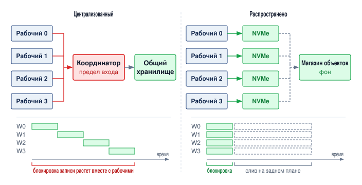
Синхронная версия протокола координации состоит из шести шагов:
- Координатор рассылает запрос контрольной точки с идентификатором контрольной точки
- Каждый воркер достигает согласованного состояния (барьерная синхронизация)
- Каждый воркер записывает неизменяемый шард в префикс промежуточного размещения, привязанный к конкретной генерации, и фиксирует длину в байтах и криптографический дайджест
- Каждый воркер подтверждает координатору долговременное завершение записи
- Координатор записывает неизменяемый манифест после всех подтверждений; манифест называет шаг обучения, топологию, форматы модели и оптимизатора, позицию загрузчика данных, случайное состояние, а также длину и дайджест каждого шарда, затем публикует маркер фиксации или атомарный указатель на этот манифест
- Координатор рассылает сообщение о завершении контрольной точки, обучение возобновляется
Идеализированный протокол предполагает, что шаг 2 завершается быстро. Однако барьер ждёт самого медленного из тысяч прибывающих, поэтому один медленный воркер может сделать его доминирующей частью паузы контрольной точки, даже если у пути хранения имеется большой запас пропускной способности. Измерение разброса времени прибытия отдельно от копирования и записи показывает, что ограничивает сохранение — координация или перемещение данных.
Манифест, а не наличие каталога или правдоподобного набора имён шардов, определяет зафиксированную генерацию контрольной точки. Восстановление принимает только опубликованный манифест, все шарды которого совпадают с записанными длинами и дайджестами; промежуточные шарды без этой финальной публикации остаются недостижимыми и могут быть удалены сборщиком мусора. Это правило не позволяет частично перезаписанному каталогу latest выдавать себя за восстанавливаемое состояние и делает откат между генерациями явным. PyTorch Distributed Checkpoint следует такому порядку: писатели хранилища сохраняют данные каждого ранга до операции finish() координатора, которая записывает метаданные и помечает контрольную точку успешной, а семантику публикации обеспечивает серверная часть хранилища (PyTorch Contributors 2026 г.a).
Шаги с 3-го по 5-й — это двухфазная фиксация,14 классический протокол распределённых систем для атомарного принятия одного решения многими участниками (Gray 1978 г.), применённый к контрольной точке. Шаги 3 и 4 образуют фазу подготовки, в которой каждый воркер размещает свой шард и сообщает об успехе, а шаг 5 — фазу фиксации, в которой координатор долговременно фиксирует решение, публикуя манифест. Правило публикации манифеста наследует гарантию протокола и его известную слабость. Если координатор падает после того, как воркеры подготовились, но до записи решения, система не должна выставлять эти шарды как валидную контрольную точку, а подготовившиеся участники остаются заблокированными, пока исходный или заменяющий координатор не восстановит долговременное решение. Незафиксированные промежуточные шарды могут быть удалены сборщиком мусора только после того, как восстановление установит, что решения о фиксации не существует.
Атомарная публикация сама по себе также не делает опубликованные шарды согласованными. Синхронные обновления градиентов естественным образом создают границы шагов, на которых все воркеры применили одни и те же обновления, тогда как асинхронное обучение и конвейерный параллелизм требуют явной координации для определения согласованного среза. Набор состояний отдельных воркеров, который называет манифест, — это срез, и срез согласован, когда все эти состояния могли существовать вместе в один момент корректного исполнения. В согласованном срезе ни один шард не отражает обновление, которое другой шард ещё не видел. Если ранг 0 сохраняет свой шард после шага 1000, а ранг 1 — после шага 1001, шард ранга 1 несёт обновление, которое шард ранга 0 не применил, поэтому такая пара описывает модель, которой задание никогда не имело, и вместе они не могут быть восстановлены.
Протокол координации решает, какие срезы может назвать манифест, а заявленная системой модель согласованности (строгая, ограниченно-асинхронная или итоговая) определяет, фиксируется ли этот согласованный срез в момент сохранения или реконструируется при восстановлении из удержанных версий. Синхронное обучение принимает строгую модель на своих естественных границах шагов; более слабые модели применяются, когда воркеры продвигаются асинхронно и не имеют общего шага, на котором можно сохранять состояние.
Системный взгляд 7.4: Модели согласованности контрольных точек
Строгая синхронная: Все воркеры делают контрольную точку ровно на одном и том же шаге обучения. Даёт сильнейшую согласованность, но наибольшие накладные расходы из-за барьерной синхронизации.
Ограниченно асинхронная: Воркеры могут продвигаться с разными скоростями, пока менеджер контрольных точек отслеживает, какие снимки могут образовать согласованную линию восстановления. Одного ограничения разброса шагов недостаточно, потому что система должна удерживать совместимые версии шардов или достаточно информации для воспроизведения, чтобы реконструировать этот срез. Асинхронная выгрузка также может сохранить единственный синхронизированный снимок, пока его запись завершается в фоне, избегая остановок обучения без ослабления согласованности восстановления.
Итоговая согласованность: Воркеры сохраняют состояние независимо, а восстановление пытается согласовать их версии. Пригодный дизайн должен удерживать достаточно совместимых версий или информации для воспроизведения, чтобы реконструировать валидное состояние; произвольные недавние шарды не обязательно образуют восстанавливаемую генерацию. Сокращённая координация при сохранении, следовательно, переносит работу и требования к хранению на восстановление.
Шардированная контрольная точка
Современные фреймворки распределённого обучения разделяют состояние модели между воркерами с помощью техник вроде ZeRO и FSDP, которые шардируют параметры, градиенты и состояние оптимизатора вместо реплицирования их на каждом воркере параллелизма по данным. В таких конфигурациях ни один воркер не хранит полное состояние модели. Каждый воркер хранит только назначенный ему шард параметров плюс соответствующее состояние оптимизатора.
↩︎ Как ZeRO и FSDP разделяют состояние обучения между воркерами параллелизма по данным, устоявшиеся; см. Эффективное по памяти параллелизм по данным с ZeRO и FSDP.
Шардированная контрольная точка15 (Rajbhandari и др. 2020 г.) использует это разделение. Каждый воркер записывает только свой шард, что делит объём записи на воркера на число шардов. Восстановление загружает шарды и перераспределяет состояние воркерам в соответствии с конфигурацией восстановления.
Разделение состояния по парку сохраняет малыми записи каждого воркера даже для многотерабайтных моделей. Модель с 175B параметрами и контрольной точкой 2.45 TB, распределённой по 1,024 воркерам, требует от каждого воркера записать лишь 2.4 GB, что достижимо за секунды на локальном хранилище NVMe. Когда упругое масштабирование или замена оборудования меняет число воркеров между сохранением и восстановлением, перераспределение шардов должно отобразить сохранённые разделы на новую конфигурацию воркеров — потому фреймворкам и нужна гибкая поддержка решардинга для восстановления при изменениях топологии. Однако наличие валидной контрольной точки — лишь половина пути восстановления. Шардирование распределяет работу по записи, а промежуточное размещение контролирует общий всплеск ввода-вывода, но системе всё ещё нужно обнаружить отказ, запустить восстановление и скоординировать распределённые шарды, прежде чем обучение сможет возобновиться. Поэтому скорость обнаружения и восстановления определяет стоимость прерывания.
Контрольная точка 7.4: Анализ накладных расходов на контрольные точки
Проверьте своё понимание того, как частота отказов и стоимость контрольных точек задают оптимальный интервал их записи:
7.9 Обнаружение отказов и восстановление
GPU незаметно зависает, его утилизация падает до нуля, а соседние GPU бесконечно ждут на барьере AllReduce. На кластере главы из 10,000 GPU каждая минута, которую система тратит на то, чтобы заметить зависший ранг и перезагрузить узел, стоит около $330 простаивающих вычислений. Контрольные точки сохраняют состояние, но именно процесс восстановления определяет, сколько вычислений потратит впустую отказ. В учёте Закона парка (Уравнение (3)) это ожидание относится к члену синхронизации
Уравнение 10 раскладывает время восстановления на четыре основные составляющие:
где
7.9.1 Механизмы обнаружения отказов
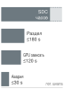
Задержка обнаружения растёт от секунд (падение процесса) до часов (тихое повреждение данных).
Для остальной части кластера мёртвый ранг и ранг, занятый сбросом на диск многогигабайтного шарда контрольной точки, выглядят одинаково молчащими. Поэтому каждый детектор отказов должен балансировать две дорогие ошибки: слишком короткие таймауты убивают здоровых рабочих при временных сетевых или дисковых задержках, а слишком длинные оставляют тысячи соседних GPU простаивать на барьере коллективной операции. Мониторинг сердцебиений — первый слой обнаружения, и обычно именно он задаёт нижнюю границу
Для интервала сердцебиений
Первый член выжидает один полный интервал сердцебиений, потому что здоровый рабочий мог отправить своё последнее биение только что, а второй добавляет запас для сердцебиений, задержанных сетью дольше обычного. Здесь
Таймауты коллективных операций обеспечивают второй слой обнаружения. Во время синхронного обучения коллективная операция, требуемая для следующего шага, остаётся незавершённой зависимостью на критическом пути, если нужный ранг исчезает. AllReduce требует вклада каждого ранга, прежде чем выдать редуцированный результат; ход выполнения и поведение при отказах других коллективных операций зависят от самой операции и среды исполнения. Таймауты транспорта и групп процессов ограничивают, как долго задание ждёт, прежде чем объявить операцию отказавшей и перейти к восстановлению. NCCL16 предоставляет для этой цели настраиваемые параметры таймаутов транспорта и RAS (надёжность, доступность, обслуживаемость), а фреймворки более высокого уровня могут накладывать таймауты операций групп процессов. Эти настройки часто выставляют консервативно, чтобы не рушить задания в периоды законно медленной связи, что, к сожалению, удлиняет
Проверки здоровья оркестратора контейнеров дают третий слой. Kubernetes, система оркестрации контейнеров, предлагает liveness-пробы (проверяют, что процесс ещё отвечает и продвигается) и readiness-пробы (проверяют, что процесс готов обрабатывать запросы). Slurm — батч-планировщик, распространённый на обучающих кластерах HPC-типа, — вместо этого запускает периодическую программу проверки здоровья узла, способную вывести из работы узел, чьи GPU, связи или файловые системы не проходят тесты. Оба механизма работают независимо от обучающего фреймворка и ловят отказы, которые прикладные сердцебиения могут пропустить; liveness-проба, проверяющая продвижение вперёд, а не просто существование процесса, способна поймать процесс, который жив, но находится в дедлоке.
Обнаружение всплесков функции потерь вскрывает аномалию, но не её причину. Рисунок 14 противопоставляет идеализированный здоровый тренд потерь взрыву градиента, преждевременному плато и расходимости на NaN. Реальное стохастическое обучение не обязано монотонно убывать, поэтому одно лишь временное повышение не доказывает отказ, а нефинитные значения не обязаны обрушивать процесс. Тихое аппаратное повреждение может дать резкий всплеск потерь или нормы градиента, но то же самое может вызвать неудачный батч, нестабильность оптимизатора, дефект порядка данных или рассогласование распределённого состояния. Поэтому устойчивые системы делают паузу перед фиксацией подозрительного обновления, сохраняют входные данные и свидетельства рабочего и повторяют шаг на заведомо исправном оборудовании. Система выводит оборудование из работы лишь после того, как эти свидетельства укажут на устройство; иначе она чинит данные, оптимизатор или путь синхронизации, породившие тот же симптом.
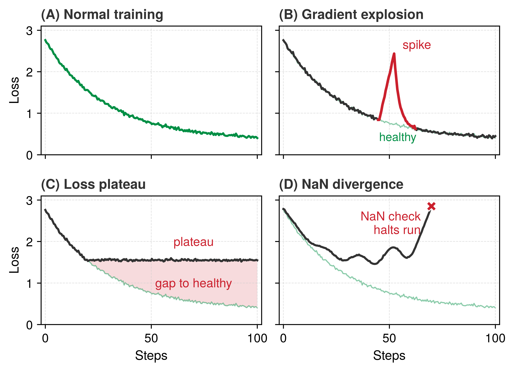
Таблица 7 сопоставляет каждую сигнатуру — плюс молчащее зависание, которое кривая потерь показать не может, — с вероятной причиной и первым ответным действием. Это сопоставление направляет расследование, не трактуя кривую как единственный диагноз, а следующий за ним эксплуатационный вопрос — сколько на самом деле занимает обнаружение, когда эти слои мониторинга взаимодействуют.
| Сигнатура | Вероятная интерпретация | Ответное действие при восстановлении |
|---|---|---|
| Всплеск с последующим восстановлением | Временная аномалия входа или численная аномалия; сама кривая не указывает причину | Сохранить свидетельства подозрительного батча и шага, затем повторить, прежде чем решать, продолжать ли. |
| Всплеск с последующим плато | Нестабильность оптимизатора, повреждённое состояние или стойкий дефект пути данных | Приостановить, повторить с заведомо исправной контрольной точки и сравнить свидетельства входа, оптимизатора и рабочих. |
| Постепенная расходимость | Дрейф данных, численная нестабильность, повреждённое состояние или рассинхронизация рабочих | Сравнить телеметрию и свидетельства оценок по рангам; изолировать оборудование лишь когда повтор укажет на него. |
| Зависание без ошибки | Дедлок коллективной операции или упавший рабочий, блокирующий синхронизацию | Использовать обнаружение по таймауту и перезапустить или воссоздать группу рабочих. |
Системный взгляд 7.5: Реалистичные задержки обнаружения отказов
Обнаружение отказа включает больше, чем настроенный таймаут сердцебиений, если политика требует верификации перед восстановлением. Диапазоны в Таблица 8 иллюстрируют сценарии планирования, а не универсальные гарантии обнаружения. Агрессивные таймауты рискуют ложными срабатываниями (убийством здоровых, но медленных рабочих), консервативные — задерживают обнаружение реального отказа. Многоступенчатая политика может использовать первый таймаут для запуска расследования, а порог попозже — для запуска восстановления. Её фактическая задержка должна измеряться при той рабочей нагрузке и условиях отказа, под которые она задумана.
| Тип отказа | Диапазон планирования | Почему |
|---|---|---|
| Падение процесса | 5–30 секунд | Таймаут сердцебиений + повторы верификации |
| Зависание GPU | 30–120 секунд | Нужно отличить от законно медленного ядра |
| Сетевой раздел | 60–180 секунд | Нужно отличить от временной перегрузки |
| Тихое повреждение данных | Минуты — часы | Требуется статистическое обнаружение аномалий |
7.9.2 Процедуры восстановления
После классификации отказа путь восстановления холодным перезапуском выполняет согласованную последовательность действий для восстановления согласованности. Альтернатива с тёплым перезапуском, разбираемая далее, сохраняет уцелевшие процессы, когда их состоянию можно доверять.
- Завершение задания: Всем уцелевшим рабочим рассылается
SIGTERM. Этот путь холодного перезапуска демонтирует затронутую обучающую группу, чтобы ни один уцелевший не продолжал использовать старое членство или частично завершённое состояние коллективных операций. - Возврат ресурсов: Планировщик помечает отказавший узел как «draining», чтобы предотвратить немедленное перепланирование, и запрашивает замену из пула запасных.
- Перезапуск задания: Запускаются новые контейнеры (из кэша, если возможно), а обучаемый бинарник переинициализируется на всех узлах.
- Загрузка контрольной точки: Каждый рабочий читает предназначенное ему состояние из распределённой файловой системы. Когда меняются членство или параллелизм, восстановление перемапливает сохранённые шарды на новые разбиения.
- Синхронизация состояния: Ранги выполняют рукопожатие, чтобы установить новый коммуникатор — объект, именующий множество участников (например, через
ncclCommInitRank), — и рабочие проверяют, что все находятся на одном шаге обучения. - Возобновление обучения: Загрузчик данных восстанавливает записанную позицию и состояние сэмплирования, а цикл обучения возобновляется с шага контрольной точки. Одного индекса батча достаточно лишь тогда, когда он воссоздаёт тот же логический поток входных данных.
Системы автоматического восстановления выполняют эти шаги без участия человека. Современные обучающие фреймворки интегрируются с менеджерами кластера, чтобы автоматизировать часть этой последовательности. DeepSpeed документирует процедуры сохранения/загрузки контрольных точек модели и оптимизатора ZeRO, которые предоставляют долговременное состояние, необходимое после сбоя (DeepSpeed Developers 2026 г.a). torchrun в PyTorch описывает поведение при сбоях и изменениях состава через свой механизм rendezvous,17 — протокол с координатором, по которому уцелевшие рабочие процессы после перезапуска согласовывают состав группы и ранги (PyTorch Contributors 2026 г.c, 2026 г.b).
Валидация восстановления проверяет, согласуется ли поведение восстановленного задания с его записанным состоянием. Формы параметров, типы данных и идентичности шардов должны совпадать с манифестом. Затем короткая повторная проигрывательная или валидационная нагрузка проверяет значение функции потерь и статистику градиентов в пределах ожидаемых числовых допусков; разные батчи не обязаны воспроизводить последнее досбойное значение потерь. Немедленная расходимость — это повод исследовать контрольную точку, состояние данных и конфигурацию выполнения, а не доказательство порчи снимка. Откат к более ранней провалидированной генерации уместен, когда новейшему состоянию нельзя доверять.
Восстановление также должно предотвращать возвращение владения от отказавшей эпохи. Координатор выдаёт каждой инкарнации рабочей группы монотонно возрастающий номер эпохи (счётчик состава, не связанный с эпохой обучения по датасету) и связывает состав с арендой — правом владения, которое истекает, если держатель его не продлевает. Каждая запись, изменяющая состояние, несёт эту эпоху в качестве fencing-токена. Прежде чем замещающий процесс начнёт запись, протокол восстановления продвигает принудительно применяемую эпоху на каждом защищённом ресурсе, что отвергает записи с более старым токеном (Рисунок 15). Тогда старый рабочий процесс не может опубликовать контрольную точку или обновить прогресс задания, даже если он продолжит работу после долгой паузы; механизм rendezvous тоже допускает только текущий состав группы. Одной аренды недостаточно, потому что истечение срока меняет решение координатора о владении, но не способность старого рабочего процесса достучаться до хранилища. Fencing принудительно исполняет это решение на границе ресурса (Kleppmann 2016 г.).
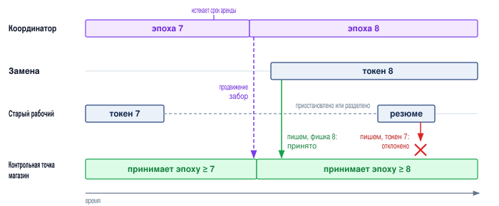
Шаги восстановления, такие как чтение контрольной точки или попытка rendezvous, часто повторяются при сбое, и неаккуратный повтор может продублировать побочный эффект или перегрузить службу, которая сама восстанавливается. Операцию можно повторять автоматически, только если она идемпотентна — то есть её повторение даёт тот же эффект, что и однократное выполнение, — либо она несёт стабильный идентификатор операции, позволяющий получателю дедуплицировать повторные эффекты. Каждая попытка наследует абсолютный дедлайн вызывающей стороны, а не получает новый таймаут, а система ограничивает число попыток бюджетом повторов, разделяемым в пределах дерева запроса или восстановления. Экспоненциальная задержка (backoff), умножающая время ожидания на фиксированный коэффициент после каждой неудачной попытки, и джиттер, рандомизирующий каждое ожидание, распределяют попытки во времени, но не предотвращают перегрузку, если каждый слой повторяет независимо. Поэтому бюджет должен принадлежать одному слою-владельцу повторов; исчерпанный бюджет возвращает отказ или вызывает деградацию вместо усиления исходного инцидента (Beyer и др. 2016 г.; Nygard 2007 г.).
Инженерный расчёт 7.3: Бюджет времени восстановления
Задача: Рассмотрим обучение модели с 175B параметров на 1,024 GPUs. Размер контрольной точки составляет примерно 2.45 TB (веса BF16, главные веса FP32 и моменты Adam при 14 байт на параметр). Оцените стоимость одного события сбоя.
Подготовка: Бюджет восстановления
: 60 s (консервативный таймаут heartbeat с проверочными повторами). : 3 min (время в очереди планировщика + запуск контейнера + накладные расходы на импорт Python + инициализация NCCL). : 24.5 s (это агрегированное чтение полной контрольной точки 2.45 TB из разделяемого хранилища с агрегированной скоростью 100 GB/s). При шардированном чтении с локальных NVMe на скорости 5 GB/s шард одного GPU объёмом 2.4 GB загрузился бы менее чем за секунду. Однако GPU одного узла разделяют его диск, поэтому доля узла объёмом 19.1 GB занимает около 3.8 s. Такое локальное чтение доступно только на узлах, переживших сбой вместе со своей локальной копией. : 2 min (JIT-компиляция ядер, наполнение буферов конвейера данных, восстановление TCP-соединений).
Итого:
Влияние: Для этого пути восстановления
Оптимизация времени восстановления становится важнее по мере роста кластеров. Базовый вариант «только GPU» из Таблица 1 сравнивает два размера на общей основе и занижает оба числа сбоев. На этой основе кластер из 1,024 GPU имеет MTBF 49 hours и переживает около 0.49 failures/day, теряя около 3 minutes в день — скромные 0.2 percent накладных расходов. Однако кластер из 10,000 GPU имеет MTBF «только GPU» 5 hours и переживает около 4.8 failures/day, теряя около 31 minutes в день (2.1 percent накладных расходов). Это эквивалентно потере примерно 5,127 GPU-hours каждый день (дневные потерянные минуты, умноженные на все 10,000 GPU). Сбои приходят пропорционально числу GPU, поэтому когда каждый из них требует одинакового времени восстановления, накладные расходы на восстановление растут линейно с размером кластера. Оптимизированные слагаемые контрольных точек растут лишь как квадратный корень размера кластера (Глава 7.8.1), поэтому при фиксированном времени восстановления восстановление со временем становится бо́льшей потерей.
7.9.3 Тёплый перезапуск против холодного
Описанная в Глава 7.9.2 процедура восстановления — это холодный перезапуск: каждый процесс в затронутой группе задания завершается, и группа заново загружает состояние из валидной контрольной точки. Это упрощает восстановление, устраняя зависимость от уцелевшего состояния в памяти, но может отбросить полезное состояние. После отказа одного GPU в референсном задании на 1,024 GPU каждый уцелевший рабочий процесс может хранить повторно используемые значения; однако прерванное обновление или тихое повреждение данных может сделать часть этих значений небезопасными для сохранения.
Тёплый перезапуск сохраняет состояние уцелевших рабочих процессов. При отказе ранга уцелевшие ранги обнаруживают отказ, но не завершаются. Они переходят в состояние ожидания, сохраняя загруженные веса модели и состояния оптимизатора в памяти GPU. Планировщик заменяет только отказавший узел. Новый узел присоединяется, получает текущее состояние своего шарда от одноранговой реплики, если она существует, иначе загружает его из последней контрольной точки, и коммуникация перестраивается. Замещающий процесс и уцелевшие должны согласовать один и тот же зафиксированный шаг обучения до возобновления. Шард, восстановленный из более старой контрольной точки, нельзя объединять с шардами уцелевших, продвинувшимися дальше; среда исполнения должна восстановить недостающее текущее состояние или откатить группу к общей точке восстановления. Обучение возобновляется только после этой проверки согласованности.
Когда недостающее состояние можно восстановить на текущем шаге уцелевших, тёплый перезапуск избавляет от перезагрузки всего кластера и повторного прогрева. В примере с 1,024 GPUs этот быстрый путь позволяет не перечитывать полную контрольную точку 2.45 TB через разделяемое хранилище, чьё
Расплатой является сложность программного обеспечения. Тёплые перезапуски с сохранением уцелевших требуют специализированной поддержки на уровне приложения и среды исполнения для динамических изменений состава группы без утечек памяти CUDA, повреждения разделяемого состояния или взаимоблокировок при перестройке коммуникации. Распространённые обучающие фреймворки перезапускают рабочую группу или перезагружают контрольную точку, а не сохраняют уцелевших (Глава 7.10.1.2). Развёртывание, реализующее быстрый путь тёплого перезапуска, всё равно нуждается в холодном перезапуске как страховке. Диапазон холодного перезапуска в Таблица 9 охватывает вычисленный выше бюджет 6.4 min. Диапазон тёплого перезапуска — это плановый диапазон для быстрого пути, применимого только когда текущее состояние замещающего процесса можно восстановить и когда удаётся избежать перезагрузки и прогрева всего кластера; его фактическая длительность зависит от того, как быстро замещающий процесс получит своё состояние и перестроится коммуникация.
| Аспект | Холодный перезапуск | Тёплый перезапуск |
|---|---|---|
| Время восстановления | 4–10 минут (полная перезагрузка) | 30–90 секунд (перезагрузка одного узла) |
| Гарантия состояния | Чистая: всё состояние из контрольной точки | Предполагает валидность уцелевшего состояния |
| Реализация | Простая: убить всех, перезагрузить всех | Сложная: динамическое управление составом |
| Сбой при восстановлении | Повторить холодный перезапуск | Откат к холодному перезапуску |
| Лучше всего для | Коррелированных сбоев, событий SDC | Отказов одного узла, ошибок GPU |
7.9.4 Конвейер автоматизации восстановления
В масштабе 10 000+ GPU сбои происходят по несколько раз в день, поэтому операторы не могут вмешиваться вручную в каждый инцидент. Восстановление должно быть автономным контуром управления, ведомым управляющей плоскостью кластера. Опубликованные отчёты больших обучающих парков описывают многоэтапную автоматизацию, которая классифицирует сбои и выбирает минимально достаточное устранение (Dubey и др. 2024 г.; Kokolis и др. 2025 г.; Zu и др. 2024 г.).
Конвейер работает в четырёх упорядоченных этапах:
- Демон мониторинга здоровья: Непрерывно опрашивает телеметрию GPU (счётчики ошибок ECC, температуру, скорость вентиляторов, статус NVLink) наряду с метриками приложения вроде значения функции потерь и пропускной способности шагов, часто из sidecar-контейнера — вспомогательного процесса, развёрнутого рядом с обучающим контейнером.
- Классификатор сбоев: Определяет, означает ли сигнал фатальную ошибку (например, ошибку NVIDIA Xid 48: двухбитовая ошибка ECC), переходный ступор (например, временную перегрузку сети) или деградацию производительности (например, троттлинг из-за нагрева).
- Селектор действий: Выбирает самый дешёвый ответ, согласованный с затронутым состоянием и коммуникационной группой. Зависание процесса на одном ранге обычно требует перезапуска всей коммуникационной группы, а не одного контейнера, потому что каждый уцелевший ранг всё ещё держит коммуникацию, включающую зависший ранг. Подтверждённая аппаратная неисправность требует высвобождения узла и выделения замены из резервного пула, что медленнее и расходует резервную ёмкость. Разделение сети может оправдать ограниченное ожидание, сохраняющее состояние в памяти, но если ожидание истекает, замещающий процесс должен оградить прежнее владение до приёма новых записей.
- Этап валидации: Запускает записанный «канареечный батч» или валидационную нагрузку в пределах ожидаемых числовых допусков. Неожиданное поведение потерь или градиентов запускает исследование восстановленного состояния и конфигурации выполнения, с откатом к более раннему провалидированному снимку, когда новому состоянию нельзя доверять.
Эта автоматизация выводит цикл «страница — диагностика — починка» человеком из пути восстановления для распространённых типов сбоев, что сокращает среднее время до восстановления. Этап классификации наиболее важен. Трактовать каждый сбой как холодный перезапуск — значит тратить вычисления на переходные проблемы, а считать аппаратный отказ переходным — позволить продолжить повреждённые вычисления. Предобучающий запуск Llama 3 показывает, что такой конвейер даёт в масштабе парка.
Практический случай 7.2: Обучение, прерывавшееся отказом каждые несколько часов (2024)
Контекст: Meta сообщает об обучении Llama 3 405B на 16,384 GPU H100 в течение 54-дневного снимка предобучения (Dubey и др. 2024 г.).
Механизм: В этом снимке было зафиксировано 419 непредвиденных прерываний — примерно одно каждые 3.1 hours, — с корневыми причинами, показанными на Рисунок 2.
Влияние: Тем не менее Meta сообщила о более чем 90 percent эффективного времени обучения, измеряемого как полезное время обучения, делённое на прошедшее время. Существенное ручное вмешательство потребовалось лишь трижды.
Решение: Meta сократила время запуска задач и записи контрольных точек и разработала средства автоматизированной диагностики и восстановления. Трассировки коммуникаций помогали обнаружить зависшие коллективные операции и медленных воркеров перед возобновлением полезной работы.
Урок для систем: В масштабе парка надёжность — свойство системы восстановления, а не оборудования. Эффективное время обучения оставалось высоким потому, что почти каждое прерывание обрабатывала автоматика, а не операторы.
7.9.5 Страгглеры против fail-stop-отказов
Не всякое решение о восстановлении начинается с упавшего процесса. Когда один GPU в синхронной задаче замедляется, не умирая, каждый здоровый сосед всё равно ждёт у барьера AllReduce, и конвейеру восстановления приходится решать, является ли медленный ранг временным страгглером или начинающимся отказом (перспектива 7.6).
Системный взгляд 7.6: Отстающий процесс или отказ
Страгглер — медленный ранг синхронного шага (Модели синхронизации) — ограничивает пропускную способность каждого ждущего его соседа, так что один узел, работающий на 10 процентов медленнее, может стоить тысячам узлов 10 процентов их производительности. Отказоустойчивость должна решить, что означает это замедление. Страгглер всё ещё может выдавать корректные результаты, поэтому само по себе замедление не доказывает ни неверных значений, ни отказавшего процесса, а его причиной часто является системный джиттер — фоновые процессы ОС, перегрузка сети или троттлинг из-за нагрева, — а не плохое оборудование. Решение состоит в выборе между смягчением, которое сохраняет работу и устраняет замедление, и восстановлением, которое считает ранг отказавшим и платит за перезапуск.
В упрощённой модели страгглера без перекрытия самый медленный ранг задаёт время шага всего кластера, поскольку AllReduce не может завершиться, пока каждый участник не передаст свои градиенты:
Многие страгглеры — это серые отказы, беззвучные деградации из таксономии отказов, увиденные изнутри синхронной задачи, и ни одна из их распространённых причин не порождает явной ошибки. Троттлинг из-за нагрева снижает тактовую частоту, деградирующие кабели интерконнекта увеличивают задержку передачи, фоновые процессы ОС (очистка памяти, ротация журналов) расходуют циклы CPU, а загрузка данных из перегруженного сетевого хранилища вносит переменные задержки I/O. Медленный воркер может продолжать укладываться в таймаут живости, снижая пропускную способность обучения, или замедлиться настолько, что сработает тот же таймаут, что и у отказавшего воркера.
Поэтому наряду с проверками живости нужны измерения прогресса. Распространённый детектор записывает время шага каждого ранга — или время, за которое его вклад достигает каждой коллективной операции, — и сравнивает его с медианой по рангам, так что ранг, устойчиво отстающий от соседей, выделяется, даже продолжая отвечать на каждое обращение сердца. Ранг помечается, когда его время превышает медиану на заданный отступ в течение нескольких последовательных шагов. Тесный отступ или короткое окно быстрее обнаруживает деградирующее устройство, но также помечает ранги, замедлившиеся из-за переходного джиттера; широкий отступ дольше оставляет всю задачу работать в темпе медленного ранга.
Политика таймаутов определяет, где система проводит границу между смягчением (перераспределением работы или заменой медленного узла) и восстановлением (перезапуском с контрольной точки). Агрессивные таймауты трактуют переходных страгглеров как fail-stop-отказы, вызывая лишние перезапуски задач, которые тратят больше вычислений, чем само замедление, тогда как консервативные таймауты оставляют тысячи здоровых GPU ожидающими деградировавший узел, который уже не ускорится. Медленный ранг, остающийся в задаче, снижает goodput программы — отношение идеального времени выполнения шага к фактическому — на каждом шаге, тогда как его замена расходует goodput времени выполнения на прерывание. Учёт goodput из Границы учёта фиксирует эти потери раздельно, поэтому решение о замене взвешивает одну потерю против другой.
Стратегии смягчения страгглеров меняют либо распределение работы, либо исполнительные ресурсы. Динамическая балансировка нагрузки переносит работу с медленных воркеров, сохраняя намеченное обновление, тогда как ограниченная устарелость допускает запаздывающие градиенты в рамках алгоритма, который их терпит; её стоимость в терминах сходимости зависит от рабочей нагрузки и границы задержки. Резервные воркеры реплицируют выбранные задачи и принимают один результат на каждое логическое обращение, обменивая лишние циклы GPU на более короткое ожидание без двойного учёта градиентов. На границе инфраструктуры проактивная замена использует аппаратную телеметрию — например, растущие рабочие температуры или растущие счётчики исправимых ошибок ECC, — чтобы выявлять подозрительные компоненты и заменять их, когда ожидаемая выгода превышает затраты на миграцию и восстановление. Простой расчёт стоимости показывает, почему тяжёлого страгглера часто дешевле заменить, чем терпеть.
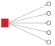
Один страгглер задерживает каждого здорового соседа у барьера.
Инженерный расчёт 7.4: Цена отстающего процесса
Рассмотрим кластер из 1,024 GPU, где обычная итерация обучения занимает 1 секунду. Один GPU переходит в состояние троттлинга из-за нагрева, сбрасывая частоту до 50 percent скорости, и теперь выполняет свои вычисления за 2 секунд.
Поскольку AllReduce не может завершиться, пока каждый ранг не передаст свои градиенты, остальные 1,023 здоровых GPU простаивают в ожидании страгглера.
Влияние:
- Обычное время шага: 1 секунда
- Время шага страгглера: 2 секунд
- Эффективная скорость кластера: 1 шаг/2с = 0.5 шагов/с
Одно отказавшее устройство (0.1 percent оборудования) снизило пропускную способность всего кластера на 50 процентов. При стоимости $2/GPU-hour этот страгглер впустую расходует $1,024/hour простаивающих вычислений.
Системное наблюдение: Замена оправдана лишь тогда, когда ожидаемая экономия времени превышает затраты на восстановление и повторное воспроизведение. Предположим, что замедление, как ожидается, сохранится на протяжении следующих
Замена медленного узла с сохранением исходного числа GPU требует доступных ресурсов. Модель избыточности
Контрольная точка 7.5: Настройка обнаружения отказов и восстановления
Проверьте своё понимание того, как задержка обнаружения и стратегия восстановления обмениваются друг на друга:
7.10 Упругое восстановление
Предположим, что задача обучения на 1,024 GPU теряет из-за аппаратного отказа узел из 8 GPU, но в кластере нет свободных запасных узлов. Политика восстановления фиксированного размера оставляет оставшиеся 1,016 GPU ожидать, пока не появится замещающая ёмкость или пока выделение не будет снято. Упругое восстановление позволяет задаче изменить размер и продолжить работу с меньшим объёмом вычислений, при условии, что её состояние и параллельное разбиение помещаются в меньшее выделение.
Определение 7.2: Эластичное обучение
Упругое обучение — это способность распределённой задачи обучения подстраивать число воркеров при изменениях членства, возможно, через координированный перезапуск рабочей группы.
- Значимость: Она превращает постоянную потерю ёмкости во временное прерывание с последующим снижением пропускной способности. Чисто параллельная по данным задача на 1,024 GPU, потеряв 8 GPU, сохраняет 99.2 percent числа устройств и может возобновиться, если оставшиеся устройства способны вместить состояние. Задачи с тензорным и конвейерным параллелизмом дополнительно требуют выполнимого разбиения и совместимых размеров групп; сохранённое число устройств не гарантирует той же доли пропускной способности. Политика восстановления должна либо сохранять эффективный размер батча за счёт дополнительного накопления, либо проверять изменения оптимизации, вызванные меньшим батчем.
- Отличие: В отличие от восстановления перезапуском с контрольной точки фиксированного размера, которое ждёт замещающего оборудования, чтобы восстановить исходное выделение, упругое восстановление может перезапуститься или возобновиться с иным числом воркеров. Цикл оптимизации может приостановиться, пока заново устанавливаются членство, ранги и состояние.
- Типичная ошибка: Распространённое заблуждение — что упругость «автоматична». На деле восстановление требует координированной адаптации: обучающий фреймворк, загрузчик данных и оркестратор должны синхронизировать своё состояние, чтобы при изменении размера ни один образец данных не был потерян или учтён дважды.
Небольшой пример показывает жизненный цикл в трёх фазах (Рисунок 16). Исполнение начинается со сбалансированного кольца AllReduce из четырёх узлов на полной пропускной способности. Когда узел 3 выбывает, выжившие останавливаются у барьера рандеву и загружают последнюю согласованную контрольную точку. Затем группа сжимается в кольцо из трёх узлов, где каждый воркер берёт на треть больший сегмент данных, возобновляя продуктивное обучение на 75 процентах пропускной способности, если темп каждого воркера не изменился.
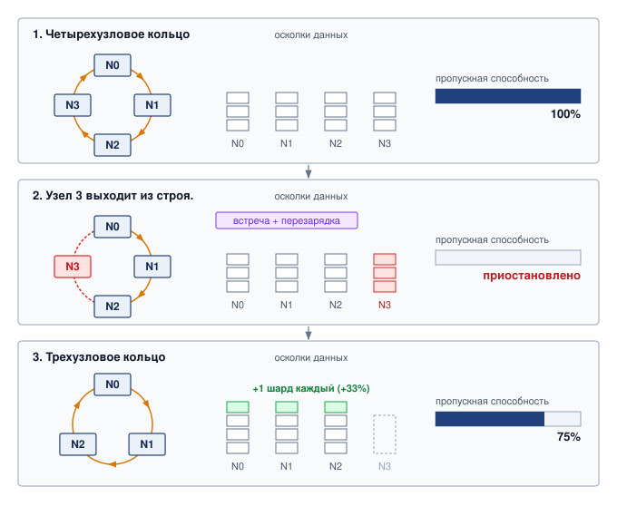
7.10.1 Механизмы адаптации при восстановлении
Отказ узла сужает активное кольцо вместо того, чтобы простаивать до появления заменяющего оборудования, поэтому упругое восстановление превращает завершение задачи в ограниченную по объёму подстройку ёмкости. Когда отказ уменьшает число воркеров, путь восстановления должен адаптировать несколько компонентов обучения, прежде чем возобновится полезная работа. Каждая адаптация отвечает за конкретное требование согласованности, нарушение которого исказило бы модель или привело бы к напрасным вычислениям.
Прежде всего корректируется размер батча. При меньшем числе уцелевших воркеров либо каждый воркер должен обрабатывать больше примеров, чтобы сохранить глобальный батч, либо глобальный батч должен уменьшиться, что, в свою очередь, может потребовать перекалибровки скорости обучения ради сохранения сходимости. Изменение глобального батча меняет не только объём работы на шаг, но и режим оптимизации. Линейное и квадратично-корневое правила скорости обучения из Правила масштабирования скорости обучения — кандидаты-политики для задачи с изменённым размером, причём при фиксированном размере микробатча и числе накоплений на воркер отношение числа воркеров подставляется вместо отношения батчей (Goyal и др. 2017 г.). При уменьшении квадратично-корневое правило снижает скорость обучения меньше, чем линейное масштабирование; сама эта арифметика не устанавливает, какая политика стабильнее, и любая из них требует валидации для конкретного оптимизатора, расписания и рабочей нагрузки. Сохранение глобального батча позволяет вообще не вносить этого изменения в режим оптимизации.
Градиентное накопление даёт такую альтернативу. Каждый уцелевший воркер обрабатывает дополнительные микробатчи перед синхронизацией, чтобы сохранить исходный эффективный размер батча. Если число воркеров упало вдвое, удвоение числа шагов накопления сохраняет количество примеров на обновление и позволяет удержать прежнее расписание скорости обучения. Каждый воркер выполняет вдвое больше вычислений микробатчей на обновление, хотя прирост реального времени определяется коммуникацией и её перекрытием. Равный размер батча не означает побитово идентичных обновлений или одинакового поведения операций, зависящих от статистик микробатчей.
Перераспределение загрузчика данных должно согласовываться с восстановленным шагом обучения и новым составом группы. При потере воркеров загрузчик переназначает оставшийся логический входной поток так, чтобы само изменение размера ни пропускало примеры, ни считало их дважды в одном обновлении. Повтор работы, отброшенной при откате к контрольной точке, — ожидаемо; дублирование вкладов внутри возобновлённого потока — уже другая ошибка. Сохранённая позиция данных и состояние выборки позволяют различить эти случаи.
Переразбиение состояния добавляет сложности при шардированном параллелизме по модели (ZeRO/FSDP). Когда параметры и состояния оптимизатора размечены на шарды один раз по всей задаче без репликации, потеря воркера уничтожает единственную живую копию его шарда в памяти, поэтому задача должна перезагрузить полную долговечную генерацию контрольной точки, прежде чем заново распределять состояние по уменьшенному набору воркеров. Если же задача использует гибридное шардирование, реплицирующее каждый шард на две или более групп параллелизма по данным, уцелевшая реплицированная группа всё ещё держит живую копию в памяти GPU и может передать недостающий шард по сети без чтения из хранилища. Только после восстановления недостающих значений от реплики-пира или из долговечной контрольной точки среда исполнения может перераспределить владение шардами между уцелевшими воркерами. Одной смены владельца шарда недостаточно для восстановления недостающих значений.
Спотовые прерываемые инстансы как класс отказов
Аппаратные отказы — не единственное событие, удаляющее воркеров из работающей задачи. Облачные провайдеры часто оценивают прерываемые («спотовые») инстансы ниже постоянной ёмкости, с оговоркой, что их могут отозвать почти без предупреждения. Когда воркеры исчезают, восстановление сталкивается с теми же проблемами отсутствующего состояния и состава группы, что и при аппаратном отказе. Предварительное уведомление, если оно доступно, позволяет до ухода скоординированно сохранить состояние или слить воркеры и тем самым меняет возможности восстановления.
Задачи и фиксированного размера, и упругие могут восстановиться после прерывания с помощью контрольных точек, но задача фиксированного размера должна вернуть требуемое выделение ресурсов перед рестартом. Упругая задача может вместо этого возобновить работу в уменьшенном масштабе, если ёмкости достаточно и инварианты обучения пережили изменение размера. Восстановление всё равно оплачивает обнаружение, восстановление состояния и пересборку группы; повторные отзыв ёмкости могут свести на нет кажущуюся ценовую выгоду. При референсных ценах парка — $0.70/GPU-hour за спотовую ёмкость против $2/GPU-hour за постоянную — экономия может перевесить потерянную работу и задержки на изменение размера; полную модель затрат «спот против постоянной ёмкости» развивает Спотовые инстансы и прерываемые виртуальные машины.
Опорный пример 7.2: Архетип C (федеративное обучение MobileNet): выпадение участников как норма
Архетип C (федеративный MobileNet) делает уход воркеров ожидаемой частью обучения. Обучение идёт раундами, в каждом из которых координатор рассылает текущую модель набору клиентов и объединяет возвращённые ими обновления. Клиенты телефонного класса обучаются во время зарядки, простоя и наличия сети, поэтому исчезновение клиента посреди раунда — обычное событие, а не отказ, требующий починки. Координатор поэтому выбирает больше клиентов, чем нужно раунду, и закрывает раунд по дедлайну. Раунд переносит уходы, пока приходит достаточно совместимых обновлений; иначе координатор его отбрасывает (McMahan и др. 2017 г.; Bonawitz и др. 2019 г.). Проверки версий модели не допускают в текущую агрегацию обновлений, вычисленных против заменённой модели, — федеративный аналог отсечения устаревшей эпохи, — а веса агрегирования учитывают примеры, внесённые при выбранном алгоритме обучения. Проверки версий и взвешивание не устраняют смещение участия. Восстановление должно сохранить состояние координатора, необходимое для продолжения этого алгоритма, — модель, позицию в раундах и любое устойчивое состояние оптимизатора или выборки, — а не считать, что одних весов достаточно. Планирование клиентов развивает проектирование раундов, включая дедлайны, требования к участию и смещение, возникающее, когда одни типы устройств отчитываются реже других.
Поддержка упругого восстановления во фреймворках
Откуда бы ни приходила потеря воркеров — из аппаратного отказа или спотового прерывания, — фреймворки обучения различаются тем, сколько инвариантов изменения размера (состав группы, владение шардами, перераспределение загрузчика данных, корректировка размера батча или скорости обучения) они выполняют автоматически после отказа. PyTorch Elastic (TorchElastic) использует агентов для наблюдения за воркерами и механизм рандеву для установления состава группы (PyTorch Contributors 2026 г.c, 2026 г.b). При отказе или изменении состава он останавливает всех уцелевших воркеров, формирует новую группу и запускает воркеров с новыми назначениями RANK и WORLD_SIZE. Он берёт на себя переназначение рангов и пересборку коммуникационных групп, оставляя размер батча, скорость обучения и семантику контрольных точек пользовательскому коду. DeepSpeed (Rasley и др. 2020 г.) предоставляет строительные блоки распределённого обучения на базе ZeRO и контрольных точек для больших моделей (DeepSpeed Developers 2026 г.a). Восстановление перезагружается с последней долговечной контрольной точки, а Universal Checkpointing решает вопрос переносимости при некоторых изменениях параллелизма и топологии (DeepSpeed Developers 2026 г.b), хотя упругое поведение по-прежнему зависит от окружающего лаунчера и менеджера ресурсов.
Ray Train, построенный на модели акторов Ray, предоставляет путь восстановления через контрольные точки: после отказа или прерывания он перезапускает группу воркеров и продолжает с последней доступной контрольной точки. Ответственность за сохранение и загрузку достаточного состояния остаётся на функции обучения (Ray Project 2026 г.). Horovod Elastic аналогично строится на системе параллелизма по данным Horovod (Sergeev и Balso 2018 г.) с упругим API состояния для добавления и удаления воркеров (Horovod Developers 2026 г.). API сбрасывает ранги и восстанавливает коммуникацию, оставляя чувствительные к сходимости решения — политику скорости обучения или размера батча — обучающему скрипту. Во всех четырёх фреймворках перезапуск группы воркеров в основном автоматизирован, тогда как переразбиение состояния остаётся ручным, зависящим от развёртывания или привязанным к перезагрузке контрольной точки (Таблица 10).
| Фреймворк | Обнаружение отказа | Автоматическое восстановление | Переразбиение состояния | Кластерная интеграция |
|---|---|---|---|---|
| PyTorch Elastic | Тайм-аут рандеву | Да | Вручную | Kubernetes |
| DeepSpeed | Внешнее | На основе контрольных точек | Зависит от развёртывания | Внешние планировщики |
| Ray Train | Надзор за акторами | Путь повторных попыток через контрольные точки | Перезагрузка контрольной точки | Ray Cluster |
| Horovod Elastic | Heartbeat драйвера | Да | Вручную | Slurm, Kubernetes |
7.10.2 Отказоустойчивость обучения для конкретных типов моделей
Восстановление одних лишь весов модели не гарантирует корректного рестарта. LLM, перезагрузившая веса, но потерявшая курсор учебной программы — запись о том, где обучение находится в запланированном порядке документов, — обучится на одних и тех же документах дважды, а непрерывный рекомендатор, откативший таблицы эмбеддингов, будет обслуживать устаревшие предпочтения пользователей. Поэтому механизмы контрольных точек и восстановления из Глава 7.8 и Глава 7.9 должны адаптироваться к стоимости рабочих нагрузок, оценённой в Глава 7.7.1. Вопрос проектирования не в том, как часто делать контрольные точки, а в том, какая переменная состояния сделала бы рестарт математически или экономически неверным. Для рекомендательных задач инкрементальные контрольные точки, многоуровневые контрольные точки и версионирование эмбеддингов могут снизить стоимость хранения свежего состояния. Инкрементальное хранение всё ещё позволяет восстановить точную генерацию из базовой и требуемых дельт; согласие на устаревшее или приближённое состояние — отдельное решение. Для каждой рабочей нагрузки состояние под риском определяет, что должна содержать её контрольная точка (Таблица 11).
| Рабочая нагрузка | Состояние под риском | Последствия для контрольной точки |
|---|---|---|
| Обучение LLM | Состояние оптимизатора, позиция в учебной программе, позиция в документах, расписание длинного контекста | Сохранить состояние оптимизатора FP32 там, где важна точность, писать шарды с ZeRO/FSDP, вынести сериализацию с критического пути и включить позицию в расписании данных, чтобы траектория оптимизации возобновилась корректно. |
| Рекомендации | Свежесть эмбеддингов, версия хранилища признаков | Сохранять свежее состояние с помощью инкрементальных и многоуровневых контрольных точек и версионирования эмбеддингов; согласие на устаревшее или приближённое состояние требует отдельного контракта восстановления. |
| Зрение | Зерна аугментаций, порядок перемешивания, статистики batch-нормализации, расписание прогрессивного изменения размера | Зафиксировать стохастическое и нормализационное состояние, управляющее входным потоком; одних весов недостаточно, чтобы воспроизвести траекторию обучения. |
| Научное МО | Состояние симулятора, граница поиска, исследованные конфигурации, зерна валидации | Считать модель, симулятор, процесс поиска и случайное состояние единицей согласованности, чтобы восстановление не дублировало исследование и не обесценивало сравнения. |
Общий шаблон: корректность восстановления шире, чем восстановление весов. LLM могут перезагрузить веса, но продолжить с неверной позицией в учебной программе. Рекомендательные модели, обучающиеся непрерывно, могут перезагрузить плотные параметры, но обслуживать устаревшие эмбеддинги, так что отказ, потерявший недавние обновления, несёт издержку свежести в дополнение к издержке повтора. Бюджет восстановления должен отражать измеренную чувствительность рабочей нагрузки к устаревшему состоянию.18 У моделей зрения контрольные точки меньше — около 1.2 GB для примера с ViT-Large, — что позволяет чаще сохранять на том же пути хранения. Однако воспроизведение их входного потока требует конфигурации аугментаций, состояния генератора случайных чисел и позиции в данных, а не только начального зерна перемешивания. Расписание прогрессивного изменения размера, повышающее разрешение изображений по ходу обучения, тоже должно возобновиться с той же стадии. Научные модели могут перезагрузить нейронную сеть, потеряв состояние симулятора, придававшее данным смысл, а итеративный поиск должен также помнить, какие конфигурации он уже оценил, когда эти результаты выбирают его следующих кандидатов. Во всех случаях граница контрольной точки должна включать все предшествующие решения, влияющие на будущую работу, где бы это состояние ни находилось. Когда же обученная модель развёрнута для пользователей, операционный расчёт смещается от защиты недель батч-вычислений к защите миллисекунд задержки в реальном времени.
7.11 Отказоустойчивость обслуживания
Когда пользователи просят голосового ассистента выключить свет, они не готовы к пятиминутной паузе, пока сервер инференса перезагружается из контрольной точки. Обслуживание ставит другую задачу: пользователи ожидают отклика на уровне миллисекунд, даже если бэкенд-GPU падают. Бюджет C³ для отказоустойчивости меняется соответственно. Обучение платит за координацию временем синхронизации, чтобы отказ не стёр выполненные вычисления, а обслуживание платит постоянным резервным вычислением и координацией маршрутизации, чтобы отказ не разорвал контракт по задержке.
Реплика обслуживания — запускаемая копия модели, способная принимать запросы; слой маршрутизации выбирает реплику, а проверка готовности определяет, может ли она успешно обслуживать. Реплики могут разделять внешние хранилища состояния или держать состояние запросов в памяти ускорителя, так что замена вычислений не обязательно заменяет состояние, нужное запросу. Отказоустойчивость обслуживания спрашивает, как эти механизмы ведут себя, когда реплики, GPU или хранилища состояния отказывают при действующих бюджетах задержки.
7.11.1 Stateless vs. stateful serving
Первое решение при обслуживании моделей — где хранится состояние запроса, потому что от этого выбора зависит, будет ли переключение на резерв повторной попыткой или задачей восстановления состояния. Worker без сохранения состояния не хранит обязательного состояния отдельной сессии между запросами. Он получает необходимый контекст из самого запроса или из внешнего хранилища состояния, поэтому тот же запрос может обработать любой другой готовый worker. Поскольку историю сессии несёт внешнее хранилище, приложение с состоянием всё равно может использовать workers без состояния, хотя это хранилище остаётся зависимостью с точки зрения надёжности.
Паттерн без состояния возникает, когда сам вход несёт весь контекст: классификатор изображений обрабатывает одно изображение, детектор объектов — один кадр, текстовый классификатор с одиночным ходом — один фрагмент текста, а сервис эмбеддингов отображает один вход в один вектор. Тогда отказоустойчивость может сосредоточиться на здоровье реплик и маршрутизации запросов. Резервные реплики обрабатывают запросы параллельно, балансировка нагрузки направляет трафик только на здоровые реплики, проверки здоровья выводят отказавшие реплики из ротации, а автоматическое замещение запускает новую реплику, когда ёмкость падает. При отказе реплики находящиеся в обработке запросы к ней можно повторить на другой реплике, поскольку никакого влияющего на качество состояния сессии не потеряно.
Обслуживание без состояния даёт более простую архитектуру, когда приложение это позволяет. Однако многие ML-приложения по своей природе требуют состояния между запросами. Возьмём чат-бота. Система вопрос-ответ с одиночным ходом может работать без состояния, обрабатывая каждый вопрос независимо. Разговорный ассистент должен где-то хранить свою историю, но модельный worker может остаться без состояния, если каждый запрос несёт полную историю или читает её из надёжного внешнего хранилища. Локальное для worker состояние создаёт более сильную зависимость, когда последующие запросы опираются на информацию, доступную только на выбранной реплике.
Обслуживание с состоянием появляется, когда последующая работа зависит от сохранённого состояния сессии. Для трансформера кэш ключей и значений (KV cache) хранит ключи и значения внимания, вычисленные для предыдущих токенов, чтобы worker мог повторно использовать их при генерации последующих токенов. Этот кэш — производное состояние. Если авторитетная история токенов и совместимая версия модели остаются доступными, замена может вычислить его заново, повторно обработав эту историю. Потеря самой истории — уже другой отказ, потому что восстановление кэша теряет необходимый вход. Потоковое распознавание речи аналогично хранит контекст предыдущего аудио, рекомендательные сессии накапливают пользовательский контекст, а интерактивное редактирование хранит состояние документа между правками.
Последствие с точки зрения отказоустойчивости: отказ теряет влияющее на качество состояние, а не только обслуживающую ёмкость. Потеря KV-кэша требует повторной обработки предыдущих ходов, потеря контекста сессии заставляет пользователей повторять предыдущие взаимодействия, а потеря накопленного пользовательского состояния деградирует качество, когда контекст недоступен. Выбор смягчения следует за размером, скоростью обновления и ценностью этого состояния для качества. Привязка сессии направляет сессию на одну и ту же реплику, периодическое сохранение состояния в контрольные точки, репликация состояния поддерживает резервную копию, а деградация с сохранением работоспособности (graceful degradation) держит сервис доступным с пониженным качеством, если состояние не удаётся восстановить. Таблица 12 противопоставляет то, как эта граница состояния меняет маршрутизацию, влияние отказа и сложность восстановления. Независимо от того, с состоянием архитектура или без, поддержание доступности при живых ограничениях на задержку требует развёртывания резервной ёмкости.
↪ Как KV-кэш растёт с длиной последовательности и параллелизмом, пока не заполнит память ускорителя, разбирается в Стена KV-кэша и ёмкость памяти.
| Аспект | Обслуживание без состояния | Обслуживание с состоянием |
|---|---|---|
| Маршрутизация запросов | Любая реплика | Привязанная к сессии реплика |
| Влияние отказа | Повтор на другой реплике | Потенциальная потеря состояния |
| Сложность восстановления | Перезапуск и загрузка весов | Перезагрузка состояния + восстановление контекста |
| Подход к резервированию | Активные реплики (active-active) | Реплицированное состояние + резерв |
| Работа после обнаружения | Маршрутизация или повтор на готовом worker | Восстановить необходимое состояние, затем маршрутизировать или повторить |
7.11.2 Резервирование и репликация
Резервирование покупает доступность только тогда, когда размещение реплик и запасная ёмкость соответствуют защищаемому домену отказа. Превращение нескольких копий модели в бесперебойный сервис требует подобрать число реплик под целевую доступность, выбрать способ разделения живого трафика между здоровыми и резервными workers и разместить реплики по независимым доменам отказа.
Расчёты доступности
Резервирование при обслуживании — это параллельная композиция из Глава 7.2.1, применённая к взаимозаменяемым репликам, где вместо вероятности выживания фигурирует доступность. Для одиночной реплики с доступностью
где
Для одиночной реплики доступность 99 percent соответствует 3.65 days простоя в год. Добавление независимых реплик быстро меняет хвост распределения отказов. Две реплики дают 99.99 percent, или 52.6 minutes простоя в год, а три реплики — 99.9999 percent, или 31.5 seconds. Арифметика предполагает независимость отказов и достаточную ёмкость на любой уцелевшей реплике для выполнения целевых показателей сервиса; общий электропитание, общая сеть и общие программные ошибки снижают фактическую доступность ниже этих теоретических значений.
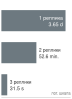
Резервирование превращает дни простоя в секунды.
Стратегии репликации
Уравнение доступности говорит, насколько может помочь резервирование; топология репликации определяет, как это резервирование ведёт себя при штатной работе и внезапной потере оборудования. Две фундаментальные схемы делают противоположные ставки (Рисунок 17). Репликация active-active равномерно делит входящий трафик между живыми репликами, по одной трети каждой при трёх репликах, что загружает каждое устройство, но требует запаса пропускной способности, чтобы выжившие могли поглотить долю отказавшей реплики. Репликация active-passive направляет весь трафик на назначенную основную реплику и держит заранее прогретый резерв, чьи веса остаются загруженными в памяти ускорителя, что делает переключение на резерв быстрым ценой устройства, которое ничего не обслуживает, пока основная реплика здорова.
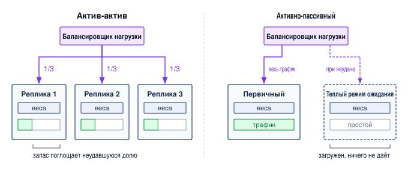
Географическая репликация расширяет тот же выбор на регионы. Она защищает от отказов дата-центров или региональных сетей, но запросы, направленные в дальние регионы, платят дополнительной задержкой, и проблема запаса active-active возникает заново уже на региональном масштабе. Когда регион отказывает, выжившие регионы должны поглотить его трафик и, для сервисов с состоянием, восстановить его сессии, поэтому каждый регион либо несёт запасную ёмкость, рассчитанную на самый крупный регион, который он может поглотить, либо принимает деградацию задержки на время переключения. Трафик возвращается в восстановленный регион постепенно, потому что его кэши и прогретые реплики начинают пустыми, а резкий возврат перегрузил бы его и снова вызвал то же переключение. Многоуровневые схемы совмещают несколько политик репликации одновременно: краевые кэши реплицируются ради задержки, региональные обслуживающие кластеры — ради доступности, а глобальный основной узел или слой координации сохраняет согласованность и свежесть.
Размещение реплик и домены отказа
Эффективное резервирование требует размещать реплики в независимых доменах отказа. Разные машины переносят отказ отдельных машин; разные стойки — отказы на уровне стойки из-за проблем с электропитанием или top-of-rack коммутатором; разные зоны доступности — отдельно запитанные и подключённые к сети секции одного региона — отказы секций дата-центра; а разные регионы — отказы целых дата-центров. Уровень независимости должен соответствовать требованию доступности и ограничению по стоимости. Региональная репликация дорога, потому что дублирует вычислительную и сетевую ёмкость, но необходима, когда региональный отказ не должен становиться видимым пользователю простоем. Однако само по себе размещение лишь создаёт возможность восстановления; обслуживающей системе всё ещё нужен контур управления, который замечает отказ, убирает затронутую реплику из трафика и сохраняет достаточно состояния, чтобы видимый пользователю сервис продолжал работать с ограниченной деградацией.
7.11.3 Механизмы переключения на резерв
Когда реплика отказывает, трафик должен быть перенаправлен на здоровые реплики, и скорость и надёжность этого перенаправления определяют, какую долю отказа увидят пользователи. Механизм раскладывается на два вопроса: как система решает, что реплика больше не может обслуживать, и что происходит с уже привязанными к ней сессиями с состоянием.
Проверки здоровья
Проверки здоровья решают, когда трафик должен переместиться. Пробы liveness и readiness из Глава 7.9.1 применимы к обслуживающей реплике, где readiness означает, что её веса загружены, ускоритель инициализирован, прогрев завершён, а зависимости, такие как хранилища признаков (сервисы, поставляющие заранее вычисленные входные признаки модели), достижимы. Обслуживание добавляет инференс-проверку, которая прогоняет известный вход через модель и сравнивает выход с ожидаемым результатом, ловя тихий отказ, при котором процесс здоров, но его ответы неверны. Действует по этим сигналам балансировщик нагрузки.
↪ Что каждая проба должна проверять на реплике с ускорителем — от liveness процесса до инференс-проверки с фиксированным промптом — разбирается в Проверка состояния здоровья и аварийное переключение.
Параметры проб задают бюджет переключения на резерв. При интервале проверок 5 s, таймауте 2 s и пороге отказов в 3 пропущенных пробах отказавшая реплика покидает ротацию через 12–17 s после сбоя, в зависимости от того, куда между пробами пришлось падение. Каждый запрос, направленный ей в этом окне, отказывает или ждёт клиентского повтора. Переключение на уровне реплик в этом масштабе времени защищает поэтому последующий трафик, а не запросы, попавшие на момент сбоя; запрос с бюджетом в миллисекунды всё ещё может уложиться в него только через повтор на другой готовой реплике в пределах оставшегося дедлайна. Укорочение интервала или снижение порога ускоряет переключение, но повышает долю ложных срабатываний, помечая здоровые реплики как нездоровые во время кратковременных заторов и изымая ёмкость именно тогда, когда нагрузка высока. Порог успеха в 2 чистых проб применяет ту же осторожность наоборот, удерживая восстановленную реплику вне ротации, пока она не докажет стабильность.
Привязка сессии и переключение с состоянием
Для обслуживания с состоянием привязка сессии (session affinity) направляет все запросы сессии на одну и ту же реплику. Балансировщики поддерживают отображение сессия-реплика через sticky sessions, реализуемые cookies, заголовками или хешированием IP. Привязка сохраняет локальность, но не поставляет запасную копию, когда реплика отказывает. Сохранение в контрольные точки периодически сохраняет состояние сессии, репликация копирует его на резерв, а внешние системы вроде Redis или Memcached выносят его за пределы модельного worker. Внешнее хранилище всё равно нуждается в собственном контракте доступности и долговечности. Принятие потери состояния оправдано только тогда, когда сервис может восстановить производное состояние из сохранённой истории или явно начать сессию с сокращённым контекстом. Какой вариант подходит рабочей нагрузке, зависит от размера состояния, частоты обновления и влияния потери состояния на качество, как резюмирует Таблица 13 по четырём распространённым подходам.
| Подход | Задержка восстановления | Гарантия состояния | Операционная сложность |
|---|---|---|---|
| Потеря состояния | Быстрая | Нет | Низкая |
| Контрольные точки | Средняя | Согласованный снапшот; более поздние обновления могут быть потеряны | Средняя |
| Синхронная репликация | Быстрая | Сильная | Высокая |
| Распределённое состояние | Быстрая | Настраиваемая | Средняя |
7.11.4 Отказоустойчивость обслуживания для конкретных моделей
Повторная попытка обработки неудавшегося запроса на классификацию изображения на другой реплике не теряет состояния сессии, тогда как потеря реплики, обслуживающей многоходовой диалог с LLM, отбрасывает гигабайты «живого» состояния внимания, а потеря хранилища признаков рекомендательной системы оставляет ранжировщик с устаревшими пользовательскими сигналами. Поэтому модельно-специфичные политики обслуживания отталкиваются от бюджета потери состояния: какое состояние можно восстановить в пределах лимита задержки, какое должно быть заранее реплицировано, а какое может временно деградировать без нарушения продуктового контракта. Каждый из трёх распространённых режимов обслуживания отвечает на этот бюджет по-своему, задавая одновременно свою политику отказоустойчивости и путь деградации (Таблица 14).
| Serving workload | State expensive to lose | Fault-tolerance policy | Degradation path |
|---|---|---|---|
| LLM conversation | KV cache, conversation context, prefix state | Реплицируйте ценное состояние сеанса или сохраняйте его контрольные точки; восстанавливайте его вычислением заново только тогда, когда позволяет бюджет задержки. | Rebuild from transcript, reuse cached prefixes, or ask for retry. |
| Recommendation | Fresh user features, item features, embeddings | Реплицируйте хранилища признаков, кэшируйте часто используемые признаки и отслеживайте свежесть данных как показатель надёжности. | Serve stale or default features with measured quality loss. |
| Vision service | Preprocessing state, device health, edge input | Повторяйте запросы без состояния на исправных репликах и запрещайте исполнение при сбоях предобработки или неисправности ускорителя. | Используйте меньшую локальную модель, откладывайте прогноз или возвращайте низкую оценку уверенности. |
Кэш KV19 может быть значительным (гигабайты для длинных контекстов во всех слоях внимания). Его потеря требует перевычисления состояния внимания по сохранённой истории токенов, что может занимать от секунд до минут; ранее выданный текст генерировать заново не нужно. Во время выдачи ответа в полёте восстановление должно также знать, какие выходные токены клиент уже получил, чтобы повторная попытка не дублировала и не подменяла часть ответа.
Повтор запроса на классификацию изображения не теряет ничего; потерянный диалог теряет 43 GB кэша KV.
Решения при обслуживании LLM — это компромисс между задержкой восстановления кэша KV и накладными расходами по памяти и хранилищу. Простейшая стратегия — принять стоимость регенерации, восстанавливая кэш KV из истории диалога после сбоя, но это может превратить длинный диалог в перезапуск длительностью в секунды или минуты. Контрольная точка (checkpoint) кэша KV периодически сохраняет живое состояние и ограничивает объём регенерации, а репликация кэша KV держит резервную копию для быстрого переключения на резерв (failover) ценой дополнительной памяти. Кэширование префиксов, также предлагаемое как кэширование промптов, переиспользует состояние для общих системных промптов и разделяемого контекста. Совместимый кэшированный префикс может сократить объём работы по восстановлению, если он пережил сбой и остаётся доступен замещающему воркеру. Одно лишь переиспользование кэша не даёт гарантии переключения на резерв и не сохраняет специфичную для сессии историю.
Обслуживание рекомендаций защищает свежесть, а не непрерывность диалога. Рекомендации зависят от признаков пользователей и объектов из хранилищ признаков, поэтому недоступность хранилища признаков может либо ухудшить качество ранжирования, либо полностью заблокировать рекомендации. Решение при обслуживании — это бюджет устаревания. Реплицированные хранилища признаков держат свежие признаки доступными между зонами, локальные кэши покрывают «горячие» признаки, откат к устаревшим признакам принимает измеримую потерю качества, а признаки по умолчанию позволяют сервису вернуть менее качественный результат, когда поиск признака не удался. Признаки реального времени, такие как недавние действия пользователя, делают мониторинг свежести частью отказоустойчивости: конвейер, продолжающий отдавать старые признаки, работоспособен операционно, но семантически неверен. Большие таблицы эмбеддингов могут также находиться за выделенными сервисами эмбеддингов, которым нужен собственный план репликации и переключения на резерв.
Обслуживание компьютерного зрения обычно ближе к «бестактовому» (stateless) концу спектра, поскольку каждое изображение или кадр можно повторить на другой реплике. Эта простота меняет то, где должны находиться проверки. Троттлинг из-за нагрева (thermal throttling) угрожает задержке, а неисправленные ошибки памяти — числовой корректности; политика работоспособности должна различать эти последствия. Проверки предобработки также должны не допускать, чтобы некорректное изменение размера, обрезка, преобразование цвета или нормализация давали внешне правдоподобные предсказания. Когда проверка предобработки или работоспособности ускорителя не проходит, сервис «закрывается наглухо» (fail closed), удерживая предсказание вместо возврата тому, чему нельзя доверять. На периферии (edge) разрыв соединения может потребовать проверенной уменьшенной локальной модели, отложения несрочной работы или отказа от предсказания, когда доступные вычисления не могут выполнить предсказательный контракт.
Когда избыточность не может сохранить полный сервис, оставшийся выбор зависит от контракта приложения. Проверенный ответ с сокращёнными возможностями может сохранить полезную доступность; если такой ответ недопустим, система должна отклонить или отложить работу. Корректная (graceful) деградация делает допустимое сокращение явным ещё до наступления отказа.
7.12 Корректная деградация
Во время крупного регионального отказа сети интернет-магазин внезапно теряет доступ к своему тяжёлому рекомендательному кластеру на GPU. Вместо показа пользователям пустых страниц или аварийного завершения сайт мгновенно переключается на выдачу заранее вычисленных универсальных популярных товаров. Механизмы отказоустойчивости обслуживания, развитые в Глава 7.11, нацелены на поддержание полного сервиса, но корректная деградация определяет, что происходит, когда эти защиты исчерпаны.
Определение 7.3: Плавная деградация
Корректная деградация — стратегия отказоустойчивости, при которой система отвечает на исчерпание ресурсов или отказ компонента намеренным снижением качества сервиса (откатом к меньшей модели, выдачей кэшированных результатов или частичных выходов), а не полным отказом, сохраняя измеримую доступность при сокращённых возможностях.
- Значимость: Корректная деградация превращает риск полного отказа в контролируемое снижение качества. Рекомендательная система при отказе GPU может откатиться от большого ранжировщика к модели коллаборативной фильтрации, сохраняя доступность запросов с потерей качества, которую нужно измерить для этой рабочей нагрузки. Инженерный расчёт учитывает и обслуженные запросы, и полезность, потерянную за время отката.
- Отличие: В отличие от полного отказа системы (когда сервис возвращает ошибки на все запросы), корректная деградация обеспечивает управляемый переход по заранее определённой иерархии возможностей, где каждый уровень отката имеет известные характеристики точности, задержки и ресурсов, позволяющие системе продолжать удовлетворять SLO при сниженном качестве.
- Типичная ошибка: Распространённое заблуждение — что деградация в хорошо спроектированных системах происходит автоматически. Корректная деградация требует явной предварительной инженерии. Резервные модели должны быть заранее загружены или предвычислены, логика переключения должна обнаруживать условие отказа и запускать переход без участия человека, а каждый уровень деградации должен быть проверен на удовлетворение своего сниженного SLO до того, как он понадобится в продакшене.
7.12.1 Измерения деградации
План деградации должен называть, какое свойство сервиса будет принесено в жертву, ещё до начала инцидента. Основные рычаги в Таблица 15 образуют прединцидентный чек-лист проектирования, а не подсказку для мозгового штурма в момент отказа. Каждое приносимое в жертву свойство нуждается в измеренном бюджете качества, условии активации и пути восстановления до наступления отказа.
| Dimension | What the system sacrifices | Typical fallback |
|---|---|---|
| Quality | Model accuracy or ranking quality | Используйте более простую модель, например резервную модель коллаборативной фильтрации для многобашенной рекомендательной системы. |
| Latency | Response speed | Объединяйте больше запросов в один пакет, чтобы сохранить пропускную способность и качество модели при высокой нагрузке. |
| Coverage | Result completeness | Return top-10 search results instead of top-100. |
| Freshness | Recency of computed results | Возвращайте кэшированные или устаревшие кандидаты, например рекомендации новостей часовой давности во время отказа. |
| Feature completeness | Input richness | Используйте признаки содержимого, когда история пользователя или контекст реального времени недоступны. |
Эти измерения не взаимозаменяемы. Поисковый продукт может пожертвовать полнотой, возвращая меньше результатов, сохраняя свежесть. Рекомендательная система может пожертвовать свежестью, отдавая кэшированных кандидатов, сохраняя задержку. Интерактивный ассистент может пожертвовать качеством, используя меньшую модель, сохраняя сессию живой. Правильный откат, следовательно, специфичен для рабочей нагрузки. Он следует тому свойству, чья временная потеря меньше всего вредит приложению и чей путь восстановления можно проверить до инцидента.
7.12.2 Стратегии корректной деградации
Измерения из Таблица 15 становятся операционными только тогда, когда сервис связывает каждое приносимое в жертву свойство с конкретным резервным механизмом. Лестница стратегий начинается с отката модели, когда основной путь инференса слишком дорог или недоступен. Затем она переходит к откату признаков, когда ухудшается качество входных данных, и, наконец, к сбросу нагрузки (load shedding), когда спрос превышает ёмкость и система должна в первую очередь сохранить самые ценные запросы.
Откат модели
Откат модели превращает качество в явный рычаг доступности, поддерживая несколько версий модели с разными требованиями к ресурсам. Основная модель даёт полную функциональность по наивысшей цене в ресурсах, вторичная модель сокращает функциональность и потребность в ресурсах, третичная модель сохраняет минимальную функциональность, а статический откат отдаёт заранее вычисленные значения по умолчанию вовсе без инференса. Когда основной путь недоступен или перегружен, политика спускается ровно настолько, насколько требует давление на ресурсы, и возвращается вверх после восстановления здоровья основного пути.
В каскаде классификации изображений основной путь может запускать модель ViT-Large с 307 миллионами параметров и точностью ImageNet top-1 88 percent. Под давлением он может откатиться к EfficientNet-B4 с 19 миллионами параметров и точностью 83 percent, а затем снова к MobileNet-V3-Large с 5.4 миллионами параметров и точностью 75 percent, когда доступна лишь минимально приемлемая классификация. Если даже этот путь не может удовлетворить SLO, сервис может вернуть кэшированные метки, грубую категорию или «классификация недоступна», а не блокировать запрос бесконечно. Чтобы такая лестница была реальной, а не декларативной, продакшен-система должна держать несколько моделей развёрнутыми, маршрутизировать запросы на соответствующий уровень, отслеживать частоту откатов и измерять влияние каждого уровня на качество.
Рекомендательные и ранжирующие системы используют тот же шаблон, когда сложная модель глубокого обучения откатывается к списку популярного top-n, линейному ранжировщику или кэшированному ответу при сбоях основного обслуживания. Сложные модели часто борются за последний этап роста точности, в то время как простые эвристики дают основную часть полезности, поэтому путь отката нужно отслеживать как первоклассный сигнал качества, а не считать безмолвным переключением на резерв. Иначе продукт выглядит здоровым, пока качество молча разменивается на доступность.
Откат признаков
Откат признаков управляет тем, сколько качества входных данных модель может потерять, прежде чем запрос должен быть заблокирован. Когда извлечение признаков не удаётся, проверенные популяционные значения по умолчанию или кэшированные значения могут подставляться вместо отсутствующих признаков пользователя или объекта. Рекомендательная система может использовать признаки объектов на уровне жанров для отсутствующих атрибутов объектов или последнее кэшированное значение сигнала реального времени. Модель должна быть обучена или оценена с этими семантиками отсутствующих признаков; средний эмбеддинг или вектор от другого энкодера не является автоматически совместимым входом. Приближённые признаки полезны только тогда, когда их представление и измеренное качество предсказания удовлетворяют контракту отката.
Ключевой шаг проектирования — приоритизация признаков по их измеренному вкладу в качество предсказания. В четырёхуровневой политике критические признаки блокируют запрос, важные используют значения по умолчанию, полезные — кэшированные значения, а необязательные можно опустить (Таблица 16). Диапазоны потери качества из таблицы — примерные бюджеты политики, а не переносимые свойства этих категорий признаков. Развёртывание требует измерений, показывающих, что каждый допустимый откат укладывается в свой бюджет. Когда одной деградации признаков недостаточно для поддержания стабильности системы при экстремальной нагрузке, инфраструктура обслуживания должна начать активно отбрасывать запросы.
| Tier | Example features | Missing action | Quality impact |
|---|---|---|---|
| Critical | User ID, Item ID | Block request | Cannot serve |
| Important | User history, Item attributes | Use defaults | 5–10% quality loss |
| Useful | Real-time context | Use cached | 2–5% quality loss |
| Optional | Secondary signals | Omit |
Сброс нагрузки
Сброс нагрузки защищает систему, принося в жертву отдельные запросы до того, как перегрузка распространится на каждый запрос. Случайный сброс — простейшая политика: отбрасывать долю входящих запросов и сохранять достаточно ёмкости для остальных. Его слабость в том, что все запросы считаются одинаково ценными. Сброс на основе приоритетов превращает деградацию качества обслуживания (QoS) в явную политику, обслуживая премиум-пользователей раньше бесплатных, приносящие доход запросы раньше аналитических, а интерактивный трафик раньше фоновой батч-работы. Система по-прежнему деградирует, но в соответствии с заранее объявленным сервисным контрактом, а не по тому, какая очередь случайно заполнится первой.
Управление допуском (admission control) применяет ту же идею в точках входа системы. Оно отклоняет запросы, которые превысили бы доступную ёмкость, вместо того чтобы принимать работу, которая ухудшит качество каждого уже обрабатываемого запроса. Предохранители (circuit breakers) расширяют ту же защиту на отдельные зависимости, быстро отказываясь (failing fast), когда реплика модели, хранилище признаков или вспомогательный сервис нездоровы, так что одна отказавшая зависимость не может исчерпать пулы соединений во всём парке. Автоматические выключатели и обратное давление разбирает их состояния и сигналы обратного давления, которые им сопутствуют.
Реализация плавной деградации
Реализация начинается с превращения лестницы деградации в контур управления. Процентили хвостовой задержки выявляют запаздывающие отклики, характерные для зависимостей частоты ошибок указывают на неудавшиеся вызовы, утилизация ресурсов обнаруживает давление, а растущие очереди свидетельствуют о рассогласовании между поступлением и завершением запросов. Эти сигналы задают условия входа и выхода для каждого уровня деградации. Триггер может оправдать сброс нагрузки до завершения диагностики, хотя сам по себе сигнал не устанавливает первопричину. Триггеры деградации определяют условия, активирующие деградацию; три распространённых триггера следят за хвостовой задержкой, частотой ошибок и состоянием хранилища признаков, и каждый активирует свой резервный механизм (Список 1).
# Monitor tail latency for user-facing impact
if p99_latency > threshold:
activate_model_fallback() # Switch to faster, simpler model
# Track error rates to detect downstream failures
if error_rate > threshold:
activate_circuit_breaker() # Fail fast, prevent cascade
# Feature store slowdowns degrade recommendation quality
if feature_store_latency > threshold:
activate_feature_fallback() # Use cached/default featuresДеградация должна нарастать постепенно по мере ухудшения условий, а не переключаться на одном «обрыве». Система может плавно повышать долю резервного пути по мере роста нагрузки, а затем требовать устойчивого улучшения, прежде чем трафик вернётся на более производительные пути. Гистерезис предотвращает колебания между основным и резервным режимами, когда сервис держится вблизи порога.
7.12.3 Мониторинг и оповещение о деградации
Поскольку плавная деградация обменивает качество на доступность, мониторинг должен делать этот обмен видимым, а не позволять системе выглядеть исправной, выдавая результаты пониженной точности. Таблица 17 превращает это требование в карту действий: доля резервных запросов показывает, как часто снижалось качество модели, доля запросов с признаками по умолчанию — потерю качества входных данных, частота сброшенных запросов — защиту ёмкости, а разрыв качества между основным и резервным путями — остаётся ли деградировавший путь приемлемым. Её пороги эскалации иллюстрируют одну из политик; допустимая продолжительность деградации и потеря качества конкретного сервиса должны определять развёрнутые пороги.
| Сигнал | Выявленный обмен качества | Правило эскалации | Вопрос после инцидента |
|---|---|---|---|
| Доля запросов к резервной модели | Возможности модели снижены ради сохранения обслуживания | Устойчивая активация дольше 5 минут становится предупреждением. | Сохранил ли резервный путь достаточную ценность для пользователя? |
| Доля запросов с признаками по умолчанию | Богатство входных данных снижено из-за отстающих зависимостей | Сильная деградация, затрагивающая более 50% запросов, становится критической. | Какая зависимость признаков нуждается в репликации или кэшировании? |
| Частота сброшенных запросов | Покрытие снижено для защиты сервиса | Любой рост после срабатывания предохранителя запускает исследование ёмкости. | Достаточно ли рано сработал контроль допуска, чтобы предотвратить каскад? |
| Разрыв качества основной/резервной модели | Качество продукта потеряно во время инцидента | Деградация дольше 1 часа эскалирует, даже когда метрики доступности выглядят здоровыми. | Остаётся ли резервный путь допустимым пользовательским опытом? |
После события постинцидентный анализ должен выявить первопричину, оценить эффективность резервных механизмов, измерить влияние на пользователей и бизнес, а также определить улучшения, предотвращающие повторение. Безопасная реализация этих резервных механизмов требует глубокой видимости состояния среды исполнения системы. Когда сложный рекомендательный конвейер начинает деградировать, операторы должны быстро определить, какой микросервис отказал, а эта диагностика опирается на распределённую отладку и наблюдаемость.
7.13 Распределённая отладка и наблюдаемость
В 2:00 ночи задержка флагманского генеративного API скачет с 200 ms до 5 секунд, но метрики CPU, памяти и сети выглядят совершенно нормальными. Нарушение задержки может оправдать немедленное смягчение по заранее определённой политике; для выбора адресного исправления требуется найти остановившуюся работу среди сотен микросервисов. Распределённая отладка и наблюдаемость дают диагностические возможности, необходимые для обнаружения этих невидимых узких мест.
7.13.1 Диагностические трудности в распределённых ML-системах
Когда всплеск задержки или зависший коллективный вызов появляется на одном запуске и исчезает на следующем, доказательства, необходимые для восстановления, раздроблены между таймингом, состоянием, масштабом и поведением модели. Недетерминизм проникает с нескольких сторон: вариации сетевого тайминга меняют порядок выполнения, различия планирования потоков меняют условия гонок, порядок выполнения GPU-ядер варьируется между запусками, а порядок операций с плавающей точкой меняет числовые результаты. Следовательно, ошибка, проявившаяся на одном выполнении, может не воспроизводиться на последующих запусках, порождая «гейзенбаги»20, которые, кажется, исчезают при наблюдении.
Частичные отказы превращают этот недетерминизм в проблему восстановления. Одиночная машина тоже может страдать от частичных отказов, но распределённость добавляет независимо движущихся исполнителей и каналы связи. Один компонент может остановиться, пока остальные продолжают работу, оставляя соседей в неведении — отказал он или стал недоступен. Масштаб затем исключает ручной осмотр как жизнеспособный метод отладки. При тысячах компонентов автоматизированные инструменты должны фильтровать обширные потоки телеметрии и выявлять те несколько сигналов, которые объясняют инцидент. ML-системы добавляют к той же диагностической задаче поведение модели: тихая деградация точности даёт неверные результаты без ошибок, числовые проблемы вроде NaN и бесконечности распространяются сквозь вычисления, зависящие от данных ошибки проявляются лишь на определённых входах, а обучение вызывает ожидаемые изменения поведения, которые могут напоминать ошибки. Изолировать неисправность по всем четырём источникам требует структурированной телеметрии, связывающей симптомы на уровне кластера с отдельными запросами и событиями.
7.13.2 Столпы наблюдаемости
Наблюдаемость поддерживает и немедленное смягчение, и расследование причины. Пусть рекомендательный сервис внезапно нарушает свой SLO по задержке, хотя реплики модели продолжают сообщать о здоровой утилизации GPU. Метрики устанавливают время и охват симптома, трассировки показывают, какой сегмент (span) какого сервиса расходует бюджет запроса, а логи записывают события внутри этого сервиса. Рисунок 18 связывает эти потоки с операционными решениями. Одиночный сигнал может оправдать действие, например сброс нагрузки при превышении очередью её бюджета. Объединение контекста запроса и трассировки с версиями модели, тегами развёртывания и временными окнами усиливает диагностику, когда одну и ту же причину симптома могут объяснять несколько причин. Согласованные доказательства сужают эти возможности; сами по себе они не доказывают физическую или программную причину.
↪ How metrics, logs, and traces become a fleet-wide observability architecture that routes evidence across many models and owners is developed in Архитектура наблюдаемости.
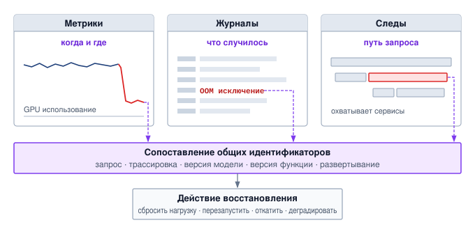
Метрики — первое доказательство, потому что они сжимают поведение парка во временные ряды, способные запустить действие. Поток метрик становится инфраструктурой отказоустойчивости только тогда, когда оповещение отображается в решение по восстановлению. Высокая задержка p99 может запустить сброс нагрузки, падающая частота попаданий в кэш — резервные признаки, а резкий сдвиг распределения предсказаний может заблокировать раскатку до того, как она повредит решениям, видимым пользователю.
Логи дают контекст событий, который метрика намеренно отбрасывает. Структурированное логирование использует форматы вроде JavaScript Object Notation (JSON) с согласованными полями, так что инструменты разбора инцидентов могут искать по сервису, запросу, версии модели, GPU, хранилищу признаков или идентификатору трассировки. Зарегистрированный таким образом отказ выделения памяти GPU фиксирует и локальный контекст отказа, и идентификаторы трассировки, необходимые, чтобы связать событие с распределёнными метриками и сегментами (Список 2).
{
"timestamp": "2024-01-15T10:23:45.123Z",
"level": "ERROR",
"service": "inference-server",
"trace_id": "abc123",
"span_id": "def456",
"message": "GPU memory allocation failed",
"gpu_id": 3,
"requested_bytes": 4294967296,
"available_bytes": 2147483648
}Для отказоустойчивости важное свойство логирования — согласованное сопоставление, а не конкретный бэкенд. Уровни логирования должны отображать инциденты в эскалацию согласованно между компонентами, но система восстановления больше зависит от того, могут ли операторы запрашивать события по тем же идентификаторам запроса, трассировки, версии модели, версии признаков и развёртывания, которые фигурируют в метриках и сегментах. Агрегация логов поэтому полезна тем, что сохраняет связь между локальным контекстом отказа и симптомами на уровне всего парка.
Трассировки показывают, где задержка или отказ распространялись между распределёнными компонентами. Трассировка — это сквозной путь запроса, сегмент (span) — одна операция внутри этого пути, а распространение контекста переносит идентичность трассировки через границы сервисов. Трассировка через ML-конвейер инференса показывает, как эти сегменты складываются:
Trace: user-request-12345
|-- Span: api-gateway (5 ms)
| `-- Span: auth-service (2 ms)
|-- Span: feature-service (15 ms)
| |-- Span: user-feature-lookup (8 ms)
| `-- Span: item-feature-lookup (12 ms)
|-- Span: inference-service (45 ms)
| |-- Span: preprocessing (3 ms)
| |-- Span: model-inference (40 ms)
| `-- Span: postprocessing (2 ms)
`-- Span: response-formatting (1 ms)
Total: 66 msСтандартные API распределённой трассировки, такие как OpenTelemetry, переносят этот контекст между сервисами, а бэкенд трассировки хранит и визуализирует трассировки. Устойчивое требование — не конкретный бэкенд, а достаточно сохранённого контекста, чтобы ответить, где живёт неисправность: в маршрутизации запросов, извлечении признаков, исполнении модели, постобработке или зависимости вне сервиса модели.
Одиночное обучающее задание использует те же три столпа с заданием, шагом и рангом в качестве общих идентификаторов. Его метрики — по-ранговые ряды вроде времени шага, нормы градиента и потери, так что отстающий или разошедшийся ранг выделяется на фоне соседей. Его логи — записи каждого ранга об ошибках, перезапусках и тайм-аутах коллективных вызовов. Его трассировка обучающего шага фиксирует, когда каждый ранг входил и выходил из каждого коллективного вызова, что показывает, на каком ранге ждали остальные; Meta использовала такие трассировки коммуникаций, чтобы находить зависшие коллективные вызовы и медленных исполнителей во время предобучения Llama 3 (война-история 7.2). Объединённые по этим идентификаторам, три потока позволяют операторам сопоставить симптом с первым действием по восстановлению в Таблица 7.
7.13.3 ML-специфичная отладка
Одних операционных сигналов недостаточно, когда процесс остаётся исправным, а его тензоры, входы или по-ранговые времена выполнения дрейфуют за пределы контракта модели. Поэтому ML-системы добавляют специализированную отладку на трёх поверхностях: числовое здоровье внутри вычислений, семантическая корректность по конвейеру данных и атрибуция отстающих (straggler) по распределённым стадиям.
Числовая отладка
Числовая отладка нацелена на отказы, где тензоры остаются корректными объектами, но содержат недопустимые значения. Обнаружение NaN21 выявляет значения, которые могут распространяться через последующую арифметику без падения процесса. Минимальная диагностика лишь помечает недопустимый вывод (Список 3), так что вызывающий код должен отреагировать на результат и блокировать его публикацию.
# Check tensor for NaN values
# (propagate from any corrupted computation)
if torch.isnan(output).any():
log.error("NaN detected in output", request_id=request_id)
# Caller must retain a replayable input reference and block or replace this outputВо время обучения по-шаговая статистика градиентов выявляет числовые неисправности до того, как они повредят весь запуск. Отслеживание глобальной нормы градиента улавливает внезапное взрывное или исчезающее поведение, построение гистограммы распределения градиентов помечает выбросы, а логирование послойных норм градиентов локализует, какой блок сети первым потерял устойчивость. Обучение в смешанной точности22 может привносить связанные числовые проблемы, когда узкий динамический диапазон взаимодействует с неустойчивыми обновлениями. Динамический масштабирующий коэффициент потерь уменьшает масштаб после обнаружения нечисловых (nonfinite) градиентов, что указывает на переполнение или другую недопустимую операцию, а не доказывает антипереполнение. Величины градиентов, пропущенные обновления и сравнение с воспроизведением в более высокой точности помогают отличить проблемы диапазона от других причин; обычные различия округления FP16 сами по себе не являются неисправностями.
Отладка и валидация данных
Ошибки данных проявляются как корректно выглядящие, но неверные входы, поэтому отладка должна проверять семантическую корректность на каждой границе конвейера в дополнение к числовой корректности. Валидация проверяет ожидаемый формат, форму, диапазоны значений, обязательные поля и кодировку до того, как данные достигнут модели, перехватывая искажённые примеры, пока отказ ещё локален во входном пути. Когда вход прошёл эти статические проверки, системе нужны данные о поведении во времени. Мониторы распределений отслеживают дрейф признаков, изменения доли null и выбросы по мере их появления, а инструментирование преобразований логирует промежуточные формы и статистику, чтобы команды могли сравнивать каждую стадию с заведомо корректными данными. Вместе эти сигналы отделяют повреждённый входной путь от числового отказа внутри модели.
↪ The validation gates and response policies that run these data checks continuously across a production fleet are developed in Операции контроля качества данных.
Обнаружение и анализ отстающих
Перспектива 7.6 рассматривала отстающего (straggler) как медленный обучающий ранг, задерживающий синхронный шаг. Та же идея расширяется на обслуживание, когда «соседом» становится любой компонент на пути запроса, поэтому там диагностика отстающих спрашивает, какая реплика или стадия сервиса достаточно медленна, чтобы стать узким местом, эквивалентным отказу. Медленная обслуживающая реплика задерживает направленные к ней запросы и может порождать повторные попытки под нагрузкой; её влияние на хвостовой процентиль сервиса зависит от её доли трафика и политики маршрутизации. Запрос, ожидающий несколько обязательных параллельных ветвей, наоборот, ограничен последним обязательным завершением. Инструментирование тайминга операций измеряет время каждой операции, обеспечивая атрибуцию задержки по стадиям конвейера. Оборачивание каждой операции в контекстный менеджер, выдающий по-сегментные метрики тайминга, делает производительность напрямую сопоставимой между репликами (Список 4).
# Wrap operations in timing context managers for latency attribution
with timer("feature_lookup"):
features = feature_store.lookup(
ids
) # Often the latency bottleneck
with timer("model_inference"):
predictions = model(features) # Host submission time for asynchronous GPU workПри асинхронном выполнении на GPU отрезок времени на хосте вокруг вызова model(features) в Список 4 измеряет лишь процессорное время, необходимое для постановки ядер в очередь потока GPU, а не завершённую работу устройства. Поскольку запуск ядер возвращает управление хосту до того, как GPU закончит их исполнять, наивный хост-таймер может показать быстрый интервал инференса даже на GPU с троттлингом из-за нагрева и ошибочно отнести задержку к той последующей стадии, которая первой синхронизирует поток или копирует предсказания обратно в память хоста. Для измерения фактического времени выполнения на GPU требуется записать аппаратные события в потоке до и после прямого прохода и прочитать их затраченное время после завершения потока. Затем сопоставимое компонентное время сравнивается между репликами с помощью перцентильного анализа. Задержка p50 показывает типичную производительность, p99 — хвостовую задержку, а сравнение p99 между репликами выявляет workers, чей медленный путь стал узким местом всего парка. Далее диагностика должна разделить причины, которые дают один и тот же симптом медленного worker: к ним относятся причины «серого отказа» из Глава 7.9.5 и перекос данных, при котором некоторые входные данные обрабатываются медленнее.
7.13.4 Шаблоны отказов при обслуживании
Отказы при обслуживании требуют отображения «симптом → действие» при куда более жёстких ограничениях на задержку, чем сигнатуры тренировочных потерь из Глава 7.9.1. Распространённые симптомы при обслуживании различаются и тем, что каждый из них выявляет, и тем, что система обслуживания должна сделать в первую очередь (Таблица 18). Каскадные отказы диагностировать труднее всего, потому что первопричину заслоняют порождённые ею вторичные тайм-ауты и повторные попытки, как прослеживает в метриках, логах и трассировках пример 7.1.
| Симптом | Вероятная интерпретация | Немедленная реакция |
|---|---|---|
| Всплески задержки | Конкуренция за ресурсы, сборка мусора, холодные кэши или перезагрузка модели | Проверить размещение и ёмкость; повторяющиеся всплески обычно означают, что проблема перестала быть переходящей. |
| Растущая доля ошибок | Отказ зависимости, изменение формата данных или ошибка модели | Разбираться немедленно, потому что ошибки складываются между зависимыми сервисами. |
| Незаметная деградация качества | Дрейф модели, деградация признаков или неисправность конвейера данных | Использовать мониторинг качества помимо стандартных операционных метрик. |
| Каскадный отказ | Исчерпание тайм-аутов, исчерпание ресурсов или распространение ошибок от одного отказавшего компонента | Сработать автоматами защиты (circuit breakers) и сохранить границы изоляции до того, как отказ распространится. |
Пример 7.1: Диагностика каскадного отказа
Сценарий: В рекомендательной системе внезапно возникают всплески задержки.
Диагностика: Три столпа наблюдаемости сужают путь отказа. Метрики выявляют симптом: в 14:32 задержка p99 подскочила с 45 мс до 800 мс, а доля ошибок выросла с 0,1 процента до 15 процентов. Трассировки локализуют задержку в интервале сервиса признаков, который потребляет 700 мс вместо обычных 12 мс, тогда как инференс модели остаётся на уровне 40 мс. Логи показывают повторяющиеся тайм-ауты соединения с кэшем пользовательских эмбеддингов в 14:31, после чего запросы обходят кэш и попадают напрямую в базу данных эмбеддингов. Эти свидетельства указывают на недоступность кэша и возросшую нагрузку ниже по потоку; пока они не отличают отказавший процесс кэша от сетевой проблемы или проблемы с ресурсами.
Системный урок: Недоступность кэша способна переложить достаточно нагрузки, чтобы перегрузить базу данных эмбеддингов. Автомат защиты и проверенный путь с эмбеддингом по умолчанию могут ограничить этот каскад, пока продолжается диагностика. Резервный путь также должен уважать бюджет качества и не отправлять отвергнутую нагрузку в другую насыщенную зависимость.
Наблюдаемость и диагностические карты помогают операторам изолировать отказ, когда он уже случился, но проверка того, что детекторы, автоматы защиты и пути восстановления действительно выдерживают бой, требует намеренно вызывать эти отказы до того, как с ними столкнётся продакшн-трафик.
7.14 Инструменты и фреймворки для внесения отказов
Внесённый отказ служит полезным свидетельством лишь тогда, когда он похож на тот производственный отказ, который система должна пережить. Многоузловой обучающий кластер, заявляющий устойчивость к сетевым разделам, должен иметь это соединение разорванным в тестовой среде, чтобы инженеры могли наблюдать, что делает слой оркестрации. Внесение отказов (fault injection) — инженерная дисциплина намеренного возмущения системы для эмпирической проверки того, что механизмы устойчивости работают до того, как продакшн-трафик обнаружит эту брешь. Инструменты внесения отказов для тензоров и ускорителей покрывают переключения битов, искажённые значения тензоров и отказы, ориентированные на ускорители (Chen и др. 2020 г.; Tsai и др. 2021 г.; Gräfe и др. 2023 г.), тогда как сетевые разделы, внесение задержки, завершение зависимостей и отказы API-ответов относятся к практике хаос-тестирования и тестирования распределённых систем (Basiri и др. 2016 г.).
Эксперимент по внесению отказов является свидетельством только на том уровне, на котором он вносит отказ. Его модель отказа называет исходное возмущение, например переходный сбой одного бита или постоянный многобитовый дефект, а его модель ошибки называет возникающее искажённое состояние. Поэтому результаты для переходных однобитовых отказов не устанавливают устойчивости к постоянным многобитовым дефектам (Sangchoolie и др. 2017 г.). Уровень внесения также решает, какую маскировку включает эксперимент. Аппаратура поглощает многие физические возмущения до того, как их увидит ПО: в неиспользуемых блоках, перезаписываемых значениях и мёртвых инструкциях (Mohanram и Touba 2003 г.; Ko 2021 г.). Внесение на аппаратном уровне — через эмуляцию на программируемых вентильных матрицах (FPGA) или облучение пучком частиц (Velazco и др. 2010 г.) — проходит сквозь эту маскировку, тогда как программные инструменты вроде PyTorchFI (Mahmoud и др. 2020 г.) возмущают веса, активации и градиенты напрямую. Они быстро покрывают множество состояний модели, но, пропуская маскировку, могут завышать частоту, с которой физический отказ искажает модель. Фреймворки вроде Fidelity (He и др. 2020 г.) сужают этот разрыв абстракций, отображая аппаратные отказы в порождаемые ими ошибки, видимые на уровне ПО. Мутация тензора всё же проверяет, как ПО реагирует на искажённое значение; сама по себе она не оценивает производственную уязвимость.
Для восстановления парка наиболее ценны эксперименты, вносящие отказы на том уровне, где принимаются решения о восстановлении. Уничтожение одного rank посреди коллективной операции или задержка его heartbeat сверх тайм-аута нагружает слои обнаружения из Глава 7.9.1. Отделение узла от сервиса rendezvous нагружает правила членства и fencing из Глава 7.9.2. Порча одного шара контрольной точки нагружает проверку манифеста из Глава 7.8.5.2. Каждый из этих экспериментов проверяет одну строку Таблица 4. Непрерывный запуск этих экспериментов в тестовой среде, а в контролируемой форме — и в продакшне, не даёт редко исполняемому коду восстановления деградировать между реальными инцидентами (Basiri и др. 2016 г.). Путь восстановления заслуживает доверия только для той модели отказа, против которой он проверялся, — потому следующие кейсы сообщают и об отказах, с которыми столкнулись производственные парки, и о механизмах, которые их поглотили.
7.15 Кейсы
Обучение языковой модели на 175 миллиардов параметров на 992 GPU в течение двух месяцев, поддержание маршрутизируемого среза суперкомпьютера на 4 096 чипов вопреки ежедневным аппаратным отказам и обслуживание низкозадержечных рекомендаций через десятки микросервисов — каждое из этих испытаний нагружает свой слой стека отказоустойчивости. Публичные операционные отчёты Meta, Google и Netflix показывают, как производственные парки сочетают обнаружение отказов, сохранение состояния, перестроение топологии и хаос-тестирование в масштабе. Их отчётные числа — операционные порядки величин, раскрывающие проектное давление на каждую систему, а не универсальные аппаратные константы.
7.15.1 Масштабное обучение LLM в Meta
За два месяца обучения Open Pre-trained Transformer (OPT-175B) на 992 GPU NVIDIA A100 инженерная команда Meta сообщила не менее чем о 35 ручных перезапусках и оценила 70 или более автоматических перезапусков, вызванных аппаратными отказами, включая ошибки памяти ECC, сетевые неисправности NCCL и InfiniBand и потерянные GPU (Zhang и др. 2022 г.). Наряду с этими перезапусками было циклически заменено более 100 хостов (Zhang и др. 2022 г.; Meta AI Research 2022 г.). Эти счётчики устанавливают многократные прерывания, но циклическая замена хостов и перезапуск заданий — разные события; их суммы не измеряют напрямую один общий MTBF. Числовая нестабильность создала отдельную задачу восстановления. Конструкция восстановления должна была сохранять прогресс, отличая отказавшие вычислительные ресурсы от подозрительного состояния оптимизатора.
Во время запуска OPT команда следила за прогрессом через проверки свежести обучающих логов. Публичный бортовой журнал фиксирует порог в 15 минут по времени изменения файлов, позже ослабленный до одного часа, как часть мониторинга перезапусков (Meta AI Research 2022 г.). Для зависания, не вызывавшего ошибки, этот порог вносил вклад в
Процедуры восстановления также должны были учитывать всплески потерь, связанные с числовой нестабильностью. В отличие от события fail-stop, этот симптом делал недавнее состояние модели подозрительным, не указывая на отказавшее устройство. Команда сочетала откат к более ранней контрольной точке с пониженной скоростью обучения, чтобы восстановиться после расходимости (Meta AI Research 2022 г.). В статье отдельно сообщается примерно о 147 TFLOP/s на A100 (около 47 percent плотного пика FP16) (Zhang и др. 2022 г.); лишь эта метрика скорости исполнения не устанавливает сквозную полезную пропускную способность после прерываний и повторного исполнения. Вечный урок — различие между путями восстановления. Отказавшее устройство требует замены и восстановления валидного состояния, тогда как числовая расходимость может требовать более старой контрольной точки и изменённой политики оптимизации. Сохранение истории контрольных точек делает второй путь возможным.
7.15.2 Устойчивость TPU-подов Google
Суперкомпьютер Google TPUv4 сочетает настраиваемую топологию с программным обеспечением восстановления. Под содержит 4,096 чипов, организованных как 64 кубов по 64 чипов, каждый из которых устроен как 3D-меш
War story 7.1 прослеживал механизм восстановления, в котором fabric OCS собирает здоровые кубы в срезы размером с задание, перераспределяя запасные кубы после машинных простоев и маршрутизируя в обход недоступных линков для поддерживаемых шаблонов простоя OCS. Опубликованное исследование добавляет ПО, которое исполняет этот цикл: компоненты вроде libtpunet и healthd для настройки топологии и мониторинга здоровья. Оно также даёт операционную статистику, показывающую, как часто цикл срабатывает. Доступность системы составляла 99,98 процента, при этом аппаратные простои затрагивали примерно 1 процент обучающих заданий (Zu и др. 2024 г.). Дневные частоты отказов: 0,08 процента машин TPU, 0,005 процента кабелей ICI и 0,04 процента блоков OCS. Малые дневные доли всё равно складываются через тысячи компонентов, так что управляющая плоскость поглощает постоянный поток событий перестроения, а не редкую чрезвычайную ситуацию. Архитектурный урок — сопоставлять каждую границу отказа с осуществимой механикой замены или маршрутизации.
7.15.3 Хаос-инженерия Netflix для зависимостей обслуживания
Пока устойчивость обучения сосредоточена на долгоживущих батч-заданиях, опубликованная работа Netflix по хаос-инженерии (Basiri и др. 2016 г.) даёт контраст со стороны обслуживания — и это производственное происхождение дисциплины внесения, которую Глава 7.14 применил к обучению. Предпосылка проста, но требовательна операционно. Поскольку в производственных системах множество взаимодействующих зависимостей, команды должны проверять стационарное поведение, намеренно внося отказы, вместо того чтобы ждать реальных инцидентов, которые покажут, работают ли резервные пути.
Для ML-обслуживания та же дисциплина применима к хранилищам признаков, зависимостям обслуживания моделей, кэшам и резервным путям. Конечная точка модели может быть здорова, пока сервис признаков медленный, устаревший или недоступный; если в системе нет проверенного резервного пути, локальная проблема зависимости может стать видимой пользователю задержкой или деградировавшими рекомендациями. Хаос-тесты делают эти допущения исполняемыми, внося задержку, завершая зависимости или форсируя резервные пути в контролируемых условиях.
Процедура восстановления для этих внесённых отказов строится вокруг иерархий резервных путей. Если основная модель глубокого обучения отказывает или превышает тайм-аут, система обслуживания может переключиться на более лёгкую модель, кэшированный ответ или простой дефолт по популярности. Системный урок: устойчивость в ML-обслуживании — не статическое свойство, а непрерывная практика активной проверки. Резервный путь, который никогда не проверяется, — это документация, а не отказоустойчивость.
Через эти производственные кейсы проходят три архитектурных паттерна. Во-первых, скорость обнаружения принадлежит бюджету восстановления. Порог свежести логов Meta и мониторы здоровья Google определяют, когда восстановление может начаться, тогда как хаос-эксперименты Netflix проверяют обнаружение и резервные пути для выбранных отказов зависимостей. Возраст контрольных точек и отставание репликации отдельно управляют восстанавливаемым состоянием. Во-вторых, атомарная единица отказа формирует архитектуру. Google сочетает замену кубов с отказоустойчивой маршрутизацией, запуск OPT перезапускался с долговечных контрольных точек и хранил их историю для числового отката, а Netflix проверял резервные пути зависимостей сервиса. В-третьих, отказоустойчивость — это спектр, а не выключатель. Точное восстановление состояния разменивает накладные расходы нормальной работы на потерянную работу и время восстановления; плавная деградация дополнительно разменивает возможности сервиса на продолжающуюся доступность. Эти разные компромиссы помогают распознать заблуждения, о которых далее.
7.16 Заблуждения и подводные камни
Команда инфраструктуры может неделями укреплять слой хранилища против отказов дисков, лишь чтобы весь обучающий запуск был уничтожен тонкой программной ошибкой в распределённом бэкенде PyTorch. Отказоустойчивость распределённых ML-систем включает контринтуитивную математику и тонкие компромиссы, где привычная мудрость дата-центров часто проваливается. Распознавание заблуждений и подводных камней ниже не позволяет инженерам оптимизировать не те режимы отказа.
Заблуждение: Аппаратной избыточности достаточно, чтобы сохранить обучающий запуск в безопасности.
Эта интуиция приходит из традиционных систем, где отказы дисков, отключения питания и сетевые разделы доминируют в наборе инцидентов. Аппаратура действительно вызывала большинство прерываний, зафиксированных запуском Llama 3 (Рисунок 2), однако долгоживущие задания ML с состоянием также открывают пути отказа, которые аппаратная избыточность не покрывает. Неверно сформированный путь контрольной точки может сделать восстановление невозможным, несовпадающая библиотека коллективных операций может завесить все rank, заниженный лимит разделяемой памяти может уронить загрузчики данных, а устаревшая схема признаков может незаметно искажать обучение. Их относительная частота зависит от развёртывания, но даже нечастый программный или конфигурационный отказ может уничтожить то же многодневное задание, которое аппаратная избыточность и должна была защищать. Массивные вложения в аппаратную избыточность при пренебрежении программной устойчивостью (валидация входа, постепенные раскатки, управление конфигурацией) оставляют многие важные режимы отказа без ответа — потому самые надёжные ML-системы считают программные ошибки неизбежными и проектируют оборонительно.
Ловушка: Setting checkpoint interval by intuition.
Организации часто задают интервалы контрольных точек, руководствуясь интуицией: «раз в час кажется разумным» или «каждые 1 000 шагов». Формула Юнга–Дейли показывает, что такие интуиции часто ошибочны. Для кластера из 1,000 GPU из Таблица 1, у которого MTBF только по GPU составляет 50 hours, а время записи контрольной точки — 5 minutes:
Интуитивные контрольные точки «раз в час» выполняются почти в три раза чаще, чем оптимум по ожидаемым потерям. Это уменьшает потенциально теряемую работу, но дополнительные накладные расходы на запись перевешивают эту выгоду в рамках данной модели. Более строгие требования к RPO всё же могут оправдать более короткий интервал. Та же почасовая политика оказалась слишком редкой в ноутбуке Юнга–Дейли, и оба вывода следуют из одного правила. Оптимум масштабируется как
Заблуждение: Component MTTF values predict individual failure timing.
Инженеры, увидев MTTF GPU равным 50,000 hours, планируют замену каждого устройства примерно раз в пять лет. MTTF — это среднее по совокупности, а не срок службы, назначенный каждому конкретному компоненту. GPU с MTTF 50,000 hours может выйти из строя через 200 часов, а может проработать 100 000 часов. В рамках принятой в главе модели независимых отказов с постоянной интенсивностью парк из 10,000 GPUs имеет агрегированную интенсивность примерно
Ловушка: Using MTBF calculations as if failures were independent.
Уравнение надёжности
Коррелированные отказы меняют две величины, которые скрыты простым уравнением MTBF: частоту инцидентов и радиус поражения. Кластер из 1,000 независимых GPU, каждый с MTTF 50,000-hour, имеет MTBF до первого отказа GPU равный 50 hours. Если общая опасность — питание, охлаждение или ПО — добавляет интенсивность инцидентов в 10 раз больше этой независимой интенсивности первых отказов, эффективный MTBF инцидентов падает примерно до 5 hours. Кроме того, коррелированный инцидент может вывести из строя сразу 10 GPU, увеличивая стоимость восстановления, даже если сама по себе независимая интенсивность отказов GPU не изменилась. Инженерия надёжности должна выявлять и смягчать корреляцию за счёт разнообразия: разных линий питания, разных сетевых путей, разных версий ПО в канареечных развёртываниях.
Заблуждение: Every failure should be handled as a full restart.
Инженеры часто трактуют все отказы как «узел упал — перезапуск с контрольной точки», но разные режимы отказа требуют разных реакций. Преходящие зависания, например из-за перегрузки сети, допускают ограниченное ожидание или безопасный повтор, когда состояние и коммуникационная группа остаются валидными; кратковременная неисправность всё же может потребовать восстановления, если она повреждает состояние или делает группу непригодной. Безвозвратная потеря устройства требует замены или возможного изменения размера вместе с восстановлением утраченного состояния. Тихое повреждение данных требует доверенной точки восстановления, которая может предшествовать последней контрольной точке и потому мотивирует хранение истории контрольных точек. Стойкое исчерпание ресурсов (OOM, фрагментация памяти) требует переконфигурации перед перезапуском, иначе задание может сразу снова упасть. Как подробно описано в Глава 7.3, неверная диагностика типа отказа напрасно расходует вычисления. Перезапуск из-за безвредного зависания отбрасывает полезную работу, а продолжение с повреждённого состояния может загрязнить последующие обновления.
Ловушка: Assuming checkpoints are consistent without validating state.
Современные фреймворки создают контрольные точки прозрачно, порождая иллюзию автоматической согласованности. На практике распределённые контрольные точки требуют межузловой координации, которая может тонко нарушаться сразу по нескольким направлениям. Рассинхронизация рангов возникает, когда воркеры записывают разные шаги обучения: например, ранг 0 снимает снимок итерации 1000, а ранг 1 — итерации 1001. Аналогично, переходящие сбои хранилища могут вызывать частичные записи, оставляющие обрезанные шарды; запаздывание состояния оптимизатора оставляет состояния оптимизатора несогласованными с весами модели при асинхронной записи; а «незавершённые» градиенты от неоконченных операций AllReduce могут давать неоднозначные границы редукции. Поэтому производственные системы должны реализовывать валидацию контрольных точек: проверять, что существуют все шарды, что номера итераций совпадают и что состояние оптимизатора соответствует состоянию модели. Без такой валидации организации, обнаружившие повреждённые контрольные точки при восстановлении после отказа, не имеют иного выхода, кроме перезапуска с потенциально гораздо более ранней контрольной точки.
Заблуждение: Overhead budgets are fixed fractions of training time.
Планы ёмкости часто содержат строки вроде «пузырь конвейера: 10 процентов, накладные расходы на контрольные точки: 5 процентов, восстановление после отказов: 3 процента», и такие цифры легко принять за физические законы. Это инженерные целевые значения, а не константы. Накладные расходы на пузырь конвейера зависят от числа микробатчей и чередующегося расписания, как показывает его доля пузыря (Конвейерный параллелизм). Эластичное восстановление может сократить ожидание замещающих мощностей, хотя всё равно перезапускает воркеры и восстанавливает состояние. Накладные расходы на контрольные точки — функция размера модели, пропускной способности хранилища и того, синхронно или асинхронно выполняется запись контрольных точек. Трактовка этих чисел как фиксированных процентов ведёт к пассивному принятию устранимой неэффективности, поскольку каждое из них задаётся решением при проектировании.
Ловушка: Using elastic training as a substitute for checkpointing.
Эластичное обучение подстраивает степень параллелизма при отказах воркеров, но изменение размера всё равно требует согласованного состояния восстановления. Уменьшение числа активных воркеров требует перераспределения шардов модели, состояний оптимизатора и назначений данных — часто через перезагрузку контрольной точки. Ниже некоторого минимально жизнеспособного размера обучение становится невыполнимым: модель больше не помещается или невозможно поддерживать политику батчей; задание должно ждать достаточной ёмкости перед восстановлением. Если отказ был вызван программной ошибкой, срабатывающей на конкретных данных, эта ошибка сохраняется в оставшихся воркерах. Эластичное обучение дополняет контрольные точки, а не заменяет их. Одно лишь изменение размера не оправдывает снижение частоты контрольных точек, поскольку выбор всё равно определяют контракт восстановления, интенсивность отказов и стоимость контрольной точки.
Заблуждение: Silent data corruption is negligible because hardware has ECC.
GPU и подсистемы памяти включают обширную коррекцию ошибок (ECC, CRC, биты чётности), порождая интуицию, что тихое повреждение данных пренебрежимо мало. Крупномасштабные исследования SDC и ошибок памяти на CPU показывают, что тихие повреждения и ошибки памяти всё же случаются в масштабе парка и могут ускользать от обычной отчётности об ошибках (Dixit и др. 2021 г.; Sridharan и др. 2015 г.). ECC и CRC линий остаются необходимыми уровнями защиты, но они защищают хранимые и передаваемые биты, а не арифметику, поэтому не являются доказательством корректности сквозного обучения. Кластер из 10 000 GPU выполняет настолько много арифметики, что даже редкое повреждение на устройстве становится рабочим режимом — вот почему нужны защиты «проверь и подтверди» из Глава 7.5 в дополнение к аппаратной защите.
Ловушка: Adding GPUs without accounting for communication and recovery overhead.
Планы ёмкости обычно учитывают закон Амдала и накладные расходы AllReduce, но трактуют надёжность как фиксированное фоновое условие. В экстремальном масштабе каждый дополнительный GPU увеличивает агрегированную интенсивность отказов, что раздувает ожидаемое время восстановления и повторного выполнения на задание. Существует размер кластера, за пределами которого время, потерянное на отказы и восстановление, превышает время, сэкономленное дополнительным параллелизмом, и сквозное время обучения начинает расти, а не убывать с ростом
7.17 Итоги
Отказоустойчивость превращает статистическое ожидание аппаратных отказов в управляемую операционную рутину. Надёжность отдельных компонентов перемножается на тысячах устройств, снижая системный MTBF с лет до часов. В масштабе парка системы должны ограничивать теряемую работу и задержку восстановления с помощью восстановления, которое автоматично, быстро и минимально нарушает обучение или обслуживание.
В обучении прогресс безопасен настолько, насколько надёжно последнее состояние, которое парк может доказанно восстановить. Контрольные точки ограничивают теряемую работу, а интервал Юнга–Дейли (Уравнение 7) назначает цену этому ограничению против стоимости записи, убывая лишь как квадратный корень из падающего MTBF. Даже в этом оптимуме, при независимых отказах и фиксированном времени записи, доля вычислений, потерянная на сохранение и переделку, растёт как квадратный корень из размера кластера. RPO и RTO превращают оптимум по матожиданию в сервисный контракт. Манифест, опубликованный последним, определяет, какое поколение существует, а ограждение на границе ресурсов решает, кто ещё может в него писать. Повторы, запускаемые восстановлением, остаются безопасными только когда каждая операция идемпотентна, наследует дедлайн вызывающего и расходует один общий бюджет повторов — тогда реакция не может усугубить инцидент. Эластичное восстановление затем обменивает ёмкость на непрерывность и допустимо лишь пока инварианты данных, размера батча и оптимизатора переживают изменение размера.
Обслуживание переворачивает бюджет. Обучение может тратить минуты на восстановление состояния, удовлетворяющего его оптимизационному контракту; у интерактивного запроса есть миллисекунды, поэтому обслуживание покупает доступность готовыми репликами и заранее решает, какое состояние оно будет перестраивать, реплицировать или отбрасывать. Кэш KV — самый наглядный случай: производное состояние, которое можно перестроить из сохранённой истории, только если позволяет бюджет задержки. Когда ни избыточность, ни перестроение не укладываются в этот бюджет, плавная деградация сохраняет полезность сервиса, жертвуя поименованным свойством, проверенным до инцидента.
Восстановление зависит от свидетельств как об отказе, так и о восстанавливаемом состоянии. Скачок функции потерь может иметь источник в железе, данных, численном поведении или синхронизации. Подозрительное состояние может оправдать паузу или откат на время расследования; приписать же причину устройству можно лишь с подтверждающей телеметрией, повторным прогоном или свидетельствами целостности. Учения по восстановлению и внедрение отказов затем проверяют, действительно ли выбранная реакция сохраняет валидное состояние и укладывается в бюджет восстановления. Прохождение этих тестов устанавливает свидетельства для проверенной модели отказа, а не гарантию от всех отказов.
Основные выводы: Отказы как нормальный режим работы
- Масштаб делает отказы рутиной: Кластер из 10,000 GPU сталкивается с аппаратными отказами каждые несколько часов при принятых в главе предположениях об интенсивности отказов компонентов; ПО должно считать отказ нормальным состоянием.
- Живучесть — не корректность: При сером отказе узел продолжает отвечать на heartbeats, пока все его соседи ждут его, а тихое повреждение данных проходит через ECC, подкармливая неверные градиенты корректному AllReduce, — поэтому обнаружение требует измерений прогресса и свидетельств «проверь и подтверди» помимо проверок живучести.
- Восстановление — это контракт: RPO ограничивает потерянный прогресс, RTO — задержку восстановления, MTTR в сочетании с MTBF определяет установившуюся доступность, манифест идентифицирует зафиксированное состояние, а ограждение не даёт воркеру с истёкшей эпохой писать после замещения.
- Частота контрольных точек балансирует две стоимости: При предположениях первого порядка
балансирует накладные расходы на запись контрольных точек и ожидаемую переделку; для сквозного примера 175B на кластере из 10,000 GPU она оказывается около 13.8 min. Выбранный интервал должен также удовлетворять ограничениям на потерянный прогресс; задержке восстановления нужен собственный бюджет. - Эластичность обеспечивает устойчивость: Проектирование заданий обучения «эластичными» (с перестроением коммуникационных групп и перебалансировкой шардов данных, как прослежено в Рисунок 16) может сократить ожидание замещающих мощностей. Среда исполнения должна сохранять валидное состояние и покрытие данных и либо сохранять размер батча, либо валидировать изменённую политику оптимизации. Частота контрольных точек всё равно определяет объём работы, который придётся повторить.
- Восстановление при обслуживании следует бюджету состояния: Сохраняйте авторитетную историю, а для производного состояния выбирайте перестроение, контрольные точки или репликацию согласно контракту задержки (Таблица 13). Готовый заместитель приносит полезный сервис только когда может восстановить и контекст, нужный запросу.
- Деградация — спроектированный режим: Когда восстановление не может завершиться в рамках бюджета задержки, заранее проверенный запасной вариант (меньшая модель, кэшированные результаты, признаки по умолчанию или сброс низкоприоритетной нагрузки) сохраняет полезность сервиса — при условии, что мониторинг показывает, сколько качества отдано.
Отказоустойчивость превращает стоимость координации в осознанную часть бюджета исполнения. В Кейс 3: накладные расходы координации приведён полный разбор диагноза «координационной границы»: потери реального времени крупного запуска отнесены на контрольные точки, отказы, пузыри конвейера и планирование. В рамках закона парка (Уравнение (3)) паузы на контрольные точки, таймауты обнаружения отказов и перезапуски попадают в член синхронизации
Дальнейшие шаги: От устойчивости к управлению ресурсами
Чтобы парк продолжал работать вопреки неизбежным отказам оборудования, нужны три слоя: контрольные точки сохраняют прогресс, эластичность поглощает потерю узлов, а избыточность защищает сессии обслуживания с состоянием. Каждый слой также предполагает ёмкость, которую задача не может выделить себе сама: будь то резервные узлы, горячий запасной узел, простаивающий в ожидании, спотовая ёмкость, которая может исчезнуть, или реплики, размещённые по независимым доменам отказа. Предоставление такой ёмкости требует решений о выделении ресурсов, принимаемых в условиях конкуренции множества задач за один парк — от месячных обучающих запусков до часовых экспериментов. Поэтому отказоустойчивому кластеру по-прежнему нужна оркестрация, чтобы решать, какие задачи где запускать, когда вытеснять и как справедливо делить ёмкость между ними.
↪ Допуск, размещение, вытеснение и честное разделение ресурсов в многоарендном парке рассматриваются в Оркестрация парка.
использованная литература
Arifeen, Tooba, Abdus Sami Hassan, и Jeong-A Lee. 2020 г. «Approximate Triple Modular Redundancy: A Survey». IEEE Access 8: 139851–67. https://doi.org/10.1109/access.2020.3012673.
Avizienis, Algirdas, Jean-Claude Laprie, Brian Randell, и Carl Landwehr. 2004 г. «Basic Concepts and Taxonomy of Dependable and Secure Computing». IEEE Transactions on Dependable and Secure Computing 1 (1): 11–33. https://doi.org/10.1109/TDSC.2004.2.
Basiri, A., N. Behnam, R. de Rooij, и др. 2016 г. «Chaos Engineering». IEEE Software 33 (3): 35–41. https://doi.org/10.1109/ms.2016.60.
Baumann, R. 2005 г. «Soft Errors in Advanced Computer Systems». IEEE Design and Test of Computers 22 (3): 258–66. https://doi.org/10.1109/mdt.2005.69.
Beyer, Betsy, Chris Jones, Jennifer Petoff, и Niall Richard Murphy. 2016 г. Site Reliability Engineering: How Google Runs Production Systems. O’Reilly Media. https://sre.google/sre-book/table-of-contents/.
Birolini, A. 2017 г. Reliability Engineering: Theory and Practice. 8th изд. Springer Berlin Heidelberg. https://doi.org/10.1007/978-3-662-54209-5.
Black, James R. 1969 г. «Electromigration–A Brief Survey and Some Recent Results». IEEE Transactions on Electron Devices 16 (4): 338–47. https://doi.org/10.1109/T-ED.1969.16754.
Blanchard, Peva, El Mahdi El Mhamdi, Rachid Guerraoui, и Julien Stainer. 2017 г. «Machine Learning with Adversaries: Byzantine Tolerant Gradient Descent». Advances in Neural Information Processing Systems (NeurIPS), 119–29. https://proceedings.neurips.cc/paper/2017/hash/f4b9ec30ad9f68f89b29639786cb62ef-Abstract.html.
Bonawitz, K., H. Eichner, W. Grieskamp, и др. 2019 г. «Towards Federated Learning at Scale: System Design». Proceedings of Machine Learning and Systems 3. http://arxiv.org/abs/1902.01046v2.
Bushnell, Michael L, и Vishwani D Agrawal. 2002 г. «Built-In Self-Test». Essentials of electronic testing for digital, memory and mixed-signal VLSI circuits 1: 489–548. https://doi.org/10.1007/0-306-47040-3_15.
Chandola, Varun, Arindam Banerjee, и Vipin Kumar. 2009 г. «Anomaly Detection: A Survey». ACM Computing Surveys 41 (3): 1–58. https://doi.org/10.1145/1541880.1541882.
Chen, Zitao, Niranjhana Narayanan, Bo Fang, Guanpeng Li, Karthik Pattabiraman, и Nathan DeBardeleben. 2020 г. «TensorFI: A Flexible Fault Injection Framework for TensorFlow Applications». 2020 IEEE 31st International Symposium on Software Reliability Engineering (ISSRE), 426–35. https://doi.org/10.1109/issre5003.2020.00047.
Constantinescu, C. 2008 г. «Intermittent faults and effects on reliability of integrated circuits». 2008 Annual Reliability and Maintainability Symposium, 370–74. https://doi.org/10.1109/rams.2008.4925824.
Daly, J. T. 2006 г. «A higher order estimate of the optimum checkpoint interval for restart dumps». Future Generation Computer Systems 22 (3): 303–12. https://doi.org/10.1016/j.future.2004.11.016.
Dean, Jeff. 2024 г. Exciting Directions in Systems for Machine Learning. MLSys 2024 invited talk. https://mlsys.org/virtual/2024/invited-talk/2592.
DeepSpeed Developers. 2026 г.a. DeepSpeed Model Checkpointing. DeepSpeed documentation. https://deepspeed.readthedocs.io/en/latest/model-checkpointing.html.
DeepSpeed Developers. 2026 г.b. DeepSpeed Universal Checkpointing with DeepSpeed: A Practical Guide. DeepSpeed tutorial. https://www.deepspeed.ai/tutorials/universal-checkpointing/.
Dixit, H. D., S. Pendharkar, M. Beadon, и др. 2021 г. Silent Data Corruptions at Scale. arXiv preprint arXiv:2102.11245. https://arxiv.org/abs/2102.11245.
Dubey, Abhimanyu, Abhinav Jauhri, Abhinav Pandey, Abhishek Kadian, и др. 2024 г. The Llama 3 Herd of Models. arXiv preprint arXiv:2407.21783. https://arxiv.org/abs/2407.21783.
Elnozahy, Elmootazbellah N., Lorenzo Alvisi, Yi-Min Wang, и David B. Johnson. 2002 г. «A Survey of Rollback-Recovery Protocols in Message-Passing Systems». ACM Computing Surveys 34 (3): 375–408. https://doi.org/10.1145/568522.568525.
Goyal, Priya, Piotr Dollár, Ross Girshick, и др. 2017 г. «Accurate, Large Minibatch SGD: Training ImageNet in 1 Hour». arXiv preprint arXiv:1706.02677 abs/1706.02677. http://arxiv.org/abs/1706.02677v2.
Gräfe, Ralf, Qutub Syed Sha, Florian Geissler, и Michael Paulitsch. 2023 г. «Large-Scale Application of Fault Injection Into PyTorch Models -an Extension to PyTorchFI for Validation Efficiency». 2023 53rd Annual IEEE/IFIP International Conference on Dependable Systems and Networks - Supplemental Volume (DSN-S), 56–62. https://doi.org/10.1109/dsn-s58398.2023.00025.
Gray, J. N. 1978 г. «Notes on data base operating systems». В Operating Systems: An Advanced Course. Springer Berlin Heidelberg. https://doi.org/10.1007/3-540-08755-9_9.
Gray, Jim. 1986 г. «Why Do Computers Stop and What Can Be Done About It?» Proceedings of the 5th Symposium on Reliability in Distributed Software and Database Systems, 3–12.
Hamming, R. W. 1950 г. «Error Detecting and Error Correcting Codes». Bell System Technical Journal 29 (2): 147–60. https://doi.org/10.1002/j.1538-7305.1950.tb00463.x.
He, Yi, Prasanna Balaprakash, и Yanjing Li. 2020 г. «FIdelity: Efficient Resilience Analysis Framework for Deep Learning Accelerators». 2020 53rd Annual IEEE/ACM International Symposium on Microarchitecture (MICRO), 270–81. https://doi.org/10.1109/micro50266.2020.00033.
He, Yi, Mike Hutton, Steven Chan, и др. 2023 г. «Understanding and Mitigating Hardware Failures in Deep Learning Training Systems». Proceedings of the 50th Annual International Symposium on Computer Architecture, 1–16. https://doi.org/10.1145/3579371.3589105.
Hochschild, Peter H., Paul Turner, Jeffrey C. Mogul, и др. 2021 г. «Cores That Don’t Count». Proceedings of the Workshop on Hot Topics in Operating Systems, 9–16. https://doi.org/10.1145/3458336.3465297.
Horovod Developers. 2026 г. Elastic Horovod. Horovod documentation. https://horovod.readthedocs.io/en/stable/elastic_include.html.
IEEE Standards Association. 2019 г. IEEE 754-2019: Standard for Floating-Point Arithmetic. https://doi.org/10.1109/IEEESTD.2019.8766229.
Kawazoe Aguilera, Marcos, Wei Chen, и Sam Toueg. 1997 г. «Heartbeat: A timeout-free failure detector for quiescent reliable communication». В Lect. Notes Comput. Sci. Springer Berlin Heidelberg. https://doi.org/10.1007/bfb0030680.
Kleppmann, Martin. 2016 г. Designing Data-Intensive Applications: The Big Ideas Behind Reliable, Scalable, and Maintainable Systems. O’Reilly Media. http://shop.oreilly.com/product/0636920032175.do.
Klutke, G., P. C. Kiessler, и M. A. Wortman. 2003 г. «A critical look at the bathtub curve». IEEE Transactions on Reliability 52 (1): 125–29. https://doi.org/10.1109/tr.2002.804492.
Ko, Y. 2021 г. «Characterizing System-Level Masking Effects Against Soft Errors». Electronics 10 (18): 2286. https://doi.org/10.3390/electronics10182286.
Kokolis, Apostolos, Michael Kuchnik, John Hoffman, и др. 2025 г. «Revisiting Reliability in Large-Scale Machine Learning Research Clusters». 2025 IEEE International Symposium on High Performance Computer Architecture (HPCA), 1259–74. https://doi.org/10.1109/hpca61900.2025.00096.
Lamport, Leslie, Robert Shostak, и Marshall Pease. 1982 г. «The Byzantine Generals Problem». ACM Transactions on Programming Languages and Systems 4 (3): 382–401. https://doi.org/10.1145/357172.357176.
Mahmoud, A., N. Aggarwal, A. Nobbe, и др. 2020 г. «PyTorchFI: A Runtime Perturbation Tool for DNNs». 2020 50th Annual IEEE/IFIP International Conference on Dependable Systems and Networks Workshops (DSN-W), 25–31. https://doi.org/10.1109/dsn-w50199.2020.00014.
McMahan, Brendan, Eider Moore, Daniel Ramage, Seth Hampson, и Blaise Agüera y Arcas. 2017 г. «Communication-Efficient Learning of Deep Networks from Decentralized Data». International Conference on Artificial Intelligence and Statistics (AISTATS), Proceedings of Machine Learning Research, т. 54: 1273–82. http://proceedings.mlr.press/v54/mcmahan17a.html.
Meta AI Research. 2022 г. OPT-175B Training Logbook. Companion repository to the OPT-175B model release. https://github.com/facebookresearch/metaseq/tree/main/projects/OPT/chronicles.
Mohanram, K., и N. A. Touba. 2003 г. «Partial error masking to reduce soft error failure rate in logic circuits». Proceedings. 18th IEEE International Symposium on Defect and Fault Tolerance in VLSI Systems, 433–40. https://doi.org/10.1109/dftvs.2003.1250141.
Mukherjee, S. S., J. Emer, и S. K. Reinhardt. 2005 г. «The Soft Error Problem: An Architectural Perspective». 11th International Symposium on High-Performance Computer Architecture, 243–47. https://doi.org/10.1109/hpca.2005.37.
NVIDIA. 2026 г. NCCL User Guide. https://docs.nvidia.com/deeplearning/nccl/user-guide/docs/overview.html.
Nygard, Michael T. 2007 г. Release It!: Design and Deploy Production-Ready Software. Pragmatic Bookshelf.
Peterson, W. W., и D. T. Brown. 1961 г. «Cyclic Codes for Error Detection». Proceedings of the IRE 49 (1): 228–35. https://doi.org/10.1109/jrproc.1961.287814.
Pont, Michael J, и Royan HL Ong. 2002 г. «Using watchdog timers to improve the reliability of single-processor embedded systems: Seven new patterns and a case study». Proceedings of the First Nordic Conference on Pattern Languages of Programs, 159–200.
PyTorch Contributors. 2026 г.a. Distributed Checkpoint: torch.distributed.checkpoint. https://docs.pytorch.org/docs/stable/distributed.checkpoint.html.
PyTorch Contributors. 2026 г.b. Torch Distributed Elastic Rendezvous. PyTorch documentation. https://docs.pytorch.org/docs/2.12/elastic/rendezvous.html.
PyTorch Contributors. 2026 г.c. torchrun (Elastic Launch). PyTorch documentation. https://docs.pytorch.org/docs/2.12/elastic/run.html.
Rajbhandari, Samyam, Jeff Rasley, Olatunji Ruwase, и Yuxiong He. 2020 г. «ZeRO: Memory Optimizations Toward Training Trillion Parameter Models». SC20: International Conference for High Performance Computing, Networking, Storage and Analysis, 1–16. https://doi.org/10.1109/sc41405.2020.00024.
Rashid, Layali, Karthik Pattabiraman, и Sathish Gopalakrishnan. 2015 г. «Characterizing the Impact of Intermittent Hardware Faults on Programs». IEEE Transactions on Reliability 64 (1): 297–310. https://doi.org/10.1109/tr.2014.2363152.
Rasley, Jeff, Samyam Rajbhandari, Olatunji Ruwase, и Yuxiong He. 2020 г. «DeepSpeed: System Optimizations Enable Training Deep Learning Models With Over 100 Billion Parameters». Proceedings of the 26th ACM SIGKDD International Conference on Knowledge Discovery & Data Mining, 3505–6. https://doi.org/10.1145/3394486.3406703.
Ray Project. 2026 г. Ray Train: Handling Failures and Node Preemption. Ray documentation. https://docs.ray.io/en/latest/train/user-guides/fault-tolerance.html.
Reagen, B., U. Gupta, L. Pentecost, и др. 2018 г. «Ares: A framework for quantifying the resilience of deep neural networks». 2018 55th ACM/ESDA/IEEE Design Automation Conference (DAC), 1–6. https://doi.org/10.1109/dac.2018.8465834.
Reddi, Vijay Janapa, и Meeta Sharma Gupta. 2013 г. Resilient Architecture Design for Voltage Variation. Synthesis Lectures on Computer Architecture. Springer International Publishing. https://doi.org/10.1007/978-3-031-01739-1.
Sangchoolie, Behrooz, Karthik Pattabiraman, и Johan Karlsson. 2017 г. «One Bit Is (Not) Enough: An Empirical Study of the Impact of Single and Multiple Bit-Flip Errors». 2017 47th Annual IEEE/IFIP International Conference on Dependable Systems and Networks (DSN), 97–108. https://doi.org/10.1109/dsn.2017.30.
Schroeder, Bianca, Eduardo Pinheiro, и Wolf-Dietrich Weber. 2009 г. «DRAM errors in the wild: A Large-Scale Field Study». ACM SIGMETRICS Performance Evaluation Review 37 (1): 193–204. https://doi.org/10.1145/2492101.1555372.
Seong, N. H., D. H. Woo, V. Srinivasan, J. A. Rivers, и H.-H. S. Lee. 2010 г. «SAFER: Stuck-At-Fault Error Recovery for Memories». 2010 43rd Annual IEEE/ACM International Symposium on Microarchitecture, 115–24. https://doi.org/10.1109/micro.2010.46.
Sergeev, Alexander, и Mike Del Balso. 2018 г. «Horovod: fast and easy distributed deep learning in TensorFlow». CoRR abs/1802.05799. http://arxiv.org/abs/1802.05799v3.
Sheaffer, J. W., D. P. Luebke, и K. Skadron. 2007 г. «A hardware redundancy and recovery mechanism for reliable scientific computation on graphics processors». Graphics Hardware 2007: 55–64. https://doi.org/10.2312/eggh/eggh07/055-064.
Sridharan, V., N. DeBardeleben, S. Blanchard, и др. 2015 г. «Memory Errors in Modern Systems: The Good, the Bad, and the Ugly». ACM SIGPLAN Notices 50 (4): 297–310. https://doi.org/10.1145/2775054.2694348.
Tsai, Timothy, Siva Kumar Sastry Hari, Michael Sullivan, Oreste Villa, и Stephen W. Keckler. 2021 г. «NVBitFI: Dynamic Fault Injection for GPUs». 2021 51st Annual IEEE/IFIP International Conference on Dependable Systems and Networks (DSN), 284–91. https://doi.org/10.1109/dsn48987.2021.00041.
Velazco, Raoul, Gilles Foucard, и Paul Peronnard. 2010 г. «Combining Results of Accelerated Radiation Tests and Fault Injections to Predict the Error Rate of an Application Implemented in SRAM-Based FPGAs». IEEE Transactions on Nuclear Science 57 (6): 3500–3505. https://doi.org/10.1109/tns.2010.2087355.
Yin, Dong, Yudong Chen, Kannan Ramchandran, и Peter Bartlett. 2018 г. «Byzantine-robust distributed learning: Towards optimal statistical rates». International Conference on Machine Learning (ICML), 5650–59.
Young, John W. 1974 г. «A first order approximation to the optimum checkpoint interval». Communications of the ACM 17 (9): 530–31. https://doi.org/10.1145/361147.361115.
Zhang, Jeff, Kartheek Rangineni, Zahra Ghodsi, и Siddharth Garg. 2018 г. «ThUnderVolt: Enabling Aggressive Voltage Underscaling and Timing Error Resilience for Energy Efficient Deep Learning Accelerators». 2018 55th ACM/ESDA/IEEE Design Automation Conference (DAC), 1–6. https://doi.org/10.1109/dac.2018.8465918.
Zhang, Susan, Stephen Roller, Naman Goyal, и др. 2022 г. OPT: Open Pre-trained Transformer Language Models. https://arxiv.org/abs/2205.01068.
Ziegler, J. F., H. W. Curtis, H. P. Muhlfeld, и др. 1996 г. «IBM experiments in soft fails in computer electronics (1978–1994)». IBM Journal of Research and Development 40 (1): 3–18. https://doi.org/10.1147/rd.401.0003.
Zu, Y., A. Ghaffarkhah, H.-V. Dang, и др. 2024 г. «Resiliency at Scale: Managing Google’s TPUv4 Machine Learning Supercomputer». 21st USENIX Symposium on Networked Systems Design and Implementation (NSDI 24), 761–74. https://www.usenix.org/conference/nsdi24/presentation/zu.
Сноски
Интенсивность отказов (
): Выражается в FIT (Failures In Time), где 1 FIT равен одному отказу на миллиард устройством-часов. GPU для дата-центра со средним временем до отказа 50,000-hour имеет , что соответствует отказов/час. Для одного устройства это кажется ничтожным, но в масштабе парка становится доминирующим. Кластер с 10,000 GPUs накапливает 200,000,000 FIT только от GPU, что соответствует ожидаемому отказу GPU каждые 5 hours.↩ Вернуться к тексту Пуассоновский процесс: Статистическая модель событий, происходящих независимо с постоянной средней интенсивностью. В этой модели счётчики событий следуют распределению Пуассона, а времена ожидания — экспоненциальному распределению, что даёт функцию выживания
. При независимых и одинаковых опасностях компонентов вероятность хотя бы одного отказа в кластере из 10 000 компонентов равна . Суммарная опасность растёт линейно с числом компонентов; вероятность отказа нелинейна и по , и по , приближаясь к лишь при малом произведении.↩ Вернуться к тексту Вариация MTTF GPU: Эта глава использует 50,000 hours как плановую константу для текущих GPU дата-центров (класса A100 и H100), а не как гарантию для каждого развёрнутого GPU. Опубликованные исследования парка из TPUv4-подов Google и GPU-кластеров Meta показывают, что полевая надёжность зависит от топологии, охлаждения, нагрузки и операционной практики (Zu и др. 2024 г.; Kokolis и др. 2025 г.; Dubey и др. 2024 г.). Плановая константа поэтому заякоривает арифметику, тогда как операторам следует подставлять измеренные интенсивности парка, когда они их имеют.↩ Вернуться к тексту
Одиночное событие (single-event upset, SEU): Термин из физики частиц, где «upset» обозначает неразрушающее изменение состояния. Космические лучи и альфа-частицы из корпусов чипов могут переключать биты в памяти и логике; наблюдаемая частота зависит от высоты, техпроцесса, материалов корпуса, экранирования и рабочей нагрузки (Ziegler и др. 1996 г.; Baumann 2005 г.). ECC-память исправляет однобитовые ошибки, но не справляется со всеми многобитовыми искажениями в одном слове, оставляя остаточный риск тихой порчи данных, который накапливается на терабайтах состояния в крупномасштабном обучении МЛ.↩ Вернуться к тексту
Устойчивость к византийским отказам в МЛ: Названные в честь «Проблемы византийских генералов» Лампорта 1982 года, эти алгоритмы (Krum, усечённое среднее и signSGD, агрегирующий только знаки координат градиента большинством голосов) допускают ограниченную долю повреждённых рабочих узлов, причём точная граница зависит от правила и его допущений. Исходный анализ Krum требует
при византийских рабочих узлах из , а покоординатные медиана и усечённое среднее опираются на иные допущения об устойчивости, так что допускаемая доля зависит от правила агрегации, размерности и статистической модели. При рабочих узлах Krum требует попарных вычислений расстояний по градиентам рабочих узлов, так что накладные расходы растут квадратично с числом узлов и напрямую конкурируют с выигрышем в пропускной способности от параллелизма по данным (Blanchard и др. 2017 г.).↩ Вернуться к тексту IEEE 754: Стандарт IEEE 754 для плавающей точки определяет формат binary32 с 1 знаковым битом, 8 битами экспоненты и 23 битами мантиссы (IEEE Standards Association 2019 г.). Поскольку последствия так различаются по позиции бита, механизмы устойчивости часто приоритизируют знаковый бит и биты экспоненты, а не считают все биты одинаково важными.↩ Вернуться к тексту
Электромиграция: Постепенное перемещение атомов металла в проводниках за счёт передачи импульса от электронов, впервые описанное в ранних исследованиях электромиграции и позднее формализованное в уравнении надёжности Блэка (Black 1969 г.). Время наработки до отказа падает с ростом плотности тока и температуры, поэтому длительные высокомощные нагрузки ускорителей делают управление нагревом прямым фактором срока службы парка.↩ Вернуться к тексту
Burn-in тестирование: Контролируемая процедура отбраковки нагружает компоненты до развёртывания, чтобы выявить дефекты раннего периода жизни. Температура, напряжение, длительность и критерии приёмки зависят от компонента и его квалифицированной процедуры испытаний; универсальный рецепт полупроводниковой отбраковки — не эксплуатационная спецификация для собранного ускорителя. Отбраковка уменьшает дефектную популяцию, поступающую в эксплуатацию, но не сертифицирует каждую последующую нагрузку и режим отказа.↩ Вернуться к тексту
Коды Хэмминга (1950): Ричард Хэмминг разработал коды с коррекцией ошибок в Bell Labs после того, как релейные компьютеры неоднократно обнаруживали ошибки в его необрабатываемых выходных заданиях и бросали их вместо исправления. Код Хэмминга использует проверки на чётность, чтобы локализовать одиночную битовую ошибку при накладных расходах
на контрольные биты; добавление общего бита чётности даёт расширенную форму с исправлением одиночных и обнаружением двойных ошибок. Реализации ECC в памяти различаются кодом и покрытием, поэтому система должна учитывать как исправленные ошибки, так и остаточные отказы вне этого покрытия.↩ Вернуться к тексту CRC (циклический избыточный код): Семейство полиномиальных контрольных сумм, введённое в работе Peterson и Brown (1961 г.). Покрытие CRC зависит от полинома, длины кадра и модели ошибок; его правильнее понимать как дешёвый слой обнаружения, а не универсальную гарантию. В распределённом обучении ML контрольные суммы или хэши могут проверять целостность полезной нагрузки градиентов, передаваемых в ходе коллективных операций; без слоя верификации повреждённый пакет с градиентом может незаметно испортить обновление параметров у каждого рабочего узла в коллективе.↩ Вернуться к тексту
Дедлок конвейера: При конвейерном обучении дедлок может возникнуть, когда стадия 1 ждёт свободный буфер, чтобы отправить активации стадии 2, а стадия 2 ждёт, пока стадия 1 примет её градиенты обратного прохода. Ни одна из стадий не может продолжить работу, и, поскольку от них зависят все остальные стадии, вся задача останавливается без какой-либо ошибки, которую коллективный тайм-аут в итоге превращает в обнаружимый отказ.↩ Вернуться к тексту
Формула Юнга—Дейли: Young (1974 г.) вывел оптимальный интервал контрольных точек первого порядка, а Daly (2006 г.) независимо уточнил его более строгими границами второго порядка.↩ Вернуться к тексту
Состояние оптимизатора Adam: оценки первого момента (
) и второго момента ( ) Adam для каждого параметра — это два значения FP32, 8 из 14 байтов на параметр в возобновляемой контрольной точке; вместе с основными весами FP32 состояние на стороне оптимизатора составляет всё, кроме 2 байтов весов BF16. Для модели с 175B параметрами одни только два момента достигают 1.4 TB, что обычно доминирует в размере контрольной точки и времени восстановления, делая состояние оптимизатора главным узким местом в проектировании ввода-вывода контрольных точек.↩ Вернуться к тексту Двухфазная фиксация (2PC): Формализована в Gray (1978 г.); 2PC гарантирует, что все участники атомарно либо фиксируют, либо прерывают операцию. Тайм-аут может запустить восстановление координатора, но сам по себе не вправе санкционировать односторонний откат.↩ Вернуться к тексту
Шардированная контрольная точка: Каждый воркер сохраняет только свой локальный раздел вместо стягивания состояния к единственному писателю, распараллеливая ввод-вывод по всем узлам. Компромисс в том, что восстановление требует доступности и согласованности каждого шарда, что усложняет протокол контрольных точек. Потеря одного устройства хранения обнуляет генерацию только если требуемый шард не удаётся восстановить из другой копии или при достаточной избыточности хранения.↩ Вернуться к тексту
Таймаут NCCL: библиотека коллективных коммуникаций NVIDIA предоставляет транспортные и RAS-таймауты, такие как
NCCL_IB_TIMEOUTиNCCL_RAS_TIMEOUT_FACTOR(NVIDIA 2026 г.). Фреймворки более высокого уровня для запуска и распределённого обучения могут добавлять собственное поведение перезапуска и таймаутов операций (PyTorch Contributors 2026 г.c). Агрессивные таймауты ускоряют обнаружение отказов, но рискуют ложными срабатываниями во время законно долгих коллективных операций на больших моделях, вынуждая к компромиссу между задержкой обнаружения и стабильностью обучения, у которого нет универсального оптимума.↩ Вернуться к текстуRendezvous: От французского «rendez-vous» (явитесь), этот протокол координации позволяет перезапущенным рабочим процессам обнаружить друг друга и сформировать новую группу до возобновления обучения. Восстановление ждёт, пока не будет удовлетворена политика состава группы, поэтому медленный старт, задержки связи и отсутствующие рабочие процессы могут удлинять эту фазу. Неоднородность влияет на эти задержки, но сама по себе не подразумевает пропорционального закона для задержки (latency).↩ Вернуться к тексту
Свежесть в RecSys: свежесть делает задержку восстановления частью бюджета качества модели. Её важность зависит от того, как быстро меняются полезные сигналы пользователей и объектов и насколько сильно предсказания от них зависят. Сравнение качества при разном возрасте состояния устанавливает допустимую устарелость; измеренный предел определяет, сколько накладных расходов на контрольные точки и репликацию оправданно.↩ Вернуться к тексту
KV cache: Stores key and value projections for all previous tokens across all attention layers, with a per-token size derived in Стена KV-кэша и ёмкость памяти. For a Llama-family 70B model at its 128K context in BF16, the KV cache is about 43 GB per conversation. Reconstruction can exceed serving latency service level agreements (SLAs) even when a replacement replica is already available.↩ Вернуться к тексту
Heisenbug: Игра слов с принципом неопределённости Гейзенберга, популяризированная в анализе причин отказов производственных систем в Gray (1986 г.). Инструментирование возмущает тайминг, поэтому наблюдение за ошибкой меняет её. В распределённом ML-обучении вставка логирования градиентов меняет тайминг коллективных вызовов и может скрыть ту самую гонку, которая вызвала тихое повреждение данных.↩ Вернуться к тексту
NaN propagation: Многие арифметические операции IEEE 754 распространяют операнд NaN, поэтому недопустимый градиент может заражать зависимые обновления, не останавливая процесс. Затронутая область зависит от зависимостей данных в вычислении. Ноль, делённый на ноль, и логарифм отрицательного вещественного значения дают NaN; деление ненулевого конечного значения на ноль или переполнение с плавающей точкой вместо этого могут дать бесконечность, которая способна вызвать позднейшую недопустимую операцию. Поэтому проверка только на падение процесса пропускает числовые отказы.↩ Вернуться к тексту
Mixed-precision numerical issues: Диапазон экспоненты FP16 значительно уже, чем у FP32 или BF16, поэтому обучение в смешанной точности масштабирует потери перед обратным распространением, а динамическое масштабирование пропускает нечисловые обновления. Форматы и рецепт смешанной точности повторно описаны в Числовая точность и память обучения.↩ Вернуться к тексту